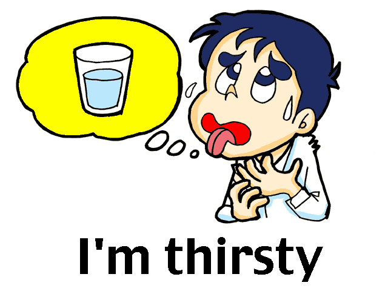
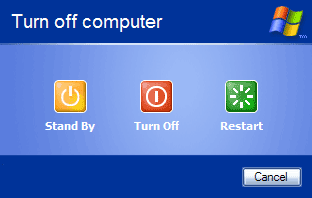
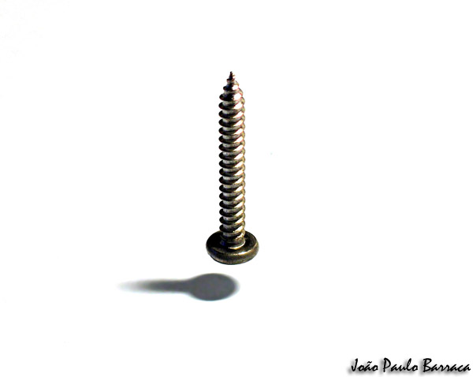
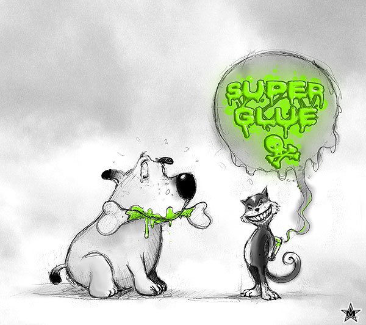
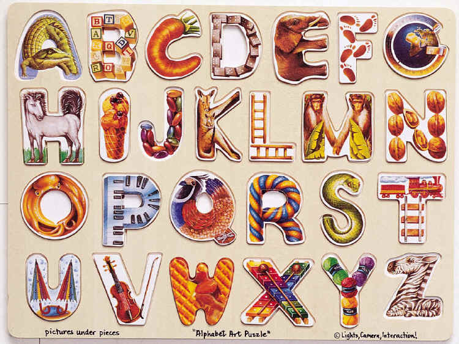
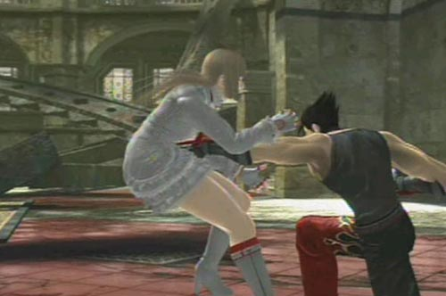
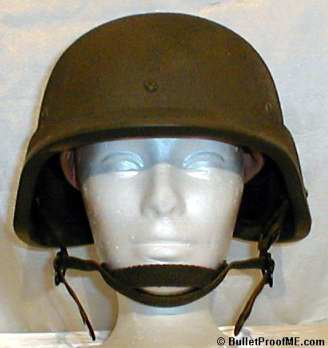

#2772 1 2005-05-07T19:44:26Z mascote_ponto Why don't you create a feature wich could allow us to play in slow motion? I think that would be fine!

#64208 6 2005-05-07T22:28:35Z mascote_ponto LV'D!!
#2869 1 2005-05-15T19:41:16Z mascote_ponto er...
I think that in the next n version, the gold sound should be a bit diferent, I mean, it is kind of irritating...

What do you guys think?


#67205 22 2005-05-16T20:25:27Z mascote_ponto ok...

i guess i'll never suggest any interesting thing

#67374 26 2005-05-17T18:46:28Z mascote_ponto Thanks Eldrial
I now feel iluminated


#2949 1 2005-05-21T21:19:57Z mascote_ponto Wouldn't it be nice to have a secret (or non secret) mode in which you could play in REAL full screen?

#69190 21 2005-05-24T21:03:01Z mascote_ponto Er...
Weren't we talking about the full screen?

#69693 5 2005-05-26T16:39:11Z mascote_ponto are you sure that the userlevels.txt is in he same folder as the game?...
#69705 25 2005-05-26T17:26:35Z mascote_ponto
by the way, the DDA is cool
")
#69707 19 2005-05-26T17:34:05Z mascote_ponto I think the high scores shoul be only for levels, not episodes.
Or even better, the score of the episodes should result from the best level scores
Understood?

#3018 1 2005-05-26T21:43:56Z mascote_ponto Er...
Have you guys looked carefuly at the main menu?

I mean, wouldn't it make more sense if the "story" and "high scores" places were switched?
Am I being clear?
#69746 4 2005-05-26T21:56:22Z mascote_ponto It looks like this:
play game
user levels
story
high scores
configure
help
credits
quit
but it should look like this:
play game
user levels
high scores
story
configure
help
credits
quit
because in the first group is where you play

in the second you don't
and the third is the one that no one cares about (jud kidding

)
Am i clear now

#69963 6 2005-05-27T15:35:31Z mascote_ponto A buton for Ned would be nice
, however, it is not easy to separate it of the debug mode, i guess.
About the tricks section, forget it
#70183 46 2005-05-28T10:13:04Z mascote_ponto Being optimistic, I'd say a 5.

I haven't even beaten the game yet
#70194 2 2005-05-28T11:48:59Z mascote_ponto #3048 1 2005-05-28T11:54:45Z mascote_ponto What do you guys think of a dynamic flavour, that would make N assume the color of his life bar, or something like that?

#3049 1 2005-05-28T12:25:50Z mascote_ponto I think this would help everybody:
In the main menu, during the demo playback, in the bottom of the screen, should appear the number and name of the level (just like when we are playing). I'm saying this, because sometimes I watch demos and want to play them, but i don't remember the episode and the level numbers.
Also, there shold be an option in the configure menu to turn on/off the demo playback.

#3050 1 2005-05-28T13:06:08Z mascote_ponto Er...
Don't you think that the kill count total should also be displayed in the high scores section?
#70254 4 2005-05-28T16:43:11Z mascote_ponto You must have mistaken something, maniac.
On the kill count you can only see the number of times that you were killed by EACH enemy
, not the total of deaths.

#70266 6 2005-05-28T17:01:01Z mascote_ponto Thanks for the information glenno14! I didn't know that!
Wouldn't it make our lives easier? I think it would...

#3057 1 2005-05-28T17:21:59Z mascote_ponto It's just for you guys to know that my name is no longer JPAQ.
Now i am mascote_ponto. (don't care about the meaning. It's portuguese
)
Of course i'l also thank Keron Cyst for it:
THANKS KERON CYST
#70298 11 2005-05-28T17:36:33Z mascote_ponto Thanks for the information glenno14! I didn't know that!
that sounded like rude sarcasm. 

#3060 1 2005-05-28T18:27:57Z mascote_ponto Has anyone played Jet Set Radio Future?(X Box)
In that game there is a metter that shows the speed of the caracter.
It would be nice applied to N.
#70571 5 2005-05-29T16:39:46Z mascote_ponto That's true, but it won't count as an high score
#70572 13 2005-05-29T16:58:02Z mascote_ponto The exit openning sound is beautiful. I'd even call it revitalizing!

M & R could add a sound for when you finish the level, dont you think?
#71923 5 2005-06-03T08:58:04Z mascote_ponto I agree
, but, as you said, it isn't brobably easy
.
#3169 1 2005-06-04T11:40:31Z mascote_ponto I've actualy submited my first map on numa. Could yo guys take a look and tell me what you think, please?
My map#73045 5 2005-06-07T17:57:52Z mascote_ponto I actualy like the blood

, but an option to turn it off would only be an option
, so...
YES
#73046 8 2005-06-07T18:03:55Z mascote_ponto Er...
I actually don't like it.
I think no more different enemies should be added, because if that happened, n wouldn't be n anymore

In my point of view, only options and new levels should be added
, nothing else.
#73048 9 2005-06-07T18:12:16Z mascote_ponto Reset the high scores=death

I've only got a few (and bad ones) and if someone did that i'd...(Idon't know what I would do...
)
How would trib4lmaniac feel?
#3232 1 2005-06-07T18:43:13Z mascote_ponto Ok, I know i look like a clown asking this, but i would apreciate to know how can i do animated gif's?
don't laugh...
#73057 11 2005-06-07T18:52:11Z mascote_ponto well then does anyone know when N2 comes out?
When the source code is released, what I picked up is that M&R would not make it, well, they have not said they would. I thought it would be some devoted N fan who would make it, along with suggestions from all of us.
What?
I don't want an N2 that is not from Metanet!

#3233 1 2005-06-07T18:58:10Z mascote_ponto Do you remember what M&R had made with the "time trial" option in the main menu, long time ago?
They incorpored it in the high scores section.
What about doing the same thing with the play game section, so that we can view the high scores as we play the episodes?
#73575 8 2005-06-09T21:24:05Z mascote_ponto I like the "copying items in ned" idea
The others not...
#3255 1 2005-06-09T21:34:37Z mascote_ponto I want a way to change my *.SOL file, wuithout going to the end of the world!!!
All the times I use other *.SOL files, i have to enable the "view hidden files" option, and go through a series of folders, before reaching the file.
Can't M&R do something about this?
#3264 1 2005-06-10T20:47:51Z mascote_ponto For you who have played previous versions of N, and felt the frustration of having to start over
the episode, when out of time, don't you think that M&R should keep this in the game?
I got quite diapointed when I realized that in N 1.4, you only had to restart
the level, when you had no more time.
#73787 3 2005-06-10T21:16:20Z mascote_ponto I've never read that thread.

OK, you win...

#3266 1 2005-06-10T21:24:45Z mascote_ponto I was wondering about this...
Which finger do you use
to jump, when playing N?
I use the middle one...
#73872 16 2005-06-11T09:07:15Z mascote_ponto A friend gave it to me. It was v 1.2
Then I gave it to another friend. If you wanna know, he is johny_faneca, in this forum, JF...

#73873 18 2005-06-11T09:34:07Z mascote_ponto Want another example?
In
HartView's Cliffs.
See gold piece in the top of the screen?
How haven't you noticed? It qualified for NTTS.
#3271 1 2005-06-11T09:40:09Z mascote_ponto During the high scores replay, we should be able to pause, rewind, fast forward, and all that stuff, I think.
What about you
#73883 3 2005-06-11T10:42:35Z mascote_ponto It would look like this:
Attachment (lost): post-8-1118486555.jpg
#74161 2 2005-06-12T09:51:56Z mascote_ponto Very funny...

By the way, what is that gold piece for?
#3285 1 2005-06-12T10:13:03Z mascote_ponto I don't know if i should write this in the complaints section...
, because this is quite irrelevant.
I have noticed that in the volume configuration, you can select all values between 0 and 99,
except 49.
#74169 5 2005-06-12T10:32:06Z mascote_ponto I actualy pronounce "goss".
By the way, how have you thought of a pool like this one???

#74173 4 2005-06-12T10:46:20Z mascote_ponto
I just can't.
I have tried lots of times, but it just goes from 48 to 50.
You are using v1.4 (the final one), aren't you?
#74178 6 2005-06-12T11:09:36Z mascote_ponto Hey, that's not fair!!!
(just kidding, well done
)
By the way, should'nt M&R change this?
#74182 9 2005-06-12T11:47:58Z mascote_ponto Er...
I don't know anything about programming
, but it doesn't look that tricky to fix...
#74261 16 2005-06-12T16:17:23Z mascote_ponto About your ideas...
Do you want me to be kind (and say that they all rock), or truth (an tell you that I don't like any of them)?
#74263 13 2005-06-12T16:23:09Z mascote_ponto that's big fiction though
That's what I think.
Every gameplay features from N are already defined.
No one will change them, so just forget...
#77729 26 2005-06-23T17:01:00Z mascote_ponto I'm 15 years and 6 days old (not for everybody...
).
#77731 31 2005-06-23T17:07:47Z mascote_ponto Proudly a male
")
#80520 26 2005-07-02T11:54:35Z mascote_ponto I love the idea
It's just wonderful
But, as you said, it shouldn't count for high scores and if you'd beat a level, it would be considered a cheat...
#3541 1 2005-07-02T12:21:10Z mascote_ponto What about having some "chalanges" requesting you to get a certain score for some levels, and if you do, you'd unlock some stuff, for example images for you to see and save in a folder (artwork?)
Got any more stupid idea?
#80530 4 2005-07-02T12:45:05Z mascote_ponto That's what i was thinking...
#80533 6 2005-07-02T12:56:06Z mascote_ponto At last it isn't as stupid as I thought...
#80594 3 2005-07-02T19:05:49Z mascote_ponto In fact, it would be fine if you could do that with
all the objects...
How haven't i thought about this before?...#80600 9 2005-07-02T19:14:23Z mascote_ponto It's the 547596th time (or something like that)
that I say:
Anything that affects gameplay shall not be added, so,
#80619 5 2005-07-02T20:48:13Z mascote_ponto I mean mines, drones, doors, switches, ...
#80645 27 2005-07-02T21:25:28Z mascote_ponto Er... I don't know if i should post this here...
I've seen the other program you've got in your site, the "N Pathfinding Algos" and it doesn't work... It mistakes the algos.
Or is it from my computer?
EDIT:
Oops...
I 've only now realized that there was a thread for that program...
#80653 8 2005-07-02T21:40:30Z mascote_ponto I'm not pretending to be unkind, but doesn't it mistake the Algos?
In my computer, it does.
#80655 2 2005-07-02T21:54:52Z mascote_ponto Yes, if it doesn't bring bugs...
#80791 15 2005-07-03T10:04:14Z mascote_ponto In fact I was thinking of a "galery" that you would fill with images that you unlock (just like in Prince of Persia WW) and the ability to save them in a folder...
#80880 16 2005-07-03T20:17:06Z mascote_ponto With that background, i think the 2nd would be the best...
#3554 1 2005-07-03T21:07:47Z mascote_ponto I need HELP!
I want an image in my signature, but i don't know how to upload one.
Is there any way to do it?
Please don't insult me...
#3555 1 2005-07-03T21:33:00Z mascote_ponto Er...
It's just for you to know...
Most of my high scores weren't made by me...
johny_faneca (JF...) usualy comes at my home and says "Let's play some N"
, AND HE MAKES ALMOST ALL THE HIGH SCORES I HAVE, AND MOST OF THEM ACCIDENTALY!!!
And I don't play a s***

Oh, and he didn't ask me to post this...
#80892 5 2005-07-03T21:41:54Z mascote_ponto What do you want me to do?
We play in turns, he makes high scores and I don't.
Of course I let him play. He's my best friend!
#81289 6 2005-07-05T16:41:33Z mascote_ponto 001110100010011100101000000011010000101000001101000010100100010101000100010010010101010000111010000011010000101001001001001000000111001001100101011000010110110001111001001000000110100001100001011001000010000001110100011011110010000001110011011000010111100100100000011100110110111101101101011001010111010001101000011010010110111001100111001000000110010101101100011100110110010100101100001000000111001101101111001011100010111000101110000011010000101001001001001000000111010001101000011010010110111001101011001000000111011101100101001000000110000101110010011001010010000001100110011100100110010101100101001011100010111000101110000011010000101001001001001000000110110001101001011010110110010100100000011000100110100101110010011001000111001100101100001000000110110101100001011010010110111001101100011110010010000001110100011010000110010100100000011011110110111001100101011100110010000001110100011010000110000101110100001000000111001101101000011010010111010000100000011011110110111000100000011100000110010101101111011100000110110001100101001001110111001100100000011010000110010101100001011001000111001100101110001011100010111000001101000010100100010101111000011000110110010101110000011101000010000001101111011011100010000001101101011010010110111001100101001011100010111000101110001000000010100001001001001000000110010001101111011011100010011101110100001000000110110001101001011010110110010100100000011101000110100001100101011100110110010100100000011011110110111001100101011100110010111000101110001011100010100100001101000010100101010001101000011000010111010000100111011100110010000001100001011011000110110000100000011000010110001001101111011101010111010000100000011000100110100101110010011001000111001100101100001000000110110001100101011101000010011101110011001000000111010001100001011011000110101100100000011000010110001001101111011101010111010000101110001011100010111000100000010000110100100001000001010010010101001001010011
#82016 27 2005-07-08T19:02:35Z mascote_ponto N should have a
...
PIANO
, to play...
And live happy ever after
Or not...
#3623 1 2005-07-09T16:17:54Z mascote_ponto I've thougt of a feature of N, that would be smething like the...
TOTAL GAME SCORE (or something like that
)
This would add ALL the scores from ALL the levels and ALL the episodes. (except the userlevels, of course
)
This would be the best thing for us to know who REALY is the best
#82351 4 2005-07-09T16:20:45Z mascote_ponto I completely agree!!!
How hasn't anyone thought about this before?
#82353 3 2005-07-09T16:22:14Z mascote_ponto Even so, it would be pretty fine to have...
#82381 13 2005-07-09T17:47:48Z mascote_ponto I'm all for it!
Oh, but it should be optional.
#82391 6 2005-07-09T18:24:11Z mascote_ponto Already suggested, as usual.
Although it has indeed been suggested before
#82401 51 2005-07-09T18:55:13Z mascote_ponto N shoul be able to tag the level, marking his (its???
) territory!!!
And the graffities should be editable
.
And when the enemies pass near the tag, they are disabled and N beats them up and...

I think that's enough...
#3625 1 2005-07-09T19:29:49Z mascote_ponto Imagine that you want to delete a level that you have on the userlevels file.
You would have to search in that
HUGE file for the level and then delete it.
There could be an option in the main menu to do so.
It also goes for when you are adding levels.
You should be able to enter the data, the author name, etc... and it would create it for you, just like our beloved NUMA does.
What do you think?
#3627 1 2005-07-09T21:04:28Z mascote_ponto What do you think of seing the readme file and all these stuff IN the game? (Perhaps in the help setion?
).
I'm saying this because when I first received N, it was just the flash file
.
If what I'm saying is done, no one can delete this important information...
Oh, and if you think this post is a loss of time,
#82522 4 2005-07-10T09:38:59Z mascote_ponto Well...
I've only made three maps so far (I'm starting my NUMA career
), and one is rated and the others still need four and five votes.
This is annoying, isn't it?
Oh this is in my signature
#82528 9 2005-07-10T10:05:22Z mascote_ponto To me too...
Actualy, I think the frame-by-frame mode should be with the Caps Lock active and the "normal mode" with it desactiveted.
By the way, aren't we going off-topic?

#82559 5 2005-07-10T13:38:30Z mascote_ponto It doesn't make sense and it won't be made. End of story.
#82561 9 2005-07-10T13:58:13Z mascote_ponto I allways use them
. It is amazing how usefull they are to make an organized level!!!
#82618 22 2005-07-10T18:41:43Z mascote_ponto Er...
Could you check the ones in my signature, please?
#82621 14 2005-07-10T19:13:52Z mascote_ponto Also, M&R addressed the Ned issue: they figured if you're going to be making levels, read the manual!
I think people would prefer to read the manual IN the game.
I think they could do something like the story or the help section (by the way, i think this one rocks, for new people
).
#83218 15 2005-07-13T15:01:18Z mascote_ponto More or less 4 months. I haven't evolved much since then...

#83219 14 2005-07-13T15:04:46Z mascote_ponto I voted 5, i guess it's something like that...
#83220 6 2005-07-13T15:11:39Z mascote_ponto N is single player. End of story.
#83439 7 2005-07-14T17:41:31Z mascote_ponto I like it, however, there is a litle problem:
US, who have played a lot, and if this feature is implemented, even with all the hours, days
, weeks
, perhaps months
, we have spent in the game, the count would start at ZERO
#83669 26 2005-07-15T14:29:24Z mascote_ponto When I play N, I'm usualy at the forum too, or doing other things, so, WINDOWED
#83935 2 2005-07-16T11:10:54Z mascote_ponto It doesn't open on my PC...
This window appears:
Attachment (lost): post-33-1121512254.jpg
#83937 14 2005-07-16T11:16:16Z mascote_ponto It shall not be made, for obvious reasons, as you said, however, it is quite logical...
#83938 11 2005-07-16T11:23:50Z mascote_ponto Loved that post, Toshosoft...
I don't know why these guys keep coming up with these foolish ideas, it realy irritates me...
I don't like it at all...
4/10
Try to think of another thing...
#84025 13 2005-07-16T18:48:48Z mascote_ponto It would be nice, and about the help section, i think it could be a reason for people to read the MANUAL.
#84165 11 2005-07-17T10:00:46Z mascote_ponto Still doesn't work...
WHAT HAVE I DONE???
#84172 13 2005-07-17T10:29:02Z mascote_ponto Er... yes
#84210 16 2005-07-17T14:50:07Z mascote_ponto mascote_ponto: Did the original work for you? Have you tried downloading and running the file I linked too. What are the specs for your computer?
1 - The original to also didn't work (same error).
2 - I installed the program you gave me.
3 - My computer:
Windows XP w/ servivce pack 2
Pentium 4 CPU, 266 GHz
RAM: 512 MB
#84211 2 2005-07-17T15:04:14Z mascote_ponto I just love it.
It is very good, but it can be improved even more.
I'd rate it 7.5/10
#84213 18 2005-07-17T15:12:24Z mascote_ponto Pentium 4 CPU, 266 GHz
Awesome! Where can I get one?
Oops, I meant 2.66 GHz
#84380 25 2005-07-18T09:50:46Z mascote_ponto Do any of my other programs cause errors or is it just this one? (I mean non-level data)
The only other program of yours that i have is the super mario bross skin, and it works fine.

Just out of curiousity, what resolution and color depth are you running at?
1280 x 1024 and 16 bit (in 32 bit, N runs sloooooowwwwwly

)
#84455 3 2005-07-18T20:20:57Z mascote_ponto We have already got winners: Mare and Raigan
#84602 28 2005-07-19T08:51:51Z mascote_ponto Just out of curiousity, what resolution and color depth are you running at?
1280 x 1024 and 16 bit (in 32 bit, N runs sloooooowwwwwly )
If you set it to 32-bit, can you run this program? I'm sure it sounds like an odd fix, but I've solved overflow errors elsewhere by changing the color depth.
I have already tried that.
Doesn't work...
#84604 12 2005-07-19T09:26:57Z mascote_ponto The book isn't translated to Portuguese yet...
I guess I'll have to wait...
#84628 15 2005-07-19T10:24:11Z mascote_ponto I can read English, but I won't waste my money now. I preffer to wait and read it in portuguse.
It's easier...
#84675 2 2005-07-19T18:05:27Z mascote_ponto Man, are you crazy?
No way!!!
Oh and this has already been suggested about 5478 times.
#84868 6 2005-07-20T15:27:58Z mascote_ponto The idea is very good.
Ok, it sucks...
#85109 22 2005-07-21T17:23:28Z mascote_ponto Here is mine...
Attachment (lost): post-20-1121966608.jpg
#86559 11 2005-07-28T10:06:55Z mascote_ponto Those ideas rock...
All of them!
Those features would be very useful, if implemented.
#86816 6 2005-07-29T10:21:36Z mascote_ponto 8/10
#87153 2 2005-07-30T16:38:17Z mascote_ponto This would rock.

(but yeah, it has been suggested before...
)
#88308 18 2005-08-04T18:33:32Z mascote_ponto Cant you just give as a clue about what it will be like?
Maybe that way we can rest in peace...
#88570 14 2005-08-05T14:41:30Z mascote_ponto I want a downloadable version...
#88626 20 2005-08-05T18:58:12Z mascote_ponto SWFs are downloadable.
How?
#91285 546 2005-08-15T14:02:47Z mascote_ponto The image isn't bad and the quote rocks.
Also liked the other scentences.
7.5/10
#4075 1 2005-08-16T21:01:38Z mascote_ponto I don't know if this has been suggested before, but I would like to see the demo data of my own races not only in the userlevels, but also in the "real" levels.
What do you think?
#91909 4 2005-08-17T10:27:09Z mascote_ponto It's called a personal best. Go into the highscores and choose a level. There's a box in the top left with your personal best time on each level. Click on it to view the demo.
You are making me feel stpid. Of course I know that...
I think he just wants the demo data for it though.
That's more like it...
#93469 9 2005-08-23T11:18:49Z mascote_ponto Then how do i do it???
#94288 36 2005-08-26T16:10:33Z mascote_ponto What about copy + paste for objects?
#94353 14 2005-08-26T20:27:54Z mascote_ponto Ok, just calm down...
door
#97982 53 2005-09-06T14:28:49Z mascote_ponto Piano...
#100972 24 2005-09-16T08:56:18Z mascote_ponto Done.
Good luck, Mare and Raigan. You deserve it.
#102152 12 2005-09-19T19:05:52Z mascote_ponto Yeah, neither me...
#103530 10 2005-09-25T13:36:53Z mascote_ponto You should put mines...
But please!!! Make it!!!
EDIT:
I had an idea:
What about a bounce block jump over a zap drone?
It would be nice, i think...
#104274 20 2005-09-28T18:13:32Z mascote_ponto Are we suposed to answer?
Or are you just kidding?

You get on the high scores list by making...

HIGH SCORES!!!
Easy as that...
AHEM!#104457 24 2005-09-29T17:40:25Z mascote_ponto mascote_ponto, don't do that again, please.
You are right, I shouldn't have posted that. It's already edited. Sorry everyone, mainly Killer...
#104463 5 2005-09-29T17:52:14Z mascote_ponto This has already been suggested, but I'm all for it! (It was me who suggested... lol)
#4561 1 2005-09-29T17:59:52Z mascote_ponto I have thought of one thing that would make a good unlockable...
It's...
The N Poser!!!
Maybe after beating three columns it would be unlocked...
But what for? We already have it at the forum! - I hear you saying...
Why not for configuring victory poses?
It would be soooooooo fun!
Please, make it in N 1.5, M&R!!!
PS: Of course, Lucidium should be credited...
#104684 12 2005-09-30T19:37:07Z mascote_ponto I think that is not a good idea at all...
1 - It has been suggested at least 26765.2 times before.
2 - It is already defined that things that alter gameplay must not be implemented now. Only if it is for a new game, but we won't suggest things for a game we haven't seen yet.
Now, please stop starting posts about weather and such things that are a NO
for sure
#4613 1 2005-10-04T19:26:33Z mascote_ponto I thought we should make a thread with the top three ideas people have and want to see implemented in the final version of N (N1.5).
You can only post three ideas. Only the ones that are REALY important, even if they have already been suggested.
This is mainly to help Mare and Raigan.
And my top three is...
...
..
.
1 - Total game score - The total of the scres of ALL the levels and ALL the episodes in the game (except the user evels, of course). I think this would be good for the less skilled (like me...
) to have something to play for. Since I can't compete for the highscores, I try to improve my total!
2 - Remove the "Play game" menu and input it on the highscores menu - This would make more people compete for episode scores.
3 - Level number and name at the title screen - This has already been discussed. For when I see ademo and want to play the level, but can't find it...
#106429 241 2005-10-08T17:23:13Z mascote_ponto Rated. Gave it a 4/5.
Now, could someone rate my newest map:
Ambigram 5?
The tileset is an ambigram of SPECT (he asked me to make it).
Enjoy.
#106697 243 2005-10-09T17:59:30Z mascote_ponto Gave it a 4/5. Can some one rate my
Tribute to a master?
It is a dedication to JF.
#107316 16 2005-10-11T17:30:26Z mascote_ponto Hey, why isn't the H option available?
LOL
#107605 22 2005-10-12T17:31:19Z mascote_ponto Wow, I almost forgot.
It is something that realy shouldn't be missing:
TOTAL kill count #107963 75 2005-10-13T17:54:24Z mascote_ponto Yeah, that's the day!!!
BRING THE NEWS!!!

#107986 26 2005-10-13T19:10:45Z mascote_ponto Can't you count manually?
Yeah, but it would be more user friendly.
It wouldn't be logical to have a kill count without the
total kill count.
* Timedemos (I understand server strain though)
What do you mean by that?
You can actualy watch the demos of the high scores and personal bests...
1. Rails to grind on you know like sonic. R.I.P slopes,loops,kickers
What for?
#109175 61 2005-10-19T20:04:39Z mascote_ponto I have an idea!
Why not allow only those who filled the surveys?
I think they deserve it...
#109179 63 2005-10-19T20:11:03Z mascote_ponto #109352 13 2005-10-20T18:28:11Z mascote_ponto
^
That's me...
#109356 651 2005-10-20T18:44:33Z mascote_ponto ^
Has a hipnotic avatar...
#109559 666 2005-10-21T19:11:17Z mascote_ponto ^ Has already unlocked two flavours
#109580 670 2005-10-21T22:04:04Z mascote_ponto ^ Shares my opinion...
#109584 4 2005-10-21T22:09:55Z mascote_ponto That is realy strange!
I've never seen such thing...
#109585 672 2005-10-21T22:14:56Z mascote_ponto ^ Is 14 years old...
#109682 677 2005-10-22T12:22:10Z mascote_ponto ^ Joined one month after my 15th birthday.
#109683 73 2005-10-22T12:29:44Z mascote_ponto I have no idea...

(I'm just posting so that the game can go on. No one is sahaping out to be intrested in answering...)
How do you imagine the next game?#109689 85 2005-10-22T13:33:08Z mascote_ponto Shut up you retart!
I have pitty of you...
Poor Killer...
#109695 11 2005-10-22T14:09:32Z mascote_ponto I agree!!!
HORRAY FOR NUMA!!!
HORRAY FOR ARACHNID!!!
Oh, and also HORRAY FOR FORMICA!!!
(for starting this thread...
)
#109706 88 2005-10-22T15:15:45Z mascote_ponto Wow. That is just... irony at its finest
Thanks!
What else did he deserve to hear?...
#109916 86 2005-10-23T09:59:01Z mascote_ponto @ mezar:
I know you are a newbie, but try not to revive such old topics, ok?
#109917 692 2005-10-23T10:06:50Z mascote_ponto ^ Will never receive a custom title...
#110014 90 2005-10-23T19:35:07Z mascote_ponto
How do you answer this question? #110145 20 2005-10-24T08:45:26Z mascote_ponto 1 - Welcome, Toby! (You seem to be someone who may contribute a lot to this community.)

2 - Congrats for being a newbie starting a good suggestion AND without misspellings. (That is not usual.)

3 - I'm all for it!
PS: Don't forget to PM Keron Cyst, if you want your name changed. #110163 22 2005-10-24T10:51:49Z mascote_ponto I have another suggestion in this line...
Sometimes i want to see the whole map, and I can't because some objects are hidden by the "menu". It shold be located at the bottom.
What do you think?
#110164 716 2005-10-24T11:00:31Z mascote_ponto ^ Is australian.
#4862 1 2005-10-24T11:13:25Z mascote_ponto The game works like this: Someone posts a question and then the following member answers with another question. For example:
How's the weather?
Don't you see?
Am I supposed to see?
Why not?
And so on...
I'l start:
Why do you play N?
#110184 4 2005-10-24T13:40:29Z mascote_ponto Why don't you asnswer it?
#110185 641 2005-10-24T13:45:44Z mascote_ponto ^ 10/10
It has everything it needs and nothing else.
#110196 7 2005-10-24T17:02:26Z mascote_ponto Who wouldn't?
#110205 9 2005-10-24T17:24:43Z mascote_ponto Why are you going off-topic?
#110209 94 2005-10-24T17:31:02Z mascote_ponto I have no religion. I think religions make no sense. I don't belive such things unless someone shows me good proofs. And that hasn't happened yet.
Will you answer this question with a "no"?
#110211 11 2005-10-24T17:32:44Z mascote_ponto Is it me who is going off-topic? #110223 13 2005-10-24T18:04:19Z mascote_ponto Isn't that the goal of the game?
#110232 15 2005-10-24T18:58:00Z mascote_ponto What is confunding you?
#110435 5 2005-10-25T17:15:11Z mascote_ponto Maybe also the animation of the gold when you get it or the explosions
#111526 16 2005-10-30T22:24:02Z mascote_ponto I'd like to see something like this on the configure menu:
Blood level:
--------| 5 |----------
It would be good as an unlockable...
#111664 39 2005-10-31T22:28:13Z mascote_ponto This is still my favorite thread in this section, so I'm gonna bump it up again.
It was started by me...
I'm touched...
I
REALY hope Mare and Raigan read this...
If they do, N1.5 will probably have many improvements.
#112552 28 2005-11-05T11:23:19Z mascote_ponto *Votes "strongly agree"*
People who post like
this should have no place around here...
#112870 807 2005-11-06T15:07:50Z mascote_ponto ^ Is online.
#113110 50 2005-11-07T20:08:05Z mascote_ponto 3. A way to destroy noobs for all eternity.
ROFL
I liked that one...
#113911 18 2005-11-11T20:05:54Z mascote_ponto #114957 2 2005-11-14T19:05:57Z mascote_ponto Man, are you crazy???
That is not N....
That is somone else...
I don't know that guy...
no... round head... please... no... not N... triangle...

#114971 366 2005-11-14T20:00:12Z mascote_ponto JF, I'm so proud of you...
#115476 8 2005-11-16T19:36:40Z mascote_ponto Well, I don't like any of those ideas.
Things that modify gameplay, like new moves, tricks, super powers won't_be_done.
Leave them for DragonBall or something, but not N...
#115479 4 2005-11-16T19:42:01Z mascote_ponto Hey, ejsrocket, I don't think the idea is bad.
It just can't_be implemented, so don't think you gave a bad suggestion.
#115670 89 2005-11-17T18:25:38Z mascote_ponto 100/100
^ My best friend, nothing more to be said...
#115676 3 2005-11-17T18:53:27Z mascote_ponto If your ms/f is between 8 - 12, it means N in your PC runs smoothly...
#115682 92 2005-11-17T19:34:31Z mascote_ponto 80/100
I guess everybody knows you...
#115859 3 2005-11-18T19:29:47Z mascote_ponto I have another thought about that:
Imagine I'm a new player and, for precaution, I turn on practice mode.
But the first level is not that hard.
I've beaten it.
I have baten all the levels on the first episode in a short time, BUT since practice mode is on, I have to do it all over again.
I could have done it. Why did I use practice mode? NOOOOOOOOOOOOOOOOOOO!!!
Ok, I think you understood: With practice mode active, the episode should only be considered "cheated" if the player exceds the time limit.
#115860 16 2005-11-18T19:34:20Z mascote_ponto Well, I actually like the gold the way it is, so I don't want it changed...
#5251 1 2005-11-18T21:00:30Z mascote_ponto Ok, every body knows (I guess
) that the one who is now on top of the highscore rankings is johnny_faneca
, and I think he should be given a custom title for that.
So, I'm starting this topic for you to post your ideas and/or suggestions for his title.
I have one in mind, but since JF doesn't want me to tell you, I'm not saying it. (For now...

)
CONGRATULATIONS JF!!!
#115890 698 2005-11-18T21:32:44Z mascote_ponto Simple and eficient...
9/10
#116170 8 2005-11-19T15:16:21Z mascote_ponto I just want to mention that trib4l is still 0th on 1.3c.
Furthermore, JF got his 0th because trib4l stopped playing N (for whatever reason).
AND: trib4l got his title so much later. I even can remember it! JF should wait some time and take some more highscores. Especially he should do what trib4l did: 181 highscores on 1.3c...
Man, I don't really agree.
If trib4l got his title many time after he asked it, JF has nothing to do with it.
Maybe you are just jealous.
Congrats for trib4lmaniac. I admire your atitude.
#116174 109 2005-11-19T15:26:41Z mascote_ponto 90%
Nothing more to be said...
#116184 10 2005-11-19T15:55:10Z mascote_ponto He is the embodiment of the one true highscore grandmaster.
Then what is JF?
#116203 12 2005-11-19T17:11:54Z mascote_ponto Now I'm convinced: it's jealousy...
#116209 14 2005-11-19T18:24:15Z mascote_ponto Well, at that time JF didn't even know about the game, I think.
If he did, he wasn't aware of the existance of the highscores or the forums (he had v1.2).
So...
#116532 64 2005-11-20T19:01:25Z mascote_ponto Well, you can actually take screenshots.
Just press Alt+Prt Scr and you get a screenshot on your clipboard.
#116826 6 2005-11-21T19:37:43Z mascote_ponto I don't like it...
GOLD is GOLD. Nothing can replace it.
#118461 25 2005-11-27T12:27:26Z mascote_ponto Yeah, I agree with Atramentis.
I was thinking of something like in Wik and the Fable of Souls...
EDIT:

Can you see the trail of purple light behind him?
That is what I was thinking...
#118488 183 2005-11-27T15:48:33Z mascote_ponto 70%
#118489 725 2005-11-27T15:56:19Z mascote_ponto 7/10
The characters are not very understandable, but it's N...
BTW: I think the only way to insert *.swf files in your sig is to convert them into animated gifs, but I'm not sure...
#119348 22 2005-11-30T18:08:52Z mascote_ponto I also like it...
#119769 226 2005-12-02T09:26:34Z mascote_ponto 100/100
I think you might know why...
#119771 45 2005-12-02T09:33:23Z mascote_ponto For the past. The future i would see would never be the real one, because if I knew it, I would change it
.
Which answer would you give me if I asked you something like this?
#119855 35 2005-12-02T19:03:27Z mascote_ponto has anyone played yoshi's island/SMW2?
Does Yoshi also have a trail of light behind him?
What do you think of this suggestion, Raigan?
#120322 4 2005-12-04T12:13:24Z mascote_ponto I actualy think that should be done.
I've seen boss modes in other games, which have clocks, fake antiviruses, fake google searches, and they actually look fun.
#121148 10 2005-12-07T18:15:32Z mascote_ponto The best solution is definetely not to cheat...
#121151 5 2005-12-07T18:17:54Z mascote_ponto It's not that bad. It's just undoable.
#122384 18 2005-12-12T20:06:10Z mascote_ponto Er... It hasn't. It starts with the two ones. I have no doubt about it.
By the way... Aren't we going off-topic?
#122624 3 2005-12-13T18:17:47Z mascote_ponto Try it, but don't talk about it here. It's a secret.
Can someone remove this thread?
#129225 39 2006-01-02T14:30:14Z mascote_ponto The trailer sure rocks.
You guys have a freking sense of humor...
May the force be with you.
#129234 20 2006-01-02T14:49:28Z mascote_ponto It would be better if, after you beat an episode, each episode, you can view the level date for each level.
I think this would be funnier than if you only unlocked them all just at the end of the game...
But this is only my opinion, of course...
#130559 3 2006-01-07T21:13:32Z mascote_ponto Come on , Sucker. He is talking about an IN GAME feaure, so don't post such answers, that don't contribute to the thread at all...
Abou the suggestion, I agree that it would be cool as an unlockable. (Maybe for rows of episodes, instead of columns...
)
#130777 125 2006-01-08T13:06:10Z mascote_ponto I like those, Haydn.
I also like your nick.
#133747 19 2006-01-19T18:18:53Z mascote_ponto I'm so proud of you two...
YOU ROCK!
#134366 15 2006-01-21T18:09:59Z mascote_ponto Well, I hope you like it...
Have fun!
N will probably win...
#136134 160 2006-01-26T19:00:48Z mascote_ponto 2) Being able to make highscores even if you dont unlock the level
Then everybody would cheat instead of beating the game properly. That is not good.
#136423 15 2006-01-27T19:00:44Z mascote_ponto Congrats... Now we only want more award-winning games...
#136447 2 2006-01-27T21:05:49Z mascote_ponto No...
That way, N wouldn't be N anymore...
#136449 2 2006-01-27T21:14:25Z mascote_ponto This one is a known glitch...
We usually call it "the ghost gitch".
In fact it doesn't have to be with a rocket. If you get hit by an enemy and then you hit a launchpad, youenter a state where the only thing you can interact with are the tiles.
It's pretty annoying.
The best thing you can do is press the [kill button]...
#137095 9 2006-01-29T16:56:59Z mascote_ponto I'm actually kind of sick of this kind of ideas...
N doesn't need anymore enemies. Mare and Raigan won't ever put new enemies on N, for sure, so why do people still start this kind of topics?
#138647 15 2006-02-02T18:13:19Z mascote_ponto This prooves that a good suggestion doesn't need to involve new enemies or somthing like that...
I'm all for it!
However there would be a problem with the
already made highscores, but in these should appear "date not available" or something...
#138653 17 2006-02-02T18:29:34Z mascote_ponto No...
Highscores are dynamic. Freezing highscores isn't a good idea.
#140900 655 2006-02-08T18:47:05Z mascote_ponto #141348 662 2006-02-09T19:51:27Z mascote_ponto #141809 673 2006-02-10T19:11:25Z mascote_ponto #141823 17 2006-02-10T19:32:11Z mascote_ponto 
Sorry, I drunk your water...
#141829 20 2006-02-10T19:43:32Z mascote_ponto
No war, please...
#141831 22 2006-02-10T19:47:14Z mascote_ponto
You missed the shot...

#142704 35 2006-02-12T18:55:06Z mascote_ponto 
No more games...
#142707 54 2006-02-12T18:58:08Z mascote_ponto ^ Joker
#142714 209 2006-02-12T19:06:28Z mascote_ponto When after 10 5-days-of-work-weeks you think you achieve transcendence and buy new clothes.
#143515 19 2006-02-14T18:23:11Z mascote_ponto I'm with Maniac.
N is a simple game, where power-ups never existed and will, most probably, never exist. The flavours are just to make more people want to beat the game and diversify, somehow.
#144026 8 2006-02-15T13:38:37Z mascote_ponto This has already been suggested but I think it is a good suggestion and should be done.
#144027 8 2006-02-15T13:45:11Z mascote_ponto *Votes
Other*
I've already seen those suggestions lots of time. I don't like any of them.
The ones I want are
here.
#144029 16 2006-02-15T13:47:09Z mascote_ponto "N" is a ninja, not tarzan.
He said everything.
#144031 4 2006-02-15T13:49:01Z mascote_ponto I don't think it would fit N.
But perhaps for a new game?...
#6876 1 2006-02-15T18:52:01Z mascote_ponto Evolution has happened since life on earth begun. All living things have ancestrals who have evolved to the actual animals plants, fungi and so on. Now, the Ninja (
homo agilis) is the descendent of the humans (
homo sapiens). The humans will, by natural selection, origin more agile creatures and with big pointy heads (because of the increase of cerebral activity) known as ninjas (
homo agilis). Also, by the increase of consumerism in society, these creatures can't live without gold. That is, in fact, what they breathe.
Now you give more ideas about who our beloved ninja is, and we'll build a kind of biography for him. What do you think?
#144604 8 2006-02-16T18:38:44Z mascote_ponto Thanks for getting my idea, The_Juggler.
@everyone else: I have read the story mode. But we can make up ours, can't we?
The first ninjas to appear were totally black. Although, by cross-breeding of some humans with ninjas, new collored ninjas started to appear. Nowdays, we can finnd ninjas with all sorts of colors.
The ninjas were avid for gold, as humans do, however, they can't really survive without it. That is what they breathe. This is what humans start fearing. Soon, all the gold in the world would disappear, and the ninjas had to be stopped. A human, whose name is not known by most of us, started a work similar to Hitler's: kill all living ninjas, by stopping them from colecting gold. The war has started.
His plan is still in march. Almost every human has his personal room for gold storage, protected by deadly robots and all kinds of ninja hazards. Although entering them may not be difficult, exiting them is. Only the best trained ninjas can do so.
That is what N cares about.
All ninjas recieve this letter when they born:
[Check [b]Story[/b] section]
When they clear "The way of the ninja", the real test begins...
Edit: *Reads text*
I'm inspired, today!
#6889 1 2006-02-16T18:48:49Z mascote_ponto What do you think of Mare and Raigan include
this in the
Story section?
A user-made biography for N. It would be nice...
I think...
Or maybe not...
What do you think?
#144607 10 2006-02-16T18:50:13Z mascote_ponto Thanks.
(<-- I love that smiley
)
#144610 27 2006-02-16T19:02:19Z mascote_ponto I press
Add Reply
Make a stupid poetry
Then you laugh at me...
#144619 12 2006-02-16T19:50:40Z mascote_ponto Er...
If ninjas are the descendents of humans, they can't be born by eggs...
#145039 42 2006-02-17T21:33:47Z mascote_ponto
A storm shuts off the power...
#145042 714 2006-02-17T21:43:59Z mascote_ponto 8/10
It's nice...
#145471 45 2006-02-19T00:18:46Z mascote_ponto
^
Athlete's foot...
#145740 63 2006-02-19T13:09:22Z mascote_ponto *reads all thread*
ROFL
How could someone belive that those were real screenshots? This looks like an April fools joke!
The quality is horible. The one with Yoshi looks better.
Can someone lock this?
#145927 50 2006-02-19T22:13:12Z mascote_ponto
Not for long...
#145930 964 2006-02-19T22:24:45Z mascote_ponto Er...
Guys, look what I've found...
http://www.pickle-green.com/egraphics/main.php?id=eggs
I thought this might be relevant...
#146232 27 2006-02-20T18:43:23Z mascote_ponto I think this thread is ridiculous.
Only because naem makes runs which are almost impossible to make, I don't think we should call him a cheater. He is a good player.
And also, how could he cheat? Frame by frame is not acessible in the game, so... Don't be jelous...
#146656 5 2006-02-21T18:10:59Z mascote_ponto Good suggestion.
I think it woud be nice as an unlockable, to turn on and off.
#147124 9 2006-02-22T18:34:33Z mascote_ponto I like the idea.
(And it doesn't seem that hard to implement...
)
#147533 5 2006-02-23T18:23:46Z mascote_ponto Yes, I like them too.
About the first one, I wouldn't picture it as an unlockable, but something like... You beat a level, then the "predefined" record would disappear and yours would replace it.
#147992 45 2006-02-24T19:22:27Z mascote_ponto When you pres "Print Screen", the screen capture is saved on your clipboard. You have to paste it somewhere.
#147994 19 2006-02-24T19:33:43Z mascote_ponto The best is number 4. (Keep dreaming...)
#147999 48 2006-02-24T19:40:12Z mascote_ponto I press "prt sc/home"
You should press "Prt Scr", not "Home"
If you said "prt sc/home" bcause they are in the same key, try "shift" + "prt scr".
If it still doesn't work, I don't know what you should do...
#148420 2 2006-02-25T15:28:35Z mascote_ponto Does that mean that if we ask for a custom title we "loose" posts, or we just need to have 200 posts to get the title?
#7059 1 2006-02-25T16:35:49Z mascote_ponto When I play a level, I start by looking carefully at it, trying to find all the keys and stuff, to mentaly "build" my route, but in this level I can't find the switch for the exit door...
Is this level unbetable?
Attachment (lost): post-8-1140885349.png
#148463 2 2006-02-25T16:37:39Z mascote_ponto I start playing and I see that the switch was hidden behind the text box, which is anoying. I think N1.5 should have those text boxes like this:
(PS: Sorry for the double post, but that was the only way I could show both pictures...)
Attachment (lost): post-8-1140885459.png
#150318 5 2006-03-01T17:36:33Z mascote_ponto @ chasethebase:
You are really bad. The poor ninja has already lots of trouble with his actual enemies and you still want to give him more enemies! You really hate him don't you? You wouldn't like if people were allways trying to get you new enemies, would you? Then respect the ninja. If I were him, I would kill you, but since he can't attack, you're safe...
LOL
#7165 1 2006-03-01T17:45:58Z mascote_ponto Something that I would like to see in N1.5, as an unlckable, are colors for the ninja's lifetime bar. What I mean is:
The lifetime bar alternates between two colors: red and blue. I'd like to be able to choose the colors for the two extremes of the bar (instead of red and blue...
Another thing I suggested long ago, but I still consider a very good idea is a flavour for the ninja that has the color of his lifebar, which means the ninja would change his color as you progress through the level...
I would really love if these featurs were implemented.
What do you think?
#150325 12 2006-03-01T17:50:26Z mascote_ponto I'd also like to see the Legacy levels as episodes of the game. M&R are also members of the legay team, aren't they?
#150349 15 2006-03-01T18:24:25Z mascote_ponto Who would picture the main administrator of the forum posting such things?...
LOL
#150352 3 2006-03-01T18:33:11Z mascote_ponto It would be only optional. You wouldn't have to set the ninja with the same color of the lifetime bar...
#151078 8 2006-03-03T09:47:08Z mascote_ponto It wouln't fit the style of N.
Tthe whole game would have to be changed...
#151100 17 2006-03-03T13:04:44Z mascote_ponto One day two ninjas decided to go out to the shooting range and kill their banana's evil half-brother who was unicycling over an abyss. Suddenly, 469,000 pubescent gorillas came out of Hell asking for
#153188 104 2006-03-09T19:09:11Z mascote_ponto 
OUCH!!!
By the way, I think we should make a rule so that no one can post weapons such as atomic bombs, shotguns, tanks, missiles, and all of that... This is not funny nor original.
#154026 198 2006-03-12T10:35:58Z mascote_ponto Well, I think Mare and Raigan can't complain about lack of ideas... O_O
#154043 4 2006-03-12T11:33:08Z mascote_ponto I think there will...
Didn't Mare and Raigan say so?
#154055 1141 2006-03-12T13:28:44Z mascote_ponto 9/10
I like that jellyfish.
But I would remove the quote.
#154057 813 2006-03-12T13:35:31Z mascote_ponto 8/10
That guy is funny, but the image quality could be better.
#154059 1143 2006-03-12T13:49:49Z mascote_ponto I like the image. It's your trademark.
Don't like the "recently played tracks" thingy, though...
8/10
#154060 7 2006-03-12T13:53:23Z mascote_ponto I would suggest slow-motion for replays...
#155587 15 2006-03-18T13:19:01Z mascote_ponto This wouldn't certainly be cheating, because we can open a new window and watch the replay. The difference is that it would be more user friendly.
There is another issue, however:
If this is implemented, then it would make more sense to open the highscores menu, instead of only viewing the 0th run. But then people would also want to open the configure menu, for example, for some other reason. Then they would want to access the main menu (while the episode is still open). Later we will reach a point where users will want to save the game while they are making a episode (so thet whe they restart the game, they can resume from the level they where playing, with the amount of time they had). I'm not saying this feature (save game) would be bad, but it brings up more questions.
#7490 1 2006-03-18T13:26:29Z mascote_ponto #155590 3 2006-03-18T13:30:38Z mascote_ponto Aw...
#155618 11 2006-03-18T15:26:18Z mascote_ponto I think this will make people spam even more...
If it's post count what is needed to be promoted, many people will just post too much.
But that's just my opinion...
#155622 17 2006-03-18T15:32:05Z mascote_ponto It's not just wanting more.
But if it is worth making a "pause" to check a highscore, why isn't it worth to "pause" to change a flavour or the volume, or the key configuration?
Why not make a "pause" where you can go to sleep and return 12 hours later? - and that has a name: saving.
#155629 832 2006-03-18T15:45:07Z mascote_ponto 6/10
That turtle could be better...
#155630 1170 2006-03-18T15:49:15Z mascote_ponto 10/10
Nothing more to be said.
#155632 28 2006-03-18T15:59:26Z mascote_ponto Bad day in my pants.
THIS GAME ROCKS!!!
#155655 4 2006-03-18T18:41:34Z mascote_ponto I highly doubt it.
Imagine them adding levels with a new enemy. After the first 500 levels, a new enemie appears...
I don't think so...
#7496 1 2006-03-18T19:04:03Z mascote_ponto I have just noticed that there are lots of keys you can pres on the main menu, to access almost everything. For example:
N - Play game
U - User levels
S - Story
Y - Highscores
C - Configure
H - Help
Q - Quit
There are also the various ones for NED and 5 (on numpad) for the cheats.
As far as I know, there is no shortcut for the credits...
Probably, in the early versions, all the sections were also linked to the main menu by the key M, because if you press it on the Help section, you open the main menu, and this is the only section which hasn't changed since the begining. (The Credits section too, but it is linked to the main manu via whichever key you press.)
Weird, huh?
EDIT:
Just discovered that ALL the shortcuts available for the main menu also work if you are on the Story section. For example, you can press N on the Story section you are linked to the Play game section, and you aren't linked to the main menu if you press M. Even the keys for NED work.
#155657 56 2006-03-18T19:28:04Z mascote_ponto One day two ninjas decided to go out to the shooting range and kill their banana's evil half-brother who was unicycling over an abyss. Suddenly, 469,000 pubescent gorillas came out of Hell asking for their adeptness. Tobias, the head gorilla, wielded moldy olive loaves with intent to annihilate Linus Ferguson, everyone's favorite bulemic undertaker. This wasn't saying much for Linus, because he was the only bulemic undertaker in the history of the world. Tobias was only throwing phones at the great big evil half-brother, who swiftly called collect. Suddenly the telephone exploded. Then the younger ninja became happy and he toilet-papered every living relative.
An antidisestablishmentarian passing nearby
#155676 7 2006-03-18T21:28:29Z mascote_ponto There are no screenshots from n1.5.
That thing some weeks ago was just a joke!
#155684 4 2006-03-18T22:19:34Z mascote_ponto That game is awesome.
It is really good.
Very nice.
Reasonable.
Could be better.
Has many things needing improvement.
I've seen far better.
It is nothing special.
Not very good.
Not good at all.
I really don't like it.
I hate it.
#7517 1 2006-03-19T17:40:18Z mascote_ponto You know, In NED you can place the ninja where you want, so that you can try different sections of the level.
I think this would make a fine additon to practice mode, so that people can practice the sections they are having trouble with.
Opinions?
#156138 6 2006-03-20T18:11:49Z mascote_ponto I also think so.
That way, it wouldn't need to be in practice mode.
#156141 14 2006-03-20T18:17:26Z mascote_ponto I dont care! The N needs more than new levels, it also needs more enemys!!! If not.....
It's not up to you to decide. I think that if a pool was made, the majority of people would want no more enemies. (excluding the n00bs, of course)
i think that they're making new enemies and not addmiting it, just to prevent the flood of n00b suggestions that would follow.
They are actually working on the new game.
#156143 12 2006-03-20T18:20:28Z mascote_ponto and 7654321?
What?
He is a member...
#156145 8 2006-03-20T18:22:47Z mascote_ponto Well, people on NUMA are probably people who are also dedcated to playing the game, so they can recognise the maps, if they see them...
I think...
#156166 7 2006-03-20T19:24:17Z mascote_ponto [off topic] Frolix, intention is spelt intention, and physically is physically.
[/off topic]
Maybe the letters are an anagram or an acronym of some sort.
They are mostly the initial of the section.
Jman2005, please remove that
HUGE image from your sig...
#156182 5 2006-03-20T19:45:22Z mascote_ponto If we didn't think n was great, we wouldn't be here.
Can someone lock this thread? It's useless...
#156184 106 2006-03-20T19:55:41Z mascote_ponto Don't you think this should be added to the help section of N?
I do...
I'm no saying it should be right there, but perhaps in another button or something...
Oh, and tktktk should be credited.
#156186 1174 2006-03-20T20:05:49Z mascote_ponto 4/10
Sorry, but the image looks horrible...
Try to get another one, because yours doen't look very good...
#156188 843 2006-03-20T20:09:23Z mascote_ponto 7/10
I like the weasel, but I would remove those letters, if I were you...
#156481 22 2006-03-21T18:31:40Z mascote_ponto Have fun, Mare an Raigan. You deserve it!
#7575 1 2006-03-22T18:49:06Z mascote_ponto Yes, I still love the Animaniacs...
Yakko's World#156753 4 2006-03-22T19:04:58Z mascote_ponto There are also these ones you might like:
A Quake
Be Careful What You Eat
The senses
Enjoy!
#157077 18 2006-03-23T18:09:56Z mascote_ponto I like the idea, but I dont think there should be a possibility to choose color for each tile - to much work for to less gain - but then there should be an mode that you could put in the level data and the level would take a certain color instantly depending on the builder's coice (If you had that color, that is)
Yeah, just like the flavours.
But changing that in each map would be silly...
#157079 2 2006-03-23T18:14:04Z mascote_ponto This pool shouldn't be made here, in suggestions.
This is "the n00bs forum". This is where they suggest new enemies, weapons, and many silly things.
You should move this to general community, where the "most respected members" usualy go...
#157080 11 2006-03-23T18:16:48Z mascote_ponto Don't forget that the Animaiacs are from about 1997, or something like that, so some things aren't very actual...
#157083 2 2006-03-23T18:29:56Z mascote_ponto It is a site made by Maniac with walkthroughs for each level of N.
I don't think it's active anymore, though...
By the way, it stands for
N Episode
Help
Site.
#157087 4 2006-03-23T18:34:15Z mascote_ponto I know that. I agree that the subject of this pool fits better in this forum, but if you wanted the best results, you shouldn't have posted it here.
#157089 20 2006-03-23T18:43:45Z mascote_ponto are you talking about on the configure menu where you put practice mode to skip levels or where you press a button(cant memba which one) and a box comes up to put a code in?
They are talking about the second one.
On te main menu (or in the Story section) you can press
5 on the num pad and a box appears, which says "
CHEATER!". Then you insert a password that will unlock an
episode (not a level).
You can also skip levels by pressing enter at the start of the level, if you have practice mode active.
There are no more cheats. If someone is looking for cheats to unlock the flavours or the secret modes, just give up.
No such cheats exist, as far as we know.
Now, whoever wants to cheat can do it, but it is just wasting the whole game, since you'll be spoiling everything. No one recomends you to do so!
I think there are no more questions left.
#157094 3 2006-03-23T19:05:04Z mascote_ponto He probably hasn't seen the topic. I have searched and didn't find anything. It isn't also in the pined thread, so I don't think we should blame him.
By the way, I haven't ever seen that glitch too. It seems to have same size as the ninja from N Poser.
#157106 9 2006-03-23T19:35:09Z mascote_ponto Three nuns died and went to the sky. Standing before the gates of heaven was St. Peter. He told them they had to answer a question before they could go in.
He asked to the first one:
- Who was the first man on earth?
- Adam. - She said
- All right. You can go in.
Then it was the second one's turn:
- Who was the first woman on earth?
- Eve. - She answered.
Then she entered the gates of heaven.
St. Peter said:
- Now, since you are the Head nun, your question will be more difficult: What's the very first thing Eve said when she saw Adam?
- Hum... That's hard...
- Ok, you can go in.
Edit: Forgot to rate the last one. 8/10 (Sorry, but I already knew that one)
#157128 13 2006-03-23T20:11:35Z mascote_ponto It's more like:
Quote
There's a sense of humor,
A sense of doom,
Or the sense of awe sense of timing.
The sense of a word,
The sense of absurd,
Like trying to do all this rhyming.
#157458 4 2006-03-24T17:02:19Z mascote_ponto What was that spam for?
@ Nox Noctis:
If they don't answer your e-mails, I don't know what you can do. Try posting in the "Devloper tutorials" forum. I think they will let you post the tutorials in yor site, as long as you give them credit, but you shall ask them first.
#157787 4 2006-03-25T16:01:24Z mascote_ponto I voted good. What program did you use?
#157790 3 2006-03-25T16:08:30Z mascote_ponto Its all right, but I don't like to see him smoking. Healthy ninjas don't smoke.
You could put him reading.
#157814 144 2006-03-25T18:11:47Z mascote_ponto Excuse me, but aren't 02-3 and 03-2 the same level with different names???
EDIT: I got it. They are just symetrical, as well as their names...
#158102 51 2006-03-26T10:54:24Z mascote_ponto You had already posted that in another topic. There was no need to revive this one...
#158917 205 2006-03-28T18:21:41Z mascote_ponto And my top three is...
...
..
.
1 - Total game score - The total of the scres of ALL the levels and ALL the episodes in the game (except the user evels, of course). I think this would be good for the less skilled (like me... ) to have something to play for. Since I can't compete for the highscores, I try to improve my total!
2 - Remove the "Play game" menu and input it on the highscores menu - This would make more people compete for episode scores.
3 - Level number and name at the title screen - This has already been discussed. For when I see a demo and want to play the level, but can't find it...
I want to replace my first one.
The most important thig for me is having the legacy levels playable in-game.
It would be nice to unlock the 8 legacy columns after beating the game, and each of those columns with more unlockables. There would also be highscore runs on those levels (which shall sound good for a lot of people).
Oh, this sounds so good!
#7731 1 2006-03-29T19:21:43Z mascote_ponto This is not very important, but I think you should also be able to watch the instant replay when you kill yourself. Actually, you can only do it when you die "accidentally"
#159837 7 2006-03-30T18:36:54Z mascote_ponto I think Mega Geo's "N in 3D" pics would win anyone...
I'm talking about these:
-->
Number 1
-->
Number 2
-->
Number 3
-->
Number 4
His
avatar also rocks...
#159839 21 2006-03-30T18:46:40Z mascote_ponto Sorry for reviving this, but I just thought this image should appear in the
N Downloads section of the Metanet site...
By the way, great work, once again...
#159926 10 2006-03-30T22:45:26Z mascote_ponto 3D Studio Max and Photoshop, he said...
#160246 21 2006-03-31T19:02:02Z mascote_ponto I must say I don't like most of the flavours that much... (apart form the black one - The original is always better...)
Even so, the other secrets are fantastic.
(I think there is no big deal If I say that there are 2
)
#160476 20 2006-04-01T09:35:01Z mascote_ponto Weren't the flavours and all the unlockables supposed to be secret?
#160477 8 2006-04-01T09:39:13Z mascote_ponto I also kind of agree, but the value of your remaining lifetime should be saved. This wouldn't make the game worse. Sometimes I am in the middle of an episode and have to stop playing. There would be no problem If the game "saved" my progress, which means the level I'm on and the remaining time.
#160480 4 2006-04-01T09:44:18Z mascote_ponto *agrees*
I think the main problem would be that it would be easier to cheat (At least I think that is what Mare and Raigan said)...
#7786 1 2006-04-01T11:45:12Z mascote_ponto Yes, thats it.
I'm kind of bored of these forums. I'm sick of the n00bs, with n00bish suggestions. This comunity is getting stupid and I really don't like it anymore. I don't think I will be a great loss for you, so...
Bye...
April fools joke!!!
#160543 9 2006-04-01T15:55:59Z mascote_ponto Oh, I only got theshav...
You shouldn't have spoiled it so early, Evil___...
#160544 22 2006-04-01T16:15:52Z mascote_ponto OK, then...
If you care, I use the black one - not because I hven't unlocked any one else. I've beaten the whole game, but I think the original flavour is kind of legendary...
EDIT: Oh, and if you don't care, I still use the black one...
#160908 16 2006-04-02T10:39:48Z mascote_ponto I don't belive he is really leaving...
I ALSO THINK THAT IDEA WAS MINE!
LOL...
EDIT: Look, he posted in
"The Real N" thread today and he didn't even mention that he was going to leave... strange...
#160913 299 2006-04-02T11:00:06Z mascote_ponto Good work.
I think you should also put a reset button for the zoom function...
That isn't difficult, is it?
EDIT:
YAY! I'm ULTRA COOL! ")
#160918 17 2006-04-02T11:17:54Z mascote_ponto Come on...
Think of a new version of N.
Those who have seen the previous vesions and followed the evolution of N can't say they'd like to open the new version and see new enemies and moves...
I would feel frustrated, seing Metanet changed the game I love...
#160920 9 2006-04-02T11:26:13Z mascote_ponto I was the first one to start such thread, weren't I? (I mean, this year...)
#160930 3 2006-04-02T12:16:48Z mascote_ponto I think that way N would look horrible...
I agree that COLORS for the background would be a good idea (Those would work just like the flavours, applied to the background), but not a bitmap...
It would also probably be hard to implement...
#160931 9 2006-04-02T12:18:53Z mascote_ponto No way!!!
Please, don't make it!!!
(I know they won't...
)
#160934 7 2006-04-02T12:21:36Z mascote_ponto One word:
NO!
#160987 2 2006-04-02T16:06:23Z mascote_ponto Another idea changing gameplay...
That can be useful for other games, but not this one. Besides, this isn't very original, is it?
#160990 10 2006-04-02T16:10:07Z mascote_ponto This can be good in some platformers, but NOT IN N.
That is what I think. This idea works very well on Worms, for example.
However,
THERE AREN'T GOING TO BE CHANGES IN THE GAMEPLAY OF N, so leve those ideas for other games!
#160998 5 2006-04-02T16:28:16Z mascote_ponto @ cj 103:
Think of ideas such as adding new moves to the ninja. Do you know what this would lead to? I can tell you:
--> Some levels would make no sense anymore, since there would be other ways to beat them or something. The ones that would still make sense would be easier.
--> The highsore runs would get ruined. The highscorers would have to start racing from the zero, because their runs are outdated.
Now, about the ideas concerning new enemies:
--> N has 500 levels, there are the userlevels on NUMA, and the legacy levels. Now imagine Metanet adding new enemies and think: would there make any sense to, after beating the first 500 levels, see a new enemy, which hasn't ever appeared before?
--> And the Legacy levels: That pack of levels is simply AWESOME. Now with a new enemy, people will laugh at those levels because they exclude an enemy.
About ideas like the mutiplayer, Mare and Raigan have already said that IT IS WAY TO LAGGY TO HAVE TWO NINJAS PLAYING AT THE SAME TIME.
Did you get my point?
We turn down most of the suggestions because they are frequently ideas about new enemies, and abilities for the ninja (for example, the weapons), or things that just don't fit the style of the game. Most of the times, the producers don't give thir opinions, because the suggestions forum is more and more filled with (excuse me) garbage!
Amen!
#161000 22 2006-04-02T16:35:54Z mascote_ponto I still don't belive he is really leaving...
#161003 21 2006-04-02T16:41:55Z mascote_ponto If I were you, I wouldn't have a userlevels.txt with so many maps. Why? Well, I have tried it once and when I opened the userlevels menu, the game froze, so you really don't need to waste almost 15 minutes of your life downloading a useless file.
#161006 2 2006-04-02T16:52:11Z mascote_ponto Are we supposed to understand that?
I can't really figure out what you mean, with that grammar. If you have problems with english, at least try to use some punctuation, so we can
try to understand you...
And by the way, those smileys are way too irritating...
#161009 3 2006-04-02T16:59:45Z mascote_ponto My maths teacher is basically my idol.
I have always loved maths, but now they are just spectacular. He manages to balnce lots of playing and also teach us very well. He is one of the best teachers I have ever had...
#161015 373 2006-04-02T17:07:33Z mascote_ponto
I am the king!
The first one to post 40 different smileys is the king.
#161017 19 2006-04-02T17:11:27Z mascote_ponto #7824 1 2006-04-02T17:22:54Z mascote_ponto Here it says there is an undo function for objects in NED.
This isn't true, is it?
#161023 375 2006-04-02T17:28:30Z mascote_ponto Nup.
I'm still the king.
You repeated this one:
#161028 17 2006-04-02T17:41:17Z mascote_ponto Heh I tried to count them. I got 177.
What? The senses?
If that's it, you've really got a
huge supply of pacience...
#161029 6 2006-04-02T17:43:56Z mascote_ponto Shut up mascote_ponto
N00bs...
#161075 12 2006-04-02T19:10:23Z mascote_ponto Just to get point 5 correctly, which confuses me sometimes:
Everytime I mean to express posession, the "s" is added without a _'_.
And for a short version (heheh) of "is", I need to make the _'_.
Mikes dog has white stripes and a purple tail.
BUT
Mike's coming too late again.
No. That's wrong.
You use the apostrophe when you are contracting the word "is"
(Example: It's raining)
But you also use it to indicate a possession.
(Example: Metanet's game is geat.)
I used the example of Metanet, but if I used something ending with a
s, after the apostrophe that leter wouldn't be repeated.
(Example: Blue Tetris' comic is great.)
See? I used no
s after the apostrophe, because it was already before it.~
At Twistkill:
Perhaps you should add this to your post...
#161306 10 2006-04-03T09:59:12Z mascote_ponto I don't actually like that idea, but with those tiles, it would still look worse.
#161309 876 2006-04-03T10:15:28Z mascote_ponto 7/10
Simple, but eficient.
#161311 1222 2006-04-03T10:18:49Z mascote_ponto 9/10
The Pink Panther Rocks!
#161313 123 2006-04-03T10:23:14Z mascote_ponto 
But the cat is smarter than the dog...
#161349 2 2006-04-03T15:03:16Z mascote_ponto You just have to type them into your signature.
#161350 38 2006-04-03T15:08:21Z mascote_ponto Yeah! Madnick and Coffeefreak did...
#161353 10 2006-04-03T15:18:49Z mascote_ponto Nice maps...
#161358 5 2006-04-03T16:03:26Z mascote_ponto Yes it could be placed elsewere but only while whatching a replay.
If placed at a different location in beginning of level I bet some N00bs wouldn't be able to find it.
So what?
If they can't play the game, they won't mess with us here at the forum, will they?
And I don't belive they are so blind that they can't see the box...
I would place it at the bottom. In the same place it appears when you are watching highscores.
By the way, there is another thing: Before I start playing a map, I usually want to stare at the level for some seconds, to analyse it. The box doesn't let me do it as I wish...
Then I see that is's my dutty to kill the damn box
, but I can't, and after that... I better stop...
#161414 270 2006-04-03T19:17:12Z mascote_ponto He revived a topic that was almost one year old, in the news forum and Kablizzy dindn't say anyting about that...
Is this really true?
#161416 272 2006-04-03T19:20:36Z mascote_ponto Yes, but this is a HELL of a ressurection!!!
I think this should be locked...
#161715 5 2006-04-04T10:15:08Z mascote_ponto I've only recently beaten N. I left the column of the 80's for the end.
I spent five hours of a Saturday afternoon on Mother Thwumping Impossible, and I didn't beat it. On the following Tuesday I did it within five minutes...
That felt good.
#161718 11 2006-04-04T10:20:17Z mascote_ponto WINAMP + N = LAG (At least on my computer).
Oh, by te way, here is the link: *
click*
#161762 2 2006-04-04T13:26:52Z mascote_ponto Smell
#161781 9 2006-04-04T14:50:37Z mascote_ponto BAN! BAN! BAN!
#161786 7 2006-04-04T14:59:01Z mascote_ponto Alright, I'm 0:2. I guess this can be tossed into the pile of numerous other bad suggestions.
Just because it won't be implemented (almost for sure), it can't be considered a
bad suggestion.
I even think it is an inteligent suggestion, and it is inovative (for new games, not N). Stupid suggestions are the ones of new enemies and tricks for N and such things...
#161790 10 2006-04-04T15:11:01Z mascote_ponto Isn't it 3D Studio Max?
#161797 44 2006-04-04T15:50:42Z mascote_ponto Ninja: 6069
Mines: 8078
Floor guards: 1847
Gauss turrets: 2251
Rocket launchers: 2390
Chaingun drones: 693
Laser drones: 1137
Zap drones: 5928
Thwumps: 2143
TOTAL: 27566
I had restarted around October '05 or something, so I just recently finished it.
#161825 12 2006-04-04T17:11:18Z mascote_ponto #162842 2 2006-04-07T14:25:45Z mascote_ponto It's not anything that I would particulary like to see in the game, but it's not a bad idea...
PS: Don't forget that there are keys (such as Shift or Ctrl) which are duplicated in the keyboard. For example, if you set the jump key to Shift, you can press either the left or the right shift to jump.
#163338 9 2006-04-09T15:57:02Z mascote_ponto The classifications for a level as
fast is something that transcends me. (I think it transcends most of us).
I asked wich one is FASTEST level (the fastest level that N runs fast)!!!
If you are talking about the ninja, well, he runs at the same speed in every level...
#163346 6 2006-04-09T16:40:36Z mascote_ponto I think:
New object/enemy = Bad idea
This idea = New object/enemy
So:
This idea = Bad idea
#163348 24 2006-04-09T16:44:57Z mascote_ponto Here is something about the wall thing. For those who use the up button.
Like me.Suggest this as shot down and bad.
That argument is a bit stupid...
If your key configuration doesn't fit the game, change it.
Not that I like that idea - I hate it. (For a lot of reaons that I am tired to repeat...)
#163370 35 2006-04-09T18:49:25Z mascote_ponto /\ Made the biggest and most useless ressurection I have ever seen!
EDIT: /\ Typed faster than me...
#163683 50 2006-04-10T18:23:21Z mascote_ponto /\ He has a rat.
#163833 59 2006-04-11T09:10:30Z mascote_ponto Is there something going on between the mods? You give me the impression that you know exactly what his motives are, Sweep. I doesn't look like he's leaving any time soon. He's risen above astheoceansblue and clovic in a matter of days!
Just hilight the text in sweep's post...
Now perhaps we should make a pool asking something like "What would the most painful way to torture and kill Blue Tetris and all the mods (*ahem*sweep*ahem*) who also colaborated with this
litle joke be?
Please don't do that again!
#163837 22 2006-04-11T09:21:57Z mascote_ponto #163860 304 2006-04-11T10:34:59Z mascote_ponto Just thought of another feature that might help (that one about resetting the zoom is silly, i agree): Perhaps a reset button, but for the ninja itself. A button which would put the ninja in the initial pose.
While typing I thought of another thing: Why don't you make buttons for the "most usual poses"? I mean, buttons for the victory poses, the "falling" pose, the "jumping" pose, and so on...
#163864 61 2006-04-11T10:49:34Z mascote_ponto I was joking about torturing you and BT. I didn't want you to take that seriously...
(Perhaps I should have used another smiley...)
I think no one's really angry with you or BT, either. (At least I ain't.
)
#163973 3 2006-04-11T19:58:16Z mascote_ponto I don't know why it would have been shot down.
I think it is a good suggestion. However, I don't know if it would be easy to program...
#163974 4 2006-04-11T20:03:33Z mascote_ponto SOMEONE REMOVE THAT IMAGE!!!
It reveals one of the secret unlockables!!! #163976 2 2006-04-11T20:10:13Z mascote_ponto About the key configuration, you shall use the one you like best. Personally, I preffer the deafult settings.
Now, about tactics for doing things like what tktktk is...
You should probably...
er...
You know...
hm...
*smahes head on the wall several times*
I have no idea of what you are talking about...
#163979 1303 2006-04-11T20:19:09Z mascote_ponto So that people would hit you all the time...
I wish I had better marks...
#164002 1305 2006-04-11T21:34:59Z mascote_ponto Yes. If they can't see you, they hit you.
#164141 147 2006-04-12T09:44:01Z mascote_ponto 
Brainless people are imune.
#164214 4 2006-04-12T19:14:42Z mascote_ponto Unfortunatly, None of them will make it into the game.
Fortunately, you mean...
Those are the tipical n00bish suggestions...
#164364 2 2006-04-13T09:48:27Z mascote_ponto 1 - I didn't understand what you really meant. More detail to the flavours, such as colloring differnt parts of the ninja's body? I don't like it tat much, personally...
2 - No way.
That has nothing to do with this game.
3 - I agree
4 - N has no mini games... I think that having multiple ways to unlock the same thing isn't good. I would think, perhaps, of challenges. For example, to unlock a certain bonus (NOT A FLAVOUR) you need to get a certain score in a given level.
#164366 9 2006-04-13T09:53:23Z mascote_ponto Also, the highscore runs would look stupid. People would say:
"OMFG, l00k 47 th47 idi0t. H3 d035n'7 u53 73h 5w0rd in 73h high5c0r3!!!"
#164375 46 2006-04-13T10:41:56Z mascote_ponto I am atheist.
I don't belive in spirits.
I don't belive in ghosts.
Imagine a person from the ocident (for example, portuguese
), that has never seen an elephant. He goes to asia, and there he sees one for the first time. When he returns, what he will most probably say is:
"I saw an enourmous beast. It was 1000 times bigger than me. Than the two of us together! And its teeth were the size of that building..."
What I mean is: When people don't understand things, they exagerate them and make up fantastic sories. This is why the only thing I belive is science.
#164390 212 2006-04-13T13:43:28Z mascote_ponto Why don't you change your jump button?
The Enter key is already used for skipping levels in practice mode.
#165331 5 2006-04-16T09:30:02Z mascote_ponto The only thing I can say is:
What for?
Please lock.
#165338 3 2006-04-16T10:24:10Z mascote_ponto That suggestion is already old, and is a NO.
Ultima888's is old, too, but it is a good one.
#165444 11 2006-04-16T17:11:54Z mascote_ponto If you want to play a level without the enemies, use NED.
STOP WAR! NO GUNS!
#165796 17 2006-04-17T16:55:59Z mascote_ponto I see a lot of people suggesting guns and so on, but how exacly would you want them to work? You point the gun with the mouse??? I need both hands on the keyboard to play... Or would it be auto lock-on?
This sounds really stupid. Imagine N running with a gun on his hand!
Or it could be held on the waist, but it would look like a penis...
Please stop those idiotic suggestions and think before!
#165798 9 2006-04-17T17:00:38Z mascote_ponto Maybe there can be a mode where you 'fight' N clones.
Races[/u]
It could be a race to see if you can hit the switches the fastest, or reach the exit the fastest.
Dueling[/u]
For these levels, there can be a different set of controls, where you can punch and kick the N clones until their health reaches 0.
Survival[/u]
You and a clone are in an arena full of drones, turrents, and/or mines. The person who survives the longest wins.
Minigames[/u]
Just a thought. Maybe you can have minigames like tug of war, where you have to hit keys in a certain order?
I thhink the best one would be the fifth...
#165800 4 2006-04-17T17:03:37Z mascote_ponto Welcome to the forums!
(I like your nick and avatar.)
The wallpaper is nice, but try to make something more complex. You seem to be good at that.
#166188 7 2006-04-18T17:14:11Z mascote_ponto It has been suggested so many times...
I actually like the idea, but it is difficult to implement, so I think it won't make it to the game...
#166190 20 2006-04-18T17:18:24Z mascote_ponto I don't think it is about the simplicity of the game. If you were always going to think that way, N wouldn't even have enemies or gold...
The real thing is that it has nothing to do with this game. It is just like adding a jump button to a racing game or adding guns in football games.
Besides, the game itself is already done. New versions will never change it. They can only complement it.
It is stupid.
#166196 9 2006-04-18T17:41:10Z mascote_ponto I remember suggesting this a long time ago...
Perhaps there should be fast forward , slow, pause and FBF (frame by frame) buttons...
I think that would rock. It would be usefull for taking screenshots, analysing sections of the demo... I'm sure the highscorers would like it.
#166202 22 2006-04-18T17:58:54Z mascote_ponto NO NEW ENEMIES ARE GOING TO BE ADDED!!!
I'm already sick of saying this. You n00bs are persistent...
#8161 1 2006-04-18T18:12:47Z mascote_ponto I've thought of a new idea for N 1.5:
Imagine a guy who is playing N for the first time. He finds the "practice mode" option and turns it on, afraid that he can't play normally.
Now, even if he manages to beat the first episode within the alloted time (and without overpassing levels), he has no personal best on that episode, and 01 is unlocked as "cheated".
I think it would be more fair if on pratice mode the timer still counted, and the episode would only be considered cheted when the player's time vanishes or he jumps a level.
Opinions?
#166212 12 2006-04-18T18:24:45Z mascote_ponto What was that post about the highscorers about???
If you want to know something, belive me: It is not a good idea to post your doubt in a random thread, I assure you.
Now getting on topic:
I suggest all the members on the community to answer all the questions such as "How do I access Ned?" or "My ninja only moves when I click the mouse, on the editor... " with the following sentence:
READ THE MANUAL.
Don't tell them what they want to know. Make them
search for the information, and perhaps they will learn something.
If I'm sounding harsh, that
is my intention.
#166219 1258 2006-04-18T18:46:33Z mascote_ponto 5/10
Sorry, I don't like your image...
Perhaps you should try to get one on the same style of your avatar. It looks pretty cool.
#166221 14 2006-04-18T18:50:14Z mascote_ponto I'm serious.
I wouldn't give them that information, since it is on the manuals and ond FAQs of the forum.
Just tell them to read the manual.
#166673 8 2006-04-19T17:14:27Z mascote_ponto Mascote, this idea is why we still keep the suggestions forum: it's simple, it's convenient, and it wouldn't change the fundamentals of the game.
I feel honored.
#166674 7 2006-04-19T17:16:41Z mascote_ponto Mare and Raigan have already said that this is impossible.
#166675 7 2006-04-19T17:19:33Z mascote_ponto I don't like any of them. New enemies, objects or moves for the ninja are not accepted.
#166681 14 2006-04-19T17:23:03Z mascote_ponto 1 phrase: custom tiles.
I was actuallly hoping for an update like this for a while, but it didn't come in v1.4 and it looks like nobody has posted something about it. one of two things is happening:
1, M&R are doing this but they are shutting it up, or
2, nobody is thinking about it yet.
Looks like you didn't search very well.
Looks like you didn't search at all.
This has been suggested a lot of times before and has been proved to be impossible. Since this thread is now pointless, can someone lock it?
#166683 10 2006-04-19T17:28:28Z mascote_ponto I personally think that the players would be too afraid of the ghost to concentrate on their ninja.
If this was implemented, it could be turned on/off, almost surely...
Besides, it would also need an option to select the demo you want the "ghost" to play. (You should be able to choose from your personal best or from an highscore.)
#166686 6 2006-04-19T17:34:23Z mascote_ponto I've played the Sands Of Time triology, which includes:
--> The Sands of Time
--> Warrior Within
--> The Two Thrones
I've beat them all a lot of times. I loved the series. The storyline (of the whole triology) is just amazing.
I recomend it to everybody.
#166690 12 2006-04-19T17:39:07Z mascote_ponto It is against the rules of the forum to do such thing!
Please understand it!
NO ONE TELL HIM!#166691 7 2006-04-19T17:44:11Z mascote_ponto Have you beaten episodes 09, 19, 29... ?
You need to beat them too. It's not just unlock all the episodes.
#166694 7 2006-04-19T17:47:33Z mascote_ponto No, you did it right.
It is:
Beat no columns: Black
Beat any 1 columns: Pink
Beat any 2 columns: Gold
Beat any 3 columns: Blue
Beat any 4 columns: Lavender / Purple
Beat any 5 columns: Maroon
Beat any 6 columns: White
Beat any 7 columns: Tan / Yellow
Beat any 8 columns: Grey
Beat any 9 columns: Clear / Transparent
Beat any 10 columns: No flavour. It is a secret mode.
#166696 9 2006-04-19T17:51:33Z mascote_ponto Very nice indeed, but...
... What is the point of this?
#166706 5 2006-04-19T18:23:41Z mascote_ponto I preffer Metanet.
You forgot to add that in their logo, they write
metanet. (No capitalisation!)

#166711 8 2006-04-19T18:32:53Z mascote_ponto All PoP games:
--> Prince of Persia (1989)
--> Prince of Persia 2 (1993)
--> Prince of Persia 3D (1999)
--> Prince of Persia: The Sands of Time (2003)
--> Prince of Persia: Warrior Within (2004)
--> Prince of Persia: The Two Thrones (2005)
#166714 7 2006-04-19T18:40:58Z mascote_ponto I remember I had spent a whole afternoon on episode 59. I managed to beat it at the end. I already new what the secret was. (You know, I'm a great friend of johnny_faneca...
) I played with the secret mode for 30 seconds and then closed N. Didn't open it again on the following two days...
A wonderful experience, you know...
Now, I have already betan the game!!!
#166717 3 2006-04-19T18:51:28Z mascote_ponto Well then...
I hope you enjoy your...
er...
Metanet hollydays...?
#166718 87 2006-04-19T18:57:37Z mascote_ponto He is just a pittiful excuse for a being
#167157 12 2006-04-20T17:14:15Z mascote_ponto #167169 15 2006-04-20T17:32:38Z mascote_ponto Getting back on topic, perhaps you also want to add another secret mode that is unlocked afeter you beat six columns...
#167182 15 2006-04-20T18:19:10Z mascote_ponto We don't want to tell anyone the secret because we are egoist and egocentric, and we want you all to suffer!!!

Ok, I'm kidding, but why the hell do you want so much to know what the secrets are???
If I tell you: "The secrets are [censored] and [censored]."
Then you would say: Yeppy! Now I know the secrets.
I can't still use them.
." Then, what's the point? You will enjoy them much more when you unlock them by yourselves. That way, when you know the secrets you can use them imediately.
Play the game. Enjoy all the levels. And enjoy the secrets as you find them. It feels better.
#167544 73 2006-04-21T18:33:25Z mascote_ponto Shift.
I use the deafult settings.
#167545 2 2006-04-21T18:49:01Z mascote_ponto Most of us think the 80's column is the most difficult one. It is, indeed.
That's because the 80's column levels were taken from NUMA, not designed by Mare or Raigan.
On the beta versions (1.4a and 1.4b) that was the last column. That's why it is difficult.
#167546 2 2006-04-21T18:54:45Z mascote_ponto This is a bad idea.
#167547 8 2006-04-21T18:57:28Z mascote_ponto Sorry, but I don't like any of those ideas and none of them is going to make it to the game.
#167709 7 2006-04-22T12:02:10Z mascote_ponto Good idea, but I don't know if it's possible. (I hope it is...)
#167715 21 2006-04-22T12:11:13Z mascote_ponto This has been suggested a lot of times before and has been proved to be impossible. Since this thread is now pointless, can someone lock it?
As I see it this this thread isn't pointless since all topics concerning new blocks slowly dies without any strong reactions from anybody.
The thing is that Mare and Raigan have already said that it would be
impossible.
That's why I requested a lock.
#167909 10 2006-04-22T22:57:33Z mascote_ponto It has already been suggested and has no interest on N.
#167910 5 2006-04-22T23:00:56Z mascote_ponto I think that perhaps the better way to stop it is to move the suggestions forum into the Metanet Software: feedback forum. The forum wouldn't seem so "important" and people wouldn't pay so much atention.
This is just s thought, though...
#167913 6 2006-04-22T23:06:44Z mascote_ponto You can allways do it by cheating...
But I don't recomend you to do so.
#167915 12 2006-04-22T23:09:48Z mascote_ponto Nah, that would be more than editing a level. It would mean editing the game itself. That's why I don't like it.
#167916 38 2006-04-22T23:11:23Z mascote_ponto All of'em!
#168070 8 2006-04-23T10:37:57Z mascote_ponto i think that the suggestions part is big enough that it should have its own section
If it is big, that's because of the n00bish suggestions of new enemies, moves for the ninja and other silly ones.
#168203 14 2006-04-23T17:34:01Z mascote_ponto Yeah, it's getting silly. However, we only keep repeating the same arguments because people keep suggesting those things. We can't do anything to stop them...
#8264 1 2006-04-23T18:00:39Z mascote_ponto 1.
We are allways attacked by n00bs who don't know the basics of the game. (For example, how to use NED, what is boss mode, and all the things we can learn by reading the manual(s)...).
WHEN we tell them to RTFM (read the... you know), they say "1 d0n'7 h4v3 4 m4nu4l 1 0nly h4v3 t3h 3x3cu748l3." (Translation: "I don't have a manual. I only have the executable.")
I think the best sollution for this is to put the manual in-game, i mean, adding a button in the help section or somewhere else where they can read all the informations that come with the N folder. This includes the editor manual, the licence file, the instructions for the userlevels.txt, the read me and the cheats file. (Hope I didn't forget anyone...).
What do you guys think?
2.
Still about the manuals, Metanet should change them: When Mare and Raigan released new versions of N, they kept using the previous manuals and adding new sections, without verifying changes that should be made. On the next version, M&R shouldn't just add a new section to the manuals named "New in n1.5". I think they should check the whole document, because somethings will be outdated.
I know this is boring, but it is worth it. I think...
Did I make myself clear?
#168227 3 2006-04-23T18:57:45Z mascote_ponto You should know that enemies can pass through on-ways. You should insert tiles. If you don't know how to do it (or what are tiles), then read the manual (and play the game, to see how it works...
).
#168308 1282 2006-04-25T17:53:08Z mascote_ponto 8/10
Change the letters somehow and it's perfect.
Look, my sig is different!!! (kind of...
)
#168663 12 2006-04-26T17:25:08Z mascote_ponto There is also the thing that many people on only distribute the projector, instead of the whole folder. This way, N and the editor manual/cheats file/read me/... will be together for ever!
#168707 55 2006-04-26T18:58:57Z mascote_ponto My opinion: The best thing for us to do is to wait.
#168946 3 2006-04-27T17:26:45Z mascote_ponto 1 - Speak in english.
2 - Fight: NO!!! It has been discussed a lot of times before. Search before you post a suggestion.
3 - The size of the levels has also been discussed. They won't change.
Someone please lock this. It is going to end up as a spamming explsion!
#169640 5 2006-04-29T21:59:10Z mascote_ponto They have said a lot of times that the next game wouldn't be made in flash...
Now, thanks both of you to letting us know how things are going. We apreciate that.
Take the time you need and finish that game!
#169645 26 2006-04-29T22:13:56Z mascote_ponto I really think we should start locking old News threads.
(Heh, "old news" Might as well call it "olds"...)
I think so.
Really.
#169832 89 2006-04-30T10:54:52Z mascote_ponto I don't belive in God, untill I'm given a reason to do so.
I agree that it can be good for us to belive something superior, but that doesn't make it real.
#169837 5 2006-04-30T12:03:13Z mascote_ponto Don't you have your .SOL in the recycle bin?
If you don't, you will really have to start all over again...
#169840 2 2006-04-30T12:08:39Z mascote_ponto It's the pinned topic on the N images forum...
#169947 10 2006-04-30T16:56:22Z mascote_ponto I don't know why, but I have the feeling that it will have something to do with
this guy...
--> It is in Mare's section of
www.harveycartel.org
--> It has a link to Metanet software's page.
--> The page's name is Mysterious Evil Robot, which makes me think of the great mystery around here...
By the way, have you noticed that Metanet has another site? It seems to be still in construction...
http://www.metanetsoftware.com#170424 21 2006-05-01T10:24:04Z mascote_ponto It is funny to think that some people use names insulting professional highscorers, but apperar bellow them, on the highscores table.
#170447 13 2006-05-01T12:47:56Z mascote_ponto It's not a version of N. It's a new game.
#170485 11 2006-05-01T14:41:28Z mascote_ponto Go to your controll panel and sellect "Show hidden folders and files" (Or something like that - I have the portuguese version).
Then look for the file.
#170973 6 2006-05-02T17:19:23Z mascote_ponto That one rocks!
It is really funny. Firefox kicks ass.
The second one is also very nice.
#170976 34 2006-05-02T17:30:49Z mascote_ponto ^Banned for being offline.
#170977 14 2006-05-02T17:42:21Z mascote_ponto And then comes 89-4. . . . . .
*shivers*
I didn't think Mount Doom was that difficult...
#170978 20 2006-05-02T17:47:13Z mascote_ponto Don't do that again. I think you hurted the robot's feelings...
#170979 70 2006-05-02T17:57:16Z mascote_ponto What's the disease of the protagonist of "A Beautiful Mind"?
Porto.
#170987 3 2006-05-02T18:27:21Z mascote_ponto Map 1 - It seems to be called
The Great Invasion for a reason...
Map 2 - Deep
Analysis...
Map 3 - Mother Thumping Impossible... You know what BT originally meant with
Thwumping. Now, why did Little Viking write "Mother
Thump- Thump- Thumping Impossible"? *cough!*
I think I see a pattern...
Now I know how the great map makers get their "inspiration"...
Aan someone move this to Bash and Trash?
#170988 36 2006-05-02T18:33:20Z mascote_ponto ^Banned for not understanding that it is not a ball. It's a dot. And it's me. (In portuguese, ponto = dot.) I am a dot.
#170996 1402 2006-05-02T18:49:07Z mascote_ponto You's still have to purchase it...
I wish I could corrupt another wish.
#171031 39 2006-05-02T20:59:19Z mascote_ponto ^Banned for having that quote instead of a simple link on your sig.
Really, you should change that...
#171035 108 2006-05-02T21:12:53Z mascote_ponto My point of view:
Science leads to evolution.
Religion leads to regression.
#171044 42 2006-05-02T21:42:08Z mascote_ponto ^Banned for saying my name!
#171440 68 2006-05-03T17:22:49Z mascote_ponto Banned because I can't see your avatar.

#171444 10 2006-05-03T17:30:58Z mascote_ponto I agree.
I also think you should be able to use the demo data from your runs.
#171460 191 2006-05-03T18:22:22Z mascote_ponto ^Has Mewtwo on his sig.
#171573 41 2006-05-03T20:43:58Z mascote_ponto Peoples minds are wrong so.........
I rated them all 0!
I hope I dont get banned!
I guess
your mind is wrong...
Those themes are bad because people say that they are bad.
Do those maps hurt anyone's feelings? No.
Do they have any kind of implicit or explicit discrimination? No.
Do they play with anything that makes people suffer? No.
Isn't the gameplay of those maps good? Yes, it is.
What is the big reason that made you rate them 0?
Why are people's minds wrong?
I think I made my point clear...
PS: Go cry to your mom...
#171583 77 2006-05-03T20:52:11Z mascote_ponto Stop it! What are you doing with the food?
George Bush did.
#171587 43 2006-05-03T20:55:06Z mascote_ponto That's really the best thing for you to say...
#171590 45 2006-05-03T21:01:23Z mascote_ponto This discussion is reminding me of "The Da Vinci Code". Great book! ( I can't wait for the movie!!!)
It talks a lot about the beauty of sex and how religion corrupted it and made it look like something bad and dirty. Here is another reason for me not to like religion.
EDIT: Sorry, I went a bit off-topic...
#171594 2 2006-05-03T21:15:25Z mascote_ponto It is as funny as stupid. I like it!
#171595 8 2006-05-03T21:17:25Z mascote_ponto Do you mean youll make a ded for the winner?
anyway ill take..... 11
It was already taken.
17 for me, please. (My lucky number...)
#171900 7 2006-05-04T17:16:01Z mascote_ponto HIP! HIP!
HORRAY!!!
#171944 102 2006-05-04T19:10:24Z mascote_ponto ^Banned for using the word "freakin'" in this respectable forum.
#172273 80 2006-05-05T13:49:42Z mascote_ponto Who is the only woman who can fly with an umbrela?
(x-3)****+y^2=1
#172280 920 2006-05-05T14:39:23Z mascote_ponto I think I have already rated yuors, but I don't remember what I had given it...
Well, either way, I give it 7.5/10. It can get
much better if you manage to improve the quality of the picture.
#172692 6 2006-05-06T12:00:47Z mascote_ponto Why didn't you just post the question?
#173293 14 2006-05-07T19:30:45Z mascote_ponto Those achievements of killcount are stupid. That way, I make a userlevel with the enemy I want and keep loosing. I don't like it.
About the new abilities... Forget it.
#173294 171 2006-05-07T19:34:40Z mascote_ponto ^Banned for being a newbie.
#173307 1447 2006-05-07T20:28:07Z mascote_ponto What is N?
I wish I had more wishes.
#173308 2 2006-05-07T20:35:37Z mascote_ponto I agree. It should be in the help section.
I don't think Mare and Raigan are willing to implement it, though... (Don't ask me why.)
By the way, the help sections still states that the deafult boss mode key is Ctrl. This should
really be updated.
#173615 10 2006-05-08T18:30:41Z mascote_ponto I was also going to suggest this idea. I am all for it. I don't agree with that "privacy" deal. I think someone who rates a map shall have nothing to hide. The only ones who do are the snippers, so this would end the snipping around NUMA and the map makers would know better what people think of their maps.
If I were arachnid, I would have already changed this a looooooooooong time ago.
#174021 38 2006-05-09T21:43:38Z mascote_ponto You scored as atheism.
You are... an atheist, though you probably already knew this. Also, you probably have several people praying daily for your soul. Instead of simply being "nonreligious," atheists strongly believe in the lack of existence of a higher being, or God.
atheism 79%
Paganism 67%
Satanism 63%
Buddhism 54%
agnosticism 54%
Christianity 33%
Islam 25%
Judaism 21%
Hinduism 17%
What I expected...
#174311 5 2006-05-10T19:03:37Z mascote_ponto There is only one bad point about youe suggestion:
It has already been suggested.
Of course everybody aproved it.
#175001 19 2006-05-12T18:16:55Z mascote_ponto *Points to sig*
I don't need to say anything else, do I?
#175255 14 2006-05-13T13:38:47Z mascote_ponto That argument is the epitome of supidity, if you excuse me. (If you don't, it still is.
)
The implementation of that feature would most probably take a maximum of 5 minutes for M&R to implement, and it would make our lives easier.
Besides, in my point of view,
kill count = total number of deaths, so why not?
#175670 6 2006-05-14T10:08:44Z mascote_ponto *Doesn't vote*
I have unlocked them all, but the one I preffer is still the black one.
#176180 20 2006-05-15T17:20:16Z mascote_ponto ^ For being a map...
#176192 9 2006-05-15T17:46:29Z mascote_ponto I don't agree with that thing of the simplicity.
Perhaps, if someone suggested the flavours before they had been implemented, you would say that they would ruin the simplicity. But they look good, don't they?
I like the suggestion. It's not a must_do, but I'd like to collor different parts of the ninja's body. It would look nice. Besides, those who don't like it can keep the ninja black, so what's the big deal???
#176197 2 2006-05-15T17:54:56Z mascote_ponto Here...
Attachment (lost): post-6-1147715696.png
#176201 5 2006-05-15T17:59:57Z mascote_ponto 
Google your name...
I'm liking this game.
#176202 11 2006-05-15T18:02:19Z mascote_ponto I think a good suggestion thing to be able to do is to change N's colour to whatever you want. The whole body must be one colour but you can select it from all colours in a pallet instead of a minor ten.
And it it could be an unlockable secret *hopes that it isnt already*
#176203 24 2006-05-15T18:05:28Z mascote_ponto Mines --> Death --> Nightmares --> Crazyness
It can affect my mental sanity.

(Do I have any mental sanity?
)
#176211 9 2006-05-15T18:27:32Z mascote_ponto This one wouldn't ruin any highscore. If the player passes by the gold peace the way it is, he would still pass if the mistake was corrected.
#176215 27 2006-05-15T18:32:03Z mascote_ponto Your avatar has to be deleted, because it's the rules of the game.
Wait, you have no avatar...
It shall be deleted, anyway...
#176222 5 2006-05-15T18:43:42Z mascote_ponto Why not?
I would like to see this...
#176692 114 2006-05-16T17:37:43Z mascote_ponto
What have you seen of it???
#176694 29 2006-05-16T17:44:32Z mascote_ponto ^For having too...
#176695 12 2006-05-16T17:51:56Z mascote_ponto #176696 312 2006-05-16T17:54:07Z mascote_ponto Banned for having less posts than me.
#176702 15 2006-05-16T18:06:00Z mascote_ponto That one has just nothing to do with me...
I HATE football...
EDIT: I mean, the one mcp3000 posted...
Now, for Gangsta-Skorp:
#176705 31 2006-05-16T18:13:51Z mascote_ponto For not having his name
at all in his avatar.
#176708 315 2006-05-16T18:18:57Z mascote_ponto --> You have already apologised. This last post was nothing more than spam.
--> Try to write in a way that people can understand what you say by reading your post once.
--> There is an edit button.
#176710 2 2006-05-16T18:21:32Z mascote_ponto I think the member above me started this thread only because he wanted to know what people think about him.
#176783 17 2006-05-16T21:33:49Z mascote_ponto You took my photo!
Yours:

#177075 83 2006-05-17T17:17:26Z mascote_ponto And I want a new computer, a new cellphone, I want to drive and have a good car, a house with a big swimming pool and with lots of space for my four dogs, lots of video games and I also want to know everything there is to know about science and informatics. That's for the beginning...
We can't have everything we want, so liking it or not, it won't be made.
#177076 41 2006-05-17T17:26:36Z mascote_ponto This suggestion was two years old, ZZ9...
#177077 117 2006-05-17T17:29:16Z mascote_ponto #177079 5 2006-05-17T17:31:45Z mascote_ponto Can some Administrator please IP-ban this guy?
I think he needs to rest...
#177080 12 2006-05-17T17:33:08Z mascote_ponto I also preffer the second one.
They both rock, though...
#177085 7 2006-05-17T17:44:09Z mascote_ponto EDIT: Nevermind... Just a secret between me and Ngaged.
It's useless to hilight. I won't tell you...#177086 2 2006-05-17T17:49:20Z mascote_ponto For a Paint work, it is really very well done!
It looks like a video game character.
A stilish one.
#177088 93 2006-05-17T17:51:41Z mascote_ponto I love that background...
#177091 5 2006-05-17T17:54:04Z mascote_ponto Hmm.. Well first off the feet look horrible and his head is as big as his body. The sword look good except i dont really feel a sharp blade. Other than that well done.
Come on, don't be so picky...
Paint wouldn't let him do much better.
#177101 315 2006-05-17T18:18:44Z mascote_ponto Banned for being furious.
#177103 43 2006-05-17T18:28:08Z mascote_ponto I know you didn't revive it, but I thought you were answering to Eyore... Sorry...
#177108 190 2006-05-17T19:08:39Z mascote_ponto *Points to signature and avatar.*
I made them...
(And 'm particulary proud of the av.)
#177404 126 2006-05-18T17:12:41Z mascote_ponto Can't you tell us something more precise?
Please?
#177422 35 2006-05-18T18:57:52Z mascote_ponto Because it kills people.
#177423 7 2006-05-18T19:01:05Z mascote_ponto #177428 6 2006-05-18T19:14:04Z mascote_ponto Then I would lead the rockets into those guys and they would be blown up! Hehehe...
#177452 62 2006-05-18T19:51:29Z mascote_ponto Come on, he didn't mean to offend you.
He was just joking.
Peace and love, dude.
(Just felt like posting that guy...
)
#177798 3 2006-05-19T18:55:21Z mascote_ponto There has to be a button. Try to press them all until you eventually find it. (That's what I had to do, with a portuguese keyboard...)
#177811 2 2006-05-19T19:22:02Z mascote_ponto Perhaps the problem is that you have the projector (I mean, the game itself) and the userlevels.txt on different folders... They have to be in the same directory.
#177816 10 2006-05-19T19:26:28Z mascote_ponto Then I would lead the rockets into those guys and they would be blown up! Hehehe...
*Runs for cover*
Hey, I said that, but I was kidding. That's one of the dumbest ideas ever...
#177824 12 2006-05-19T19:34:56Z mascote_ponto Sorry, but it doesn't fit very well in N
You are wrong.
It doesn't fit
at all!
N has absolutely nothing to do with an RPG.
#178135 3 2006-05-20T15:24:55Z mascote_ponto Well, I actually hate the Eurovision Festival...
Nowdays, all the songs are nothing morre than trash. They are awfull.
In the past there used to be some good songs, but not now, unfortunately, the winner is the girl with bigger silicone implants...
About that song, I didn't like it much, but at least, it was original...
#8849 1 2006-05-20T15:32:08Z mascote_ponto I have worked on a smiley that I think this forum needed. I used the
as a base, but I think it looks nice. I hope you like it:
Attachment (lost): post-13-1148139128.png
#178163 3 2006-05-20T16:20:15Z mascote_ponto That smiley wouldn't work for an apology. It would be for when you don't understand what someone said earlier.
Example:
N00b posts:
|-|0VV |)0 _|0 |V|4|<3 |_3\/3|_5
You don't understand, so you say:
[image lost: post-13-1148139128.png]#178175 17 2006-05-20T16:41:06Z mascote_ponto I don't like that idea of importing images. I think it would e good if you could color each part of the ninja: one color for the left arm, one for the right one, one for the left leg, another for the right one and one for the head and trunk, making five parts.
Example:
--> Left arm: red
--> Right arm: red
--> Head and trunk: red
--> Left leg: blue
--> Right leg: blue
Attachment (lost): post-8-1148143266.png
#178177 337 2006-05-20T16:46:13Z mascote_ponto Banned for having an egg.
#178603 13 2006-05-21T14:07:16Z mascote_ponto Thanks ZZ9.
It sure looks better that way. I'd like to know what Keron thinks...
#178640 939 2006-05-21T16:34:27Z mascote_ponto 6.5/10
I don't like those ninjas very much...
Perhaps they don't go well with the dark background...
#178655 16 2006-05-21T17:27:53Z mascote_ponto It's all right, if you don't use it.
It didn't even gave me much work... And it is really not thet good, is it?
Anyway, I wouldn't remove the
. It is useful, sometimes, and it is the kind of sentences that most people (and that includes me) should use more often, I think.
What a nice philosophical moment...
LOL
#178656 14 2006-05-21T17:35:54Z mascote_ponto 1.)No, because forces would scale... wierdly with that.
And so would the masses, making acceleration constant, according to this relation:
F = m * a
(F --> force; m --> mass; a --> acceleration)
#178667 2 2006-05-21T18:26:02Z mascote_ponto What's the pic for?
#8884 1 2006-05-21T18:39:02Z mascote_ponto Sometimes, I like to set the resolution of my screen to 800 x 600, and play N in full screen. Is there any way to implement an option such as changing the resolution of the game? It would be quite nice. I wouldn't have to set up my screen to play in full screen...
Opinions?
#179105 2 2006-05-22T18:04:59Z mascote_ponto You will have to correct the map. The ninja is in the tile, so he dies right at the beginning of the level...
#179459 9 2006-05-23T17:46:32Z mascote_ponto There is something you forgot: n1.5 is not a new game. It is a new version of the same game.
Gameplay is not going to be changed. No one wants it. (And this includes Mare and Raigan.) Also, no new enemies are going to be implemented and the game style will remain the same. That is N.
What can be changed are things such as adding new levels, making Ned and the userlevels section more user-friendly and new unlockables. (Which won't also change gameplay, almost for sure.)
We don't want a new game. We want the same game, the one we all love, but with new improvements.
#179464 2 2006-05-23T17:52:29Z mascote_ponto No.
#179467 11 2006-05-23T17:54:38Z mascote_ponto Go on, then.
#179476 2 2006-05-23T18:09:45Z mascote_ponto Fantastic...
But... what is that for?
It is useless and has no interest at all...
I don't think it is worthy to start a topic about... well... nothing.
#179486 14 2006-05-23T18:29:26Z mascote_ponto Well then I say WHY update? By the time it's updated everbody's gonna be bored of it and it'll just be a complete waist of time!!!
I think I'll go back to runescape!!! At least it CHANGES!
I won't be bored, as well as most people here.
Beat the game (or at least dedicate some more time to it) and then you will understand us.
If you prefer runescape, it's your choice.
#179859 11 2006-05-24T17:08:44Z mascote_ponto N is freeware and will always be freeware as it's MetaNet's first game released.
He meant buynig upgrades for the ninja with game points, not money...
#179867 86 2006-05-24T17:35:00Z mascote_ponto CAN ANY MODERATOR
PLEASE LOCK THIS???
DAMN IT, IM SICK OF PEOPLE REVIVING THIS!
Geez...
#180292 3 2006-05-25T17:36:48Z mascote_ponto You forgot a very important aspect:
Many gamers (really many) don't buy original games. They use pirate ones. Blue Ray discs can't be copied (at least for now), so many people will prefer the X Box 360 (or the Wii) because DVD's are copied with ease.
This is the "illegal" aspect of the situation, but it is still of great imprtance.
#180303 130 2006-05-25T18:44:23Z mascote_ponto mascote: Nope, sure can't.
I mean, I *could*, but that'd be betraying their trust, and I wouldn't do that.
If you don't have their permission, then it's me who doesn't want you to say anything.
However, could you try to convince them to post some information? We have been waiting for n 1.5 for almost a year. (At least, I was here when they released 1.4.)
#180305 12 2006-05-25T18:55:27Z mascote_ponto I think it is unnecessary, and it wouldn't be worth it for Mare and Raigan to waste their time on.
I prefer it the way it is, but it is just my opinion...
#180307 132 2006-05-25T18:56:47Z mascote_ponto Not funny...
#180314 13 2006-05-25T19:10:46Z mascote_ponto BLACK.
#180316 5 2006-05-25T19:25:24Z mascote_ponto The majority of people buy games though. I guarantee it. If companies were losing more than half their sales to pirating, then we'd see something major being done about it. I think the pirate share of the market, at least in America, is pretty small.
The same can't be said about Portugal...
I don't pirate console games (only PC ones), but most of my friends have pirate games. Originals are just way to expensive...
#180711 379 2006-05-26T18:51:02Z mascote_ponto ^Banned for asking what people think of him, in his sig.
(PS: Don't worry. You rock.
)
#180717 2 2006-05-26T19:08:57Z mascote_ponto No. The game is made for you to beat the episodes.
Close this, please.
#180998 238 2006-05-27T12:01:55Z mascote_ponto All the 80's column is made by user levels...
#181050 3 2006-05-27T15:00:39Z mascote_ponto Yes, it wiould be very useful.
Perhaps I wouldn't have a key for the text to disappear, but make it so that when you point at it, it goes away, like when you are placing objects and tiles...
#181057 6 2006-05-27T15:30:25Z mascote_ponto Since we are talking about this, here is another thought:
Attachment (lost): post-8-1148743825.png
#181063 11 2006-05-27T15:41:51Z mascote_ponto Get a job, move out, and start life on your own, without your parent's funding. You'll quickly find how "out-of-touch" and "shit-for-brains" they were when you wake up in Utah after four days of mescaline-induced hallucination, reeling from near-constant unprotected sex with random unshaven redneck chicks, noticing that you somehow ended up with burns all over your ankles, smelling of body odor and urine and knowing damn well there isn't a proper bath in miles, and itching all over from wide-spread infection-induced allergies.
Also, it sucks when your folks die. u_u Love 'em while you can, dude.
That touched me...
I couldn't say better...
*Goes give mom a hug*
#181095 10 2006-05-27T17:13:35Z mascote_ponto Since we are talking about this, here is another thought:
It doesn't work for me
I don't know why, but No buttom I've tried seems to work.
Like I've said before, I can't use / to acces Ned, since that's 7+shift for me.
But I can use for that. undo on the other hand doesn't seem to work on any button.
Well, It's not really an undo. It only works for objects, deleting the last one you have placed.
#9043 1 2006-05-27T17:34:42Z mascote_ponto A lot of time ago, trib4lmaniac made a program to order objects in level code. For example, you want to hide all trap door swithes behind pieces of gold. With this program you could move the codee of the gold pieces to end of the level code, making them appear over the switches.
I thought that this should be incorpored with NED. or come with the folder. What do you think?
PS: I have attached the program.
Attachment (lost): post-8-1148751282.zip
#181118 4 2006-05-27T18:25:47Z mascote_ponto I agree. One that I think should be there is the awesome N Poser.
#181161 5 2006-05-27T20:31:39Z mascote_ponto Go on, Keron.
Keep playing, and someday your skills will be most impressive!
(Only those who have beaten the game will understand what I meant...
)
#181175 6 2006-05-27T20:51:49Z mascote_ponto It's not just about the gold and switches.
Sometimes people want to make enemies pass over the gold / mines, or hide other things behind objects. It can be useful.
Besides, it wouldn't be a problem for anyone, just an adition.
For example, the undo feature isn't also needed. You can simply delete a previously placed object.
#181184 7 2006-05-27T21:09:07Z mascote_ponto Or not...
#181202 9 2006-05-27T22:06:37Z mascote_ponto Guys, why don't you download the program and see what I mean?
Geez...
The whole thread about this program is
here.
#181205 56 2006-05-27T22:33:26Z mascote_ponto Hey, this smiley used to be arround here. I think it is perfect to express shock:
#181207 42 2006-05-27T22:44:03Z mascote_ponto My favourite is the homing launcher...
#181338 16 2006-05-28T10:10:32Z mascote_ponto I'm adopted, so his sperm did not create me...
That's the proof that they like you. Some parents have children "accidentally" and are forced to educate them. So, sometimes they don't like their children much. Now, your parents have
chosen to "have" you, so they must like you a lot. I'm sure they do.
#181352 4 2006-05-28T11:28:40Z mascote_ponto It is not N-game. It's N. Just N.
#181373 2 2006-05-28T12:53:43Z mascote_ponto Nothing that changes the gameplay of N will be implemented into the game.
#181378 1350 2006-05-28T13:02:32Z mascote_ponto 7/10
Put those images side by side.
#181413 958 2006-05-28T14:52:42Z mascote_ponto 6 / 10
Sorry, I don't like sports very much...
#181414 404 2006-05-28T14:55:30Z mascote_ponto ^ Banned for stating that you have a N fansite, while all you have is a brain-eating link.
#181415 9 2006-05-28T14:58:35Z mascote_ponto I know you are new, but try not to revive old topics, OK?
#181419 406 2006-05-28T15:10:48Z mascote_ponto ^ Banned for banning the one who showed N to johnny_faneca.
#181452 4 2006-05-28T16:31:34Z mascote_ponto And perhaps you will get some bonuses...
#181453 2 2006-05-28T16:32:51Z mascote_ponto I like it blue...
#181459 23 2006-05-28T16:44:37Z mascote_ponto I also prefer black, rather than all the others...
#181550 9 2006-05-28T21:16:28Z mascote_ponto This is the Idiot Test. Try to answer the next 3 questions correctly. After I post the answers, I'll start another round of the Idiot Test. Be careful, these are tricky! Ready? Go!
1.What was the president's name in 1950?
2.There are three apples and you take away two. How many do you have now?
3.A Muslim living in England cannot be buried on church grounds, even if he is a priest. Why not?
Have fun!
Easy:
1. George Bush. His name was the same at that time.
2. If I took two, I have two, now.
3. Because people are burried in graveyards, not church grounds and because he is alive.
I have a very nice one:
When I was going to St. Ives,
I met a man with seven wives.
Each wife had seven sacks.
Each sack had seven cats.
Each cat had seven kits.
Kits, cats, sacks and wives
How many were going to St. Ives?#181838 2 2006-05-29T17:17:46Z mascote_ponto Welcome to the forums.
I'm sure you wilo love this community as much as I do.
#181840 6 2006-05-29T17:26:38Z mascote_ponto I'm a bit a lot sceptic about this...
It is just weird...
#181841 42 2006-05-29T17:56:42Z mascote_ponto About my riddle, no kit, cat, sack or wife was going to St. Ives. If I met them when I was going there, that's because they were coming, not going.
#181848 3 2006-05-29T18:27:14Z mascote_ponto The point is not the ninja being cuter
It's your configure menu that will look better...
#181849 44 2006-05-29T18:29:02Z mascote_ponto 10: both parents, the 7 daughters and the boy.
I answered it in less than 10 seconds.
#182304 6 2006-05-30T17:29:49Z mascote_ponto <-- My thought...
#182325 3 2006-05-30T18:20:25Z mascote_ponto This is what it looked like the last year:
Now, it looks like this:


#182326 6 2006-05-30T18:23:34Z mascote_ponto I'm for the XBOX 360.
I think it's the best...
#182328 3 2006-05-30T18:26:48Z mascote_ponto Quote
 3D, multiplayer, warfare, and ideas which add more keys to play will not be implemented, NO EXCEPTIONS. Please do not suggest them.
3D, multiplayer, warfare, and ideas which add more keys to play will not be implemented, NO EXCEPTIONS. Please do not suggest them.
Got it?
#182346 2 2006-05-30T19:36:50Z mascote_ponto I like them all, except:
--> 4 way thwumps.
--> Newbie avatar (although that's not really for the game, itself...)
--> New doors
--> Teleporters
About the ultima888 suggestions, I like the first. For the second, it could be something more like this:
[image lost: post-8-1148743825.png]
You are still missing a lot:
-->
Game resolution
-->
Fan programs in-game
-->
Improvements on help section and manuals
-->
Confirm exit, when closing N
-->
Practice mode improvements
-->
Text box replacement
-->
Some good NED suggestions
-->
Flavours for the tiles and ackground
-->
Super blood cheat
-->
Quit before loading levels
-->
Level number and name at title screen
-->
More NED suggestions...
-->
Integration with userlevels.txt
-->
Chalenges
-->
Dynamic flavour
--> Merging highscores section into play game section
--> User made episodes
--> NED button on main menu
--> Integration with NUMA
--> Frame by frame with Caps Lock on (on NED)
--> ...
There are many good suggestions on the "
Your top three suggestions" thread...
Now I need to rest...
#183073 10 2006-06-01T17:24:44Z mascote_ponto This is my favourite subforum...
Anyways, I like all of them except for the 4-way thwumps and the newbie avatar. And I wholeheartedly support the incorporation of Legacy.
So do I!
#183167 16 2006-06-01T21:15:52Z mascote_ponto Style demos --> Sorry, I forgot that one...
I really like it.
Decorative tiles --> M&R have answered to that suggestion. They said that they wouldn't input it because everything in the game should interact with the ninja.
This should be pinned. You know, this was my original idea when I made the "your top three suggestions" thread. Seems like this one has worked much better, fortunately.
Keep it up, jeca!
#183186 30 2006-06-01T21:30:02Z mascote_ponto I'm loving the game. I have the first 5 materials, for now. I'm not sure where to go, though...
But I don't want any hints!
#184433 16 2006-06-04T10:14:17Z mascote_ponto My opinion is the same as always:
I don't want new enemies...
#184440 13 2006-06-04T10:46:44Z mascote_ponto BT, I'm sure you will be all right. That's your only choice, because we all need you.
Nothing will take you down!
#184469 44 2006-06-04T12:03:56Z mascote_ponto At the under water lab, there is a place where have o enter a four digit number to proceed. If you enter the codes for the secret levels, then you can play them.
Those codes are hidden. Hilight to see where:
--> Harara Mountains, at the top. You will need ball number 8.
--> Shadowlands, at the bottom left.
You need a very sharp eye to spot them.
#184624 10 2006-06-04T19:02:32Z mascote_ponto It is
here. I was the first one to see it!
#185093 6 2006-06-05T19:09:44Z mascote_ponto No. But what do you want it for?
#185503 3 2006-06-06T19:28:59Z mascote_ponto If we are never angry with someone who leaves, how can we be angry with someone who returns?
I'm glad that you are with us again.
#185549 7 2006-06-06T21:06:52Z mascote_ponto 13 / 20
Not bad...
#185552 5 2006-06-06T21:10:03Z mascote_ponto Yeah, you are right: this
is dumb...
#185556 1399 2006-06-06T21:20:35Z mascote_ponto 3/10
Too big...
Some points for being funny.
#185590 7 2006-06-06T22:02:57Z mascote_ponto Yeah, you are right: this is dumb...
a little harsh?
Sorry, but this suggestion is older than my grandmother, and it totally sucks. There is always someone starting a topic like this, uselessly. If people searched for one minute, they would find it right away, but they prefer not to do so. Besides, If we rationally think of it, it is a
no, for sure!
#185595 22 2006-06-06T22:17:18Z mascote_ponto Come on, don't be so pessimistic. He
will get better. We need to think positive. That's how he would like us to face the situation. He'll be back sooner than we expect.
#185909 20 2006-06-07T18:24:28Z mascote_ponto This should be pined. It is the gold chest of the suggestions forum!
(That metaphore sounded good...
)
#185912 6 2006-06-07T18:28:48Z mascote_ponto *agrees with Eldrial and Atilla*
And perhaps some more episode completion images, too? Or credits page images?
#185913 5 2006-06-07T18:32:02Z mascote_ponto It also says:
Quote
Kudos. You have completed N.
Quote
Your skills are most impressive!
#185930 11 2006-06-07T19:23:42Z mascote_ponto Yes, there are some
good suggestions...
Those which modify gameplay are often always turned down, so you need to put some thought in your suggestions.
#185945 13 2006-06-07T20:14:53Z mascote_ponto Not Meganet - It's Metanet!
No one wants to reset the highscores. That would be a tragedy!
And do you think it would look good if Mare and Raigan, after 100 episodes introduced a new enemy or object?
I don't think so...
About N2, it's not in their plans, at least for now...
#185948 8 2006-06-07T20:25:04Z mascote_ponto No, I don't like it...
I don't like new enemies or objects for N. That's all.
#185957 1410 2006-06-07T20:35:26Z mascote_ponto 10 / 10
I love it. There is nothing bad I can say about it.
#185970 15 2006-06-07T20:50:36Z mascote_ponto The suggestions forum has much more than 9 pages. It has 39.
Just select "from the beginning" in the suggestions forum, down there.
#185973 17 2006-06-07T20:52:53Z mascote_ponto Sure looks that way...
#186326 18 2006-06-08T17:51:46Z mascote_ponto No. It won't be freeware. No need to argue, because our thanks don't feed them, so they need to earn money somehow...
#186350 26 2006-06-08T18:51:29Z mascote_ponto Does any one know any news about Dave?
Nothing relevant has been posted in a while and I'm curious...
#186414 16 2006-06-08T21:08:26Z mascote_ponto Well, if you set your "boss mode" key to anything exept [tab], you can scroll through all the buttons by pressing [tab]. It works with all the flash aplications, I think.
#186868 5 2006-06-09T19:14:48Z mascote_ponto They are now working on a new game (which will not be free). We call it TNG (The Next/New Game) because we don't know what it's name is going to be.
What we know is:
--> It's going to be 2D.
--> It is not going to be free. (No need to argue. Mare and Raigan need to make money somehow.)
--> It is not going to be made in flash.
--> They are planning to release it by the Summer.
In the meantime, they are also working on n 1.5, which is a new version of N and will be free. I know they already have some progress done, but I don't know what. It's top-secret. This new version of N is not their top priority, so it will probably be released after TNG.
I hope no more questions are left.
#186870 6 2006-06-09T19:19:34Z mascote_ponto You must be an important member of this comunity, for some reason.
The kind of members who deserve to get such titles don't really care about them.
Just enjoy this forums and make yourself an important part of this comunity and perhaps some day you will have that honor.
#186893 197 2006-06-09T20:43:22Z mascote_ponto 2. The plane was on the ground.
I have no idea about the others...
#186948 38 2006-06-09T22:29:25Z mascote_ponto Hope he'll get better soon, and I know he uses skype quite frequently, perhaps that was how suzy contacted him.
No, Suzy simply joined the IRC and talked to us about Dave for a little bit. She also said some, other things about him. Not anything concerning his well-being, but, um, things he wouldn't want you to know. Like preferred sexual position.
I hilighted that...
#187237 17 2006-06-10T15:30:00Z mascote_ponto I don't think so.
I think he used some other gif animator.
AND:
It's not N's son. N is not the ninja.
You can say it's the ninja's son.
#187644 7 2006-06-11T11:01:46Z mascote_ponto I think those should definately be included:
-->
Drone Vision
-->
N in 3D Part 1
-->
N in 3D Part 2
-->
N in 3D Part 3
-->
N in 3D Part 4#187653 3 2006-06-11T11:11:32Z mascote_ponto That must have given you a hell lot of work... O.O
I admire your pacience!
#187857 8 2006-06-11T17:27:12Z mascote_ponto I wouldn't like to see this implemented, but I can't say it is not original.
#187861 23 2006-06-11T17:33:32Z mascote_ponto I'm counciously reviving this thread, due to its importance.
I want to say that the blocking thwump suggestion is not, in my point of view, a good one, since it is the implementation of a new enemy.
I also don't like:
--> The fire work drone
--> The 4 way thwumps
--> The new doors
By the way, someone make this sticky. It is important.
#187867 5 2006-06-11T17:51:34Z mascote_ponto You have probably hit a launch pad and an enemy at the same time. This is when this bug happens.
#187890 25 2006-06-11T18:40:50Z mascote_ponto Since the first version of N, the enemies and objects have always been kept the same.
This won't change now. I know Mare and Raigan aren't willing to code a whole new enemy, so, in my point of view, it is a waste of time to suggest such things.
#187907 3 2006-06-11T19:00:07Z mascote_ponto Someone came first.
I like this idea, but it is not essencial. Perhaps they should also add more episode completion images and credits page images...
#188261 44 2006-06-12T10:37:40Z mascote_ponto It has been a week, since spect posted.
It is feeling like an eternity. No more news? I know I'm always saying this, but I'm really worried...
Pelease say something...
#188263 6 2006-06-12T10:43:48Z mascote_ponto Many of you probably don't know it, but in version 1.3 and before, when your time vanished, you had to complete the episode all over again, not just the level. That was revolting.
#188271 2 2006-06-12T11:46:06Z mascote_ponto I don't hate you.
In fact, I have nothing against you... What makes you think so?
#9422 1 2006-06-12T15:58:10Z mascote_ponto Look at this. It is just hilarious!
Hey, it's safe. You can download it. There is nothing to fear...
Attachment (lost): post-17-1150127890.zip
#188820 6 2006-06-13T08:50:19Z mascote_ponto Yes, in fact this happens, but it is not a reason for you to get so angry, is it?
If it can be corrected without much trouble, Mare and Raigan should do it, but if it requires some mejor changes, just forget it...
#188822 11 2006-06-13T09:13:34Z mascote_ponto I also preferred it the way it was. I liked the image with the ninja at the bar.
I even started a thread, complaining.
Here.
I think that is the only gameplay change Metanet have made since the first release of N, wasn't it?
#188915 76 2006-06-13T16:08:24Z mascote_ponto Look at these smileys. I found them in another forum, and I think they are nice for us to use:


The one with the cup would be good for the highscorers.
And the jumpy one is just hilarious!
#188971 7 2006-06-13T18:21:26Z mascote_ponto When you beat 10 columns (the whole game) you will receive an even better reward.
#189964 13 2006-06-15T20:16:24Z mascote_ponto I also like them all. My favourite one is the fourth. I'm often in need of something of that sort.
#189970 15 2006-06-15T20:24:44Z mascote_ponto I'm not a very good player, but I love it. In fact, I play it every day, at school. (Now, I'm on holydays, but I used to.)
#189972 9 2006-06-15T20:29:17Z mascote_ponto You are the kind of newbies with who I just can't use the word n0... n00... n...
See? I can't.
Because you posting like the most respectful administrator would.
#189984 999 2006-06-15T20:50:27Z mascote_ponto Sorry, I don't like it...
3.5 / 10
#190791 387 2006-06-17T17:12:01Z mascote_ponto Thanks, people.
And no, I can't drive yet.
Only when I'm 18...
#192482 36 2006-06-21T15:07:46Z mascote_ponto I agree with thecalcgenius. I love this thread. In fact, this was my idea when I created the "top 3 suggestions" one. I only think this is far better. It lets M&R see only the "best" ones, all together.
Besides, It can serve as an inspiration for new people to have an idea of what is a good suggestion and what is not...
This is what I think...
#192483 12 2006-06-21T15:12:23Z mascote_ponto I like your ideas.
When I first saw the thread, I thought: "More n00bish rubish..."
Then, I saw the author of the topic and thought "Perhaps not..."
It turned out to be worthy.
#192484 26 2006-06-21T15:14:10Z mascote_ponto I don't think it is very important, but if it makes the world a better place for you, bring it on...
#192556 2 2006-06-21T17:11:16Z mascote_ponto Just briliant... O_O
#192888 41 2006-06-22T10:23:38Z mascote_ponto Hey, guys, this is not a topic for you to post your suggestions. It is the compilation of the best ones.
If you want to show your ideas, start new topics on them, please.
Also, I'm sure that Mare and Raigan are not going to add more gameplay elements to the game. Otherwise, there would be a new game, instead of a new version.
This shots down any suggestions involving new enemies, objects, abilities for the ninja.
@ Joshwapiano:
1. No. See what I just said.
2. The story of N is shown to you at the game. It won't be changed for sure.
3. No. Same reason as 1.
4. If you observe the code of each map, it is only stores the data for the tileset and each object. In text, you can't put an image. Besides that would make the code of the level a lot more extense.
5. No. No gameplay changes, once again.
6. Again.
7. Again.
#192889 9 2006-06-22T10:28:38Z mascote_ponto Yes, although they would look beter if they were either black, or in a dark background, I think.
#192919 11 2006-06-22T12:09:28Z mascote_ponto All of 'em!
And yeah, these threads are getting repetitive...
#192943 4 2006-06-22T13:38:39Z mascote_ponto Er... You can fill a rectangle with tiles... Just select it and press A.
Or did I misunderstand you?
#192950 6 2006-06-22T14:05:55Z mascote_ponto Then it is still not needed. With the tool I mentioned before, you can do that in no time. Besides, It would not be very easy to code, I think...
#192993 6 2006-06-22T15:43:43Z mascote_ponto Yeah, it's better that way...
Now, if a n00b revives a 2 year old topic, no one will notice.
#194303 3 2006-06-25T13:37:25Z mascote_ponto Fortunately, they have repaired them.
(I like this game!
)
#194306 25 2006-06-25T13:42:11Z mascote_ponto As far as I know, ∞ can be a limit, but never a number.
#194316 7 2006-06-25T14:20:34Z mascote_ponto Fortunately, the needles are horizontally, not standing up.
#194328 27 2006-06-25T14:41:59Z mascote_ponto No, that's not what I mean by limit. A limit is a number or an expression, to which something tends to.
The following example means that as
x gets closer to
0, the expression
1/x gets closer to
+∞.
In other words, think of
x as the smallest positive number you can. The smaller it is, the bigger the expression
1/x becomes. It
tends to
+∞.
Sorry for the incorrect scientific terminology, but I'm portuguese, and so I don't know the propper words.
Attachment (lost): post-29-1151246519.gif
#194334 11 2006-06-25T14:47:18Z mascote_ponto Fortunately, they are being controlled by a non-evil player.
#194338 15 2006-06-25T14:52:30Z mascote_ponto I would prefer to see M&R's failed demos replaced by our successful atempts. This way, people could watch runs they have made long ago and try to improve them.
This way, as you progress through the game you will gradually stop seeing M&R's failed tries, and watching yours.
#194342 15 2006-06-25T14:55:02Z mascote_ponto Unfortunately, he gets mad for seeing his name mispelled.
(It is trib4lmaniac!)
#194350 31 2006-06-25T15:11:04Z mascote_ponto Actually, there is no
tan 90.
What you can say is that
Attachment (lost): post-29-1151248517.gif
#194352 33 2006-06-25T15:20:46Z mascote_ponto That is wrong. ∞ is not a number.
The expression ∞+1 makes no sense.
What Lord_day said is also wrong. No numbers would be unpaired.
For each number of Q+ you tell me, I can give you a number of Z+, never saying the same number twice.
#194361 37 2006-06-25T15:35:22Z mascote_ponto @ lord day:
You have made four pairs. I can still make these pairs:
1---10
3---12
5---14
7---18
9---20
10---22
11---24
12---26
13---28
14---30
...
No numbers would be unpaired.
Besides, I could, with the groups you have formed, leave numbers in the second group "unpaired", using your logic:
1---4
2---8
3---12
4---16
5---20
See? Now, by your logic, the second group would be "bigger" than the first one, because it has numbers which were left.
I'm loving this discussion. I love maths!
@ sharc:
You subtract
x (which is
0.999...) to both members of the equation.
Then, you get:
9x = 9
x=1 #196353 5 2006-06-29T17:01:38Z mascote_ponto I like it. In fact, I like to see that in all the games I play.
#196355 17 2006-06-29T17:05:34Z mascote_ponto Exponential growth is awesome.
#197549 22 2006-07-01T18:40:38Z mascote_ponto Portugal won!
JF was also here watching the game.
#197773 7 2006-07-02T10:43:56Z mascote_ponto It looks great!
#198197 7 2006-07-03T08:07:57Z mascote_ponto And a FAQ.
#198201 34 2006-07-03T08:41:03Z mascote_ponto Well, I'm quite sure it is another level pack...
If it was about n 1.5 or TNG, Mare, Raigan or a staff member would post it, not KA.
#198203 18 2006-07-03T08:54:32Z mascote_ponto Personally, I don't really think N2 is going to be done. I think Mare and Raigan want to make new projects and develop new ideas. I don't belive they will make a sequel to N.
#198204 3 2006-07-03T09:00:39Z mascote_ponto The same thing goes between portuguese from Portugal and from Brazil.They sound a lot different. And there are different words, also. Personally I hate to read texts wiritten in brazilian portuguese.
About the Brittish English/American English, I preffer the brittish one.
#198384 43 2006-07-03T18:44:46Z mascote_ponto I will straight out tell you that the event happening on the nineteenth of July 2006 is not another level pack.
Now, I must admit you got me thinking...
#198642 2 2006-07-04T08:34:17Z mascote_ponto Yay! I was the first to answer!
It's great. (Like always)
I just loved the thumps and the exit. Those light efects are sublime.
However, I think the ninja used to look better.
Hey, but it is brilliant!
#198651 23 2006-07-04T09:38:14Z mascote_ponto I think that when they release the source code, along with N 1.5, people will change it and, somtimes, make good improvements. I think that n 1.6, 1.7, 1.8, 1.9, 1.10, 1.11 .... will be mostly upgrades made by people, which Mare and Raigan just slightly change and make official.
As for an N 2, I highly doubt it. I think Mare and Raigan are looking forward to new ideas. I also belive that the games they make will always be creative and original, just like N.
#198653 50 2006-07-04T09:45:36Z mascote_ponto I still didn't get it...
#198673 49 2006-07-04T10:47:09Z mascote_ponto Now, this is frustrating!!!
Attachment (lost): post-17-1152010029.png
#198687 10 2006-07-04T11:29:36Z mascote_ponto That could be funny. And that argument about the parents, monkey_of_doom, doesn't make sense. The ninja already explodes and dies in a lot of different painful ways, so it wouldn't make any difference.
One option I would like to have (unlockable or not) is to togle the dismemberment on explosions on or off. That's because I like to see the ninja explode on mines, but still in one piece. (Sometimes, that happens.)
#198690 405 2006-07-04T11:35:35Z mascote_ponto YAY! Spect's birthday!
That wasn't meant to rhime...
#198815 2 2006-07-04T18:36:38Z mascote_ponto I can't open it...
#199112 43 2006-07-05T09:38:36Z mascote_ponto Nice one!
(But I can't edit jeca's post...)
#9894 1 2006-07-05T10:44:40Z mascote_ponto Ok, now this would change the way userlevels work.
Think about this:
Flash can only write on .SOL files, but it can read other files (for example, .txt files)
If we want to have more options to manipulate the userlevels, they should be stored not in a .txt file, but in the .SOL.
Think of the advantages:
--> We could add the userlevels through the game.
--> We could delete our levels and demos (of the userlvels) in the N interface.
--> We could easely change the order of the levels, using the N interface. This would also simplify M&R's coding to implement the creation of user episodes and map packs.
--> ...
I hope you understood me. Having the userlevels stored in the .SOL would create a lot of possibilities. (Not to forget the fact that we could transport them alog with the .SOL - all in one file.)
Of course this would have to come along with various changes on the interface, but it would be very positive, wouldn't it?
#199174 6 2006-07-05T13:44:51Z mascote_ponto Yes, the possibilities would be endless.
Just think about it this way:
N can read both the .txt file and the .SOL file.
N can write
only on the .SOL file.
I think the advantages are clear...
EDIT:
Besides, when you play make a personal best in a userlevel, the level data is stored in the .SOL, as well as the demo data, so here is another reason...
This suggestion is in the good suggestions thread. It could be easily implemented, if the user levels were stored in the .SOL.
I would really like to hear M&R on this subject, because it seems that there are no incinvenients. (Apart from the fact that a lot of changes would have to be made...)
#199250 44 2006-07-05T17:43:53Z mascote_ponto I really like this thread, so I'm making a post with all the good suggestions. They will also have descriptions (longer or smaller, depending on the case).
Please coment and tell me your thoughts, and don't forget to keep up nominating suggestions. I will consider them all. If you want to reffer to a particular suggestion here, use its number.
I hope this helps Mare and Raigan...
EDIT: Since Mare and Raigan Have Comented on all these suggestions, I'm going to mark them with different colors:
GREEN: They are probably going to implement the suggestion or something similar.
ORANGE: They were not specific on the suggestion or they didn't know if they could do it.
RED: They are probably not going to implement it, either because they can't or because they don't want to.
Best suggestions for N v1.5[/b]
1. Concerning NED / Userlevels / NUMA
1.01. About the instructions on the lower left corner, in NED
a. This text, which indicates basic comands, has been considered anoying, so It has been suggested that either it is implemented an key to togle it on/off or it is also made movable (like the one with instructions on the enemies and tiles). It is a very simple, yet useful idea.
b. Concerning the same instructions box, it has also been made a suggestion about adding the command for the undo, because a lot of people seem not to be aware of this function (see here, also in the same topic).
1.02. Caps Lock on NED
Also very discussed. It would be a lot easier if the frame-by-frame mode of NED was on when the Caps Lock was on, and not the opposite.
1.03. Some tools for the tileset edition
These are four little tools:
a. Invert selection - After selecting a certain area of the tileset, this tool would replace eah tile with it's opposite. For example, all the [E] tiles of the area would be replaced by the [D] one. There are not many uses for it (in fact, I can't see anyone), but perhaps... Besides, it doesen't seem difficult to code.
b. Flip selection - This would invert a selected area of the tileset, just like a mirror. There would be a horizontal flip and a vertical flip.
c. Rotate selection - Easy to understand: Being able to rotate a selected group of tiles 90, 180 or 270 degrees.
d. Transparency - This one is a litle more complicated. It would consist of an option, which could be turned on or off, that would make it so that when you copy a group of tiles, it would coppy all but the [D] ones. At least, this is how I understood it...
1.04. Deleting pile of objects in NED
This would consist of, in NED, adding a key+mouse combination, which would deleted a pile of objects that are all in the same spot. It would be useful for DDA makers, who put lots of gold over switches, for example.
1.05. Mass object deletion in NED
The community has been very receptive to these three suggestions (for NED):
a. Having a buton or a buton combination allowing you to clear all the objects in a level.
b. Have a kind of an ereaser tool, deleting the objects as it is dragged.
c. (More apreciated one) Consists of a mass deletion of only one kind of enemy. What I mean is a tool that would delete, for example, all the mines or all the zap drones in the level.
1.06. About teleporting launch pads
Many things have been suggested here, but the best from all those posts we got is something like adding a system in NED that would let the user configure the launch pad, transforming it into a teleporter, without having to hack the code. Probably there would have to be a way to adjust the vertical and horizontal speed of the launch pad, which would also have to be displayed. (Perhaps like in the older versions of NED...)
1.07. 1/8 snap in NED
It would also be useful, for more precise object placement.
1.08. Zoom in NED
Sometimes, when working with smal objects (such as gold or door switches), placing them can be difficult, mainly when it is N Art. It would be useful to have a way to zoom in.
1.09. Userlevels integration/data storage in the .SOL file
Consists of the storage of the user levels in the .SOL file, instead of the userlevels.txt file, since flash can not write on it. This way, there would be a bunch possibilities, when handling the userlevels, such as deleting them, ordering them, grouping them into episodes or level packs, and a lot more... The only disadvantage of this idea is that it would require a lot of time, coding all these commands, but it would be worth it, since it would enable the implementation of a lot of other ideas.
1.10. User episodes
Just as it sounds - A way to let users group their levels into episodes. There is no particular thread about this, but it is a very wanted feature.
1.11. Search function in userlevels
Pretty easy to understand. A search tool, for people to find the map(s) wanted within all the userlevels. Particularly useful for players with big userlevels files.
1.12. Integration with NUMA
There is not a solid idea of what this would be... Parhaps a way to upload and/or download levels from the NUMA database directly through the game.
2. Concerning display
2.01. NED button on main menu
That's it - Everybody wants it... Well... Almost...
2.02. About the demo on the main menu
There have been a lot of ideas on this subject. Perhaps the runs on the main menu should not always be the same ones. They could be replaced with our own deaths, or with our successful runs, or everything mixed up.
2.03. Level name and number at main menu
This seems easy to implement and would be helpful. Sometimes people are watching a demo in the main menu and want to play that level, or watch the highscore, or whatever, but they can't, because they don't know the episode and number of the level. This would solve that problem without much trouble.
2.04. Merging highscores section with play game section
The content of the "highscores" section should be moved to the "play game" section. This way, in the play game section you would be able to play whatever episode/level or watch any highscore. Also the kill count should be displayed.
2.05. Total kill count
Now this is something very easy to implement, and it would make all the sense. If we have a kill count, there should be a number at the bottom, which would be the total of all the deaths. Not hard to implement, but it really doesn't make sense to have a kill count without the total. Comon sense, right?
2.06. Name of highscorer, when watching demo
(This one is the first suggestion on the link.) It is a minor suggestion. Sometimes we are watching a highscore run and we want to check who made it without returning to the highscores menu. Perhaps in the bottom, near the number and name of the level, should be displayed the name of the highscorer. For example, something like "Episode 10 Level 2: don't look down (demo by johnny_faneca)".
2.07. About the text box
The text box that gives some instructions, like "level loaded; press [spacebar] to begin, [Q] to select new level" should not appear in the middle of the screen. It should appear in the bottom, in order not to hide parts of the level. It would look like the button in the highscores section , which was in the middle of the screen in version 1.3 and then was moved to the bottom.
2.08. Time bar during instant replay
(This one is the second topic on the link.) When watching the instant replay of a run, (not highscores or personal bests - only instant replays of unsuccessful runs) the timer freezes. It should count down as it did when the level was being played.
2.09. Hide cursor
While playing a level, if the mouse cursor was over the game window, it would be invisible. This is very minor, but it looks easy to implement (I think).
2.10. Game resolution
If there could be an option to change the game resolution it would be nice, namely, to play N in full screen, without changing te settings of the computer.
3. Concerning extras / unlockables
3.01. Ninja design
This is mostly for unlockables, and many things have been thought of. There have been thoughts about coloring each part of the ninja's body, or create patterns for the ninja flavour with two colors (for example, stripes)
3.02. Dynamic flavour
Making it so that the ninja's color is the same as the timebar's. It would be nice to see the ninja's color change to red as time vanishes. Not of much use, but it would only be an unlockable, so...
3.03. Favours for the tileset and background
As it sounds. Have, as unlockables, flavours for the background and the tiles. Once, bigblargh has faked a screenshot of N having this feature. Perhaps you want to check it. Here.
3.04. More victory animations
Not very important or necessary, but it would still be cool. Same goes for episode completion images and credits page art.
4. Concerning the help section / practice mode
4.01. About the documentation
There are two things here:
a. The game download comes with the "read me" and a lot of other manuals and important documents, but many people delete them, leaving only the executable. Also, there are people (like me) who receive the game from other players, without the documentation. It would be good if files like the "read me" and the "editor manual" were in game. Perhaps there should be a button on the help section or something to read the various manuals, the licence, the instructions on how to use the userlevels.txt, the cheat codes...
b. The documentation which comes with the N zip file is a bit outdated. It should be revised. The help section should also be updated. (It says that the deafult boss mode key is [Ctrl].)
4.02. Interactive tutorial
Many games have this. It would be for newer players to understand the basics of the game by playing it. There should be some instructions and the player would have to complete simple tasks. It could be in the help section.
4.03. Beat episodes with practice mode
Sometimes, players start playing with practice mode on, and they actually manage to beat the episodes in a modreate time. A time that would be enough for them to beat the episode with this mode turned off. So, there should still be a timer on practice mode and the levels should only be considered "cheated" if the time expires or the player skips levels.
5. Interface suggestions
5.01. Area of the buttons on the main menu
(First topic on the link.) This is a very picky thing, but perhaps you will want to check it. On the main menu, the buttons area is not very well aligned with the words, and perhaps you want to correct that. It is difficult to explain.
5.02. Random level button
(Fourth topic on the link) A button that would load a random unlocked level. Sometimes people want to improve their score or just play a completely random level. This button would probably be located in the highscores menu.
5.03. Customizable level start key
(Third topic on the link) Being able to use another key to start the level, rather than [spacebar]. This would be particularly important of people who use the [spacebar] to jump, because there are some levels where the ninja starts on the ground, instead of slightly above. So, at the beginning of the level, the ninja jumps, which can be very annoying.
5.04. About the [Q] key
(Second topic on the link) There are two ideas for the usage of the [Q] key:
a. Using it as a hotkey to exit the demo, when watching a highscore/personal best demo.
b. Being able to quit the level without waiting for it to reset the objects. Another thread about this suggestion can be found here.
5.05. Retry levels, while playing an episode
Sometimes we are trying to make good runs for episodes, and at a certain level, in the last second we make an idiot mistake, but end up beating the level. The bad news is that we got our run ruined. To solve this problem, there should be a way to retry a beaten level, while playing a whole episode. The instructions box could, at the end, say something like "level complete! [spacebar] to continue, [R] to watch replay, [enter] to retry"
5.06. Confirm exit
When quiting N (by pressing the X at the upper right corner of the window), an "Are you sure?" box should pop up. This would be particularly useful while using NED, where the data is completely lost if we accidentally close without saving.
5.07 Link to forums
(It is the first topic, on the link) Just as it sounds. Perhaps next to the NUMA link, but it would be important, for players to get in touch with the community easily.
6. Concerning highscores / personal bests /competitions
6.01. First to beat the game
Having a highscore list that would store the order the players have beaten the game. This way we could know who was the first to beat it or who was the 3549th one. It would be interesting if after beating the last episode, we could see something like "you were the 562th to beat N!"
6.02. Save demos which are not personal bests
When we make a run with a bad time, but with very nice dodges, or a fantastic death or just a run we liked for some other reason, we should be able to save that run. This way, we would have a personal best for each level, and for some of the levels we could have stylish or just nice runs saved just for fun.
6.03. Challenges
Another way to unlock secrets, could be to achieve a certain socre in a certain level. This would be fine as a secondary task, making the game have more replay value.
6.04. Total game score
A nice little feature to have: It would sum up all the scores from all the levels and all the episodes (excluding userlevels, of course). This would be our personal score.
7. Other suggestions
7.01. Fan programs in-game
There are some fan programs arround here which could be incorpored with the game, for example N Poser, LOD's programs... They are all very useful. They could be put in game (though they would have to be changed) or come with the zip folder.
7.02. Incorporation of "The Legacy" (Last but definitely not least)
Now, this is more than just a level pack. It is the work of some of the most respected and admired members arround here. It should be in-game, having its own section, with highscores and all. Personally, I think this should be implemented, if not for the top quality of the maps, as a tribute to some people who deserve such a honor more than anyone in this community (apart from Keron Cyst and Nick Johnson).#199609 47 2006-07-06T17:26:12Z mascote_ponto OK, I'm finally done with it. It was agrivating. A lot...
I'll keep updating it...
#199865 49 2006-07-07T09:03:01Z mascote_ponto Merging highscores with play game: I don't get it.,. how exactly would that work?
It's simple:
Instead of having two menus (play game and highscores) you would only have one (play game), which would be exactly like the actual highscores menu, except that you could also play the episodes, there.
#199866 7 2006-07-07T09:07:45Z mascote_ponto Perhaps for n 2, but definitely not for 1.5.
Besides, it has been suggested a zilion times before...
#199870 15 2006-07-07T09:35:09Z mascote_ponto Jump: Left Sihift
Right: Right arrow
Left: Left Arrow
Pause: P
Kill: K
Boss mode: Tab
#199919 51 2006-07-07T13:37:58Z mascote_ponto Thanks. I'm glad you liked it!
#199923 11 2006-07-07T13:45:54Z mascote_ponto Hey, Mega Geo, have you e-mailed your works (including your avatar) to Mare and Raigan? You should. I'm sure they would put them into their downloads section right away!
#199930 3 2006-07-07T14:11:38Z mascote_ponto I just want to say that...
I have no brothers. Only a younger sister.
#199975 1105 2006-07-07T15:47:44Z mascote_ponto Too random...
6.5 / 10
#199978 53 2006-07-07T15:50:04Z mascote_ponto Hey, ultima, there
already is an undo button.
Just hold
\ and click.
Although it only works for objects...
By the way, check suggestion
1.01.b.#200032 125 2006-07-07T18:24:59Z mascote_ponto You get nothing
*inserts a finger*
#200252 25 2006-07-08T09:35:15Z mascote_ponto I loved to read the post. Even the part of TNG, because I am quite sure Metanet won't let us down, with it.
Thanks guys. You are awesome!
#200255 59 2006-07-08T09:49:31Z mascote_ponto I'm really glad Raigan commented every single suggestion. It really makes me think that my work was worthy.
Thanks everyone who helped me out, and, of course, thanks METANET!
@ kavukamari: I think I don't need to answer...
EDIT:
YAY! Look at my post. It looks like a
rainbow!
#200257 25 2006-07-08T10:09:32Z mascote_ponto It's pointless, gimmicky, and unnecessary. And I want it.
I liked that post.
#200258 1112 2006-07-08T10:19:34Z mascote_ponto I love it.
9.5/10
#200259 1631 2006-07-08T10:21:38Z mascote_ponto 10/10
The classic. That image is the way I picture you.
#200260 293 2006-07-08T10:24:07Z mascote_ponto Uses file lodge.
#200403 61 2006-07-08T20:52:00Z mascote_ponto Hey, it's not me who shall decide. I'm just an ordinary forum member.
But if you do it, I'll align. Go on!
#200406 131 2006-07-08T21:04:05Z mascote_ponto Germany played great football. I think they should be on the finals.
#200408 297 2006-07-08T21:14:21Z mascote_ponto /\ Wants to be notified if he makes spelling or grammar mistakes.
#200659 70 2006-07-09T16:43:53Z mascote_ponto Every time we... What?
#201001 22 2006-07-10T17:28:59Z mascote_ponto I got it from a friend of mine.
#202103 415 2006-07-13T10:38:38Z mascote_ponto Yeah. Happy birthday, dudes.
#202182 82 2006-07-13T15:50:37Z mascote_ponto mascote_ponto dodges the tile, and it hits the next poster in the nose.
#202221 2 2006-07-13T16:54:24Z mascote_ponto It's kind of stupid.
this one is much better.
#202245 4 2006-07-13T18:00:14Z mascote_ponto I think it must be. Otherwise, it would make no sense.
#202255 6 2006-07-13T18:12:05Z mascote_ponto I don't think so...
#202519 3 2006-07-14T10:09:27Z mascote_ponto No, thanks.
If you read the story section, you'll see that
The Way Of The Ninja emphasizes pacifism, so, no kung-fu.
#202675 10 2006-07-14T18:00:44Z mascote_ponto Now I'm confused:
What you mean by a 3 move check mate is a move from the white pieces, then one for the black ones, and then the white checkmate, right?
#202686 5 2006-07-14T18:32:32Z mascote_ponto Don't mind him. He is clearly a noob. If you read his post, the only punctuation you can find is a dot at the end.
[off topic]
Pst! It's not N game. It's just N.
I think you might want to change that in your sig, or something. I really don't like to read "N game"...
[/off topic]
#202701 1641 2006-07-14T18:43:48Z mascote_ponto 10 / 10
Nice size, and I like that eye.
#202751 4 2006-07-14T20:08:26Z mascote_ponto Hi
I'm also willing to help, but I didn't understand very well what to do. Shall I actually write articles related to those topics?
#203055 166 2006-07-15T17:30:42Z mascote_ponto You get a Biology exam.
*Inserts glass-like microscopic greenish red juicy stick.*
#203346 422 2006-07-16T11:08:05Z mascote_ponto Hey, Kai!
How does it feel to be 22 years old?
Happy Birthday!
#203348 14 2006-07-16T11:13:56Z mascote_ponto Then I was thinking wrong all the time. I even thought it was impossible!
I'm dumb...
#203415 171 2006-07-16T14:36:28Z mascote_ponto Gets a window.
*Inserts Atlantic Ocean*
#203418 173 2006-07-16T14:39:58Z mascote_ponto Gets a carpet
*Inserts a dot*
#203645 1650 2006-07-17T08:13:45Z mascote_ponto 7.5/10
It's not bad, but I think it should be more original.
EDIT: Could the next poster give me an opinion on wether the image on the sig looks better at the top or at the bottom, please?
#203714 1652 2006-07-17T14:11:51Z mascote_ponto 4/10
That image kind of sucks. The quality is not the better and the size makes no sense...
I have made a better one for you. use it, if you want.
PS: Please, coment on the place of the image. I'd like to know the opinions of those who have seen the "old version"...
Attachment (lost): post-6-1153145511.png
#203740 22 2006-07-17T15:42:42Z mascote_ponto I wish I knew the secret. I've searched Google and everything. I can't find it anywhere.
That's the point, you know? A secret...
#203791 674 2006-07-17T18:40:08Z mascote_ponto /\ Banned for being a slow reader.
#203982 432 2006-07-18T08:55:55Z mascote_ponto Yeah, happy birthday, Chris!
#204384 263 2006-07-19T10:29:29Z mascote_ponto Tell me you are joking...
#204385 1125 2006-07-19T10:34:19Z mascote_ponto 5/10
I don't like it very much... Sorry...
#204546 6 2006-07-19T18:20:26Z mascote_ponto Yeah! Kill the ponys!
#204549 3 2006-07-19T18:21:36Z mascote_ponto I'm in. No ponys!
#205021 8 2006-07-20T09:45:56Z mascote_ponto I have seen it long ago. In fact, sometimes I drop by there to check if they have changed anything.
#205026 23 2006-07-20T09:59:00Z mascote_ponto Yeah, the ponies shall burn in hell!!!
#205027 19 2006-07-20T10:01:15Z mascote_ponto KILL THEM ALL!!!
(Always I post in a thread related to ponies, I use that smiley...)
#205028 11 2006-07-20T10:10:07Z mascote_ponto I think it would be much better if everyone on the resistance had the same tag. It could be our symbol.
#206276 437 2006-07-23T10:02:13Z mascote_ponto Happy birthday to
Kaellstar and
Monkey of Doom!
Even though
Brickman isn't here, happy birthday to him, anyways...
#206297 36 2006-07-23T12:26:35Z mascote_ponto I must say I would also love to be able to use it...
#206665 3 2006-07-24T10:53:24Z mascote_ponto No. The gold delay thingie is a bug, that DDA makers use so that the ninja interacts with a certain object later. Besides, it wouldn't make any sense, now, would it?
#206999 7 2006-07-25T09:14:38Z mascote_ponto I'm sure Mare and Raigan are not willing to implement such thing, but even if they were... Would you want it? Personally, I wouldn't...
#207754 38 2006-07-27T09:59:30Z mascote_ponto That's what I thought.
#208354 11 2006-07-28T18:07:28Z mascote_ponto 1 - He made 88% of his posts today.
2 - He posted more than 3 times than the second most active poster...
We can say he is very active...
#208640 41 2006-07-29T11:20:41Z mascote_ponto It would be nice if once in a while, one of the forum administrators changed the actual banner to some of these. They are quite good, i think.
I am not entering the contest only because I don't know anything about photoshop. If I did, I would...
#208729 16 2006-07-29T18:40:20Z mascote_ponto I don't like the idea: It would be a lot of work, the highscores system would also have to be completely changed, as well as the rewards/unlockables system. Besides, we already have practice mode. What do you want more???
#208733 18 2006-07-29T18:50:26Z mascote_ponto only 26 unlocked columns...
Great! How did you unlock them? I only have 10!
#208769 26 2006-07-29T20:00:42Z mascote_ponto someone should pm him and link him to this thread... (if he checks his pm's...)
I'm quite sure he has already spotted this...
#208879 6 2006-07-29T22:41:29Z mascote_ponto TEFLON EAGLE seems not to be able to say anything more inteligent than that...
Poor little guy...
#209099 20 2006-07-30T11:04:54Z mascote_ponto I actually think english grammar is quite easy. In fact, english is one of the easiest languages. Very simple rules, no accents...
Now, portuguese, french, spanish, german (I think) and others, there are a lot of rules concerning verbal conjugation, a lot more (and more complex) tenses and a lot more.
So for me, being my mother language portuguese, I found english very easy to learn.
#209449 127 2006-07-31T14:31:24Z mascote_ponto Great!
I'm so happy...
#209453 14 2006-07-31T14:34:07Z mascote_ponto YAY! Only good news today: N 1.5 featuring a lot of new levels, nice progress on TNG Robotology...
Life is good...
#209645 17 2006-07-31T22:28:48Z mascote_ponto And yea, LV... robots own. Some of the best games I've ever played are completely bloodless.
We can't say that about N...
Anyway, I'm also looking forward to it. I don't know what I'm more anxious
eager (thanks, jtbandes
) about: Robotology or N 1.5...
METANET IS AWESOME!!!
#209653 31 2006-07-31T22:34:34Z mascote_ponto Fable.
#209655 10 2006-07-31T22:39:33Z mascote_ponto That suggestion is meant to have the same purpose of the ragdoll end when the ninja diees, the same purpose the of the flavours and victory poses: fun.
I wouldn't like it because it is kind of stupid and would make the game look a bit silly, however, I don't think it is
that bad...
If someone like LV or Kablizzy posted this suggestion, most of you would like it...
#209817 48 2006-08-01T08:27:20Z mascote_ponto But it can always be updated...
#209855 29 2006-08-01T14:10:33Z mascote_ponto I maintain that having something that would allow you to pass through mines wouldn't be that bad.
Yes, it would.
#209857 3 2006-08-01T14:14:07Z mascote_ponto Hey,
that trick is not funny anymore...
#209885 8 2006-08-01T15:10:06Z mascote_ponto Anyway, i don't think it would work, because when the walls "grow", the game would have to tink of many different tiles, which change progressively. Then, there would be the issue of the "after" would the wals go back to normal or would they just stand closed? There are also the "crushing enemies", which don't have anything to do with the game, as well.
#210552 136 2006-08-02T19:21:13Z mascote_ponto I'm sure they won't.
But yes, I'd like to get some more updates...
WHY DO RIGAN AND MARE ALWAYS KEEP THE
SUSPENSE?!
#210919 24 2006-08-03T14:40:27Z mascote_ponto /\ Sucks at maths.
#210926 26 2006-08-03T15:07:55Z mascote_ponto /\ Just lied.
#210996 5 2006-08-03T17:31:40Z mascote_ponto I voted "No".
He started out by being a spammer, but he is improving, and I think there is no reason for banning him. He respects everybody, doesn't he?
#211318 50 2006-08-04T12:42:18Z mascote_ponto I don't believe in God.
I don't want to write a two-page argument on that, but the thing is: so far I have never seen anything to make me believe. So, I don't.
#211767 6 2006-08-05T14:08:46Z mascote_ponto 9.7
Edit: 10.9
Edit 2: 11.2
#211771 8 2006-08-05T14:17:33Z mascote_ponto Hey, CF, Why don't you make a version with a 3 digits record. It always says my record is 9.9...
By now, I'm the best...
#211813 12 2006-08-05T15:57:39Z mascote_ponto Hey hey, check my first post. It clearly says 10.5
Yeah, but I have
11.2, so...
#10471 1 2006-08-05T16:12:55Z mascote_ponto Nice...
Raigan has some posts there...
PS: What about a banner change?
#211827 5 2006-08-05T16:34:22Z mascote_ponto Xbox Rules!
#211943 11 2006-08-05T21:16:02Z mascote_ponto Yeah, but the robot pictures in the link are nicer, I think...
#212130 69 2006-08-06T10:15:03Z mascote_ponto eh:

We have our winner....
I agree, but I just don't like that font very much. Apart from that, it's 11 out of 10.
MegaGeo should make more pics...
#212278 74 2006-08-06T19:30:28Z mascote_ponto Did MegaGeo make that?
The picture that is.
If he did...Then I don't like it so much anymore.
Many of those banners use MegaGeo's pics...
#212656 5 2006-08-07T13:04:48Z mascote_ponto Heh I think its cool, does it say "Nothing Boris(?) Cry Kiss Something Die"? Pretty random..
It's not "Boris". I think its "Born".
Anyway, I liked it a lot.
Really.
#212676 23 2006-08-07T14:39:04Z mascote_ponto Just managed to get
11.6 c/s.
It still isn't enough to beat you Limer. Damn you!
#215019 2 2006-08-13T10:17:15Z mascote_ponto Here!
Raigan has told his opinion, there.
This is what he posted:
i agree that it would help make things a bit more visually interesting without ruining the look, however one aspect that hasn't been mentioned (which we're running into for future games) is that this would increase the amount of time it takes to make levels. we think this is a big factor in why people like N -- it's so fast to make a level that it's fun, AND as a result you end up doing many play-tweak-play-tweak-play iterations, which results in a better level.
if anyone has tried making a level in a 3D game (doom is the only one i ever tried.. it takes FOREVER) you'll know what i mean -- it's much different, it's such an arduous long process.
anyway.. we are planning on making the next game more complex, however there's a fine line between when the extra complexity is worth it, and when it's nice but it doesn't outweigh the cost (in this case, the extra time required to make the level). in this case i suppose you could argue that there's no extra cost since you don't HAVE to add the extra graphics..
also, there's the pleasant austerity of the fact that in N, everything _does_ something -- if you can see an object, that means that you can interact with it in some way, it's not just visual/window dressing
raigan
Lock?
#215022 2 2006-08-13T10:29:49Z mascote_ponto Try other keys, depending on your keyboard, like
|,
,
...
There has to be a key which works...
#215023 5 2006-08-13T10:35:06Z mascote_ponto /\ Has a blog.
< Is a member that most people know, but no one is really sure why.
\/ Will write a minimum of three sentences.
#215025 8 2006-08-13T10:37:12Z mascote_ponto No computer = No Metanet Forums...
NOOOOOOOOOOOOOOOOOOOOOOOOOO!!!
#215027 4 2006-08-13T10:38:52Z mascote_ponto I think you should leave the 80's column for the end. It is the hardest one, for sure. Try to beat the 90's first.
#215030 9 2006-08-13T10:44:40Z mascote_ponto I'm more worthy of a better title than this than you.
#215049 11 2006-08-13T12:08:37Z mascote_ponto I joined before you!
#215050 268 2006-08-13T12:13:48Z mascote_ponto COME ON! Weapons suck. Nukes and all that are no fun!
Now, getting back on topic...
Yes, he did.

#215123 274 2006-08-13T17:25:09Z mascote_ponto But he slips on a banana...
#215194 50 2006-08-13T21:13:15Z mascote_ponto Am I the only happy person arround here?
What can I say about me?
I am 16.
My parents are divorced and I live with my mother and sister. I REALLY love my mom and I'm as proud of her as she is of me. She rocks! She is comprehensive, open-minded and always helps me when I need.
About my father... Well, I liked my father a lot. He was a playful and nice guy, but unfortunately that person no longer exists. He became a money obsessed stupid jerk. He cheated my mother and is actually living with the woman he exchanged our familly for. I hate him. I haven't seen him in more or less 3 years (since they got divorced), and I haven't personally met that woman. However, from what I know, she isn't worth my mother's nail.
With my sister (who is 13 years old), I have that kind of realationship a brother and sister tipically have, which is is, more or less, always having a motive to fight, but she is very important for me a well. She goes with my father every Saturday afternoon. She isn't angry with him, because when my parents discussed she was still very young and she didn't quite understand what he has done to us, and how unforgivable it was. Even so, she isn't very confortable talking about him.
I also have a grandmother (my mother's mother) who helps the three with everything she can. We owe her a lot.
Last but not least, I have four dogs. (Five, if I include my grandmother's).
That is all, about my familly. Now, about me...
I am a bit too short for my age and also kind of fat. However that is nothing I'm concerned about. I have a lot of friends (being one of my best friends -if not the best- the guy you know here as johnny_faneca). Many of them (namely him) were met at the music academy I'm in. I learn piano there, but there is more to it than that. I've been there for 10 years, so it is a place that is a great part of my life.
At school, I have good marks, good friends, good teachers (Especially my maths teacher. He is more of a great friend than a teacher, to me and my classmates.) and everything. I don't have a girlfriend (as I said, I'm not what can be called an atractive guy) but that is also not important. I have everything I need. I am VERY happy. I am even part of a comunity of people who I'm pleased to share these lines whith. Who could ask for anything more?
#215382 52 2006-08-14T11:46:02Z mascote_ponto ^^^
What did you mean by that?
#215383 2 2006-08-14T11:47:59Z mascote_ponto There needs to be a new drone in N somewhere.
Or not...
#215411 31 2006-08-14T14:30:31Z mascote_ponto Thanks for including me...
But...
BT was the one who MADE the comics. In my opinion, "The Real N!" is the most original, best looking and overall best N webcomic. I wouldn't be there if it wasn't for him...
You didn't even include him on the best mapmakers - HE who made Mother thwumping Impossible. He leads the mafia on IRC and a lot of other RPG's.
Oh, and he is also one of the funniest members arround here. He rocks.
@BT:
Since you aren't there (yet)...
HORRAY TO BLUE TETRIS!!!
*stops contributing to the community*
Please! Don't...
At least with the comics...
#215415 5 2006-08-14T14:38:34Z mascote_ponto I already like the flavours as they are, but if we could completely customise our ninja, I would only like it if we could color each of the five parts of his body. Anything more complex would be to much for me...
#215502 7 2006-08-14T18:49:54Z mascote_ponto Yeah, but many people think of making patterns and stripes and all that stuff...
I don't like it...
#215510 22 2006-08-14T19:07:29Z mascote_ponto Mine is bigger than yours.
The name, I mean...
#215512 13 2006-08-14T19:14:05Z mascote_ponto That article made my brain hurt.
Yeah, it's just horrible.
He made that on purpose, I suppose. No one can write
that bad...
Even my english is better than that...
I think...
#215693 4 2006-08-15T10:47:48Z mascote_ponto I have no idea...
I don't even know what my lunch is gonna be, today...
Now, serioiusly, I would like to have a job related to science and maths, but I'm still not sure what...
#215696 5 2006-08-15T10:50:58Z mascote_ponto I like them.
And I don't think the blue one is hard to read. For me, they all look good.
#215752 5 2006-08-15T15:31:02Z mascote_ponto Yeah, I would pick the second one, too.
#215759 45 2006-08-15T16:07:20Z mascote_ponto I have more

's than you.
#216462 8 2006-08-17T17:56:23Z mascote_ponto You are right. Sometimes I think it would be better if we had a pinned thread saying all the unlockables, with a spoiler warn.
Then people who wanted to know the secrets would know them and wouldn't bother us anymore. Besides, knowing the secrets can be, for some players, an incentive to beat the game...
Think about it...
#216681 12 2006-08-18T09:25:35Z mascote_ponto @M_P: The thing is that the license agreement has to be rewritten before we have any right to say it. So we'll just have to wait for M&R to finnish off V1.5 first.
Or we just write it anyway.
But I think atleast that there could be a pinned topic that sais what not to ask about. Like the shot-down suggestions topic.
Quote: License
Except as explicitly permitted herein, you will not modify "N". Except to the extent, if any, applicable law may require otherwise, you will not decompile, disassemble, or reverse engineer "N", or use or disclose any confidential information that it contains.
What they mean by confidential information is not the secrets.
They are talking about information on the source code, the highscore servers and that kind of stuff that only they are allowed to access.
Do you think they care if you tell the secrets? They are no confidential information. How many people in the world know them? Even I do.
#217029 18 2006-08-19T09:15:50Z mascote_ponto You are right. Sometimes I think it would be better if we had a pinned thread saying all the unlockables, with a spoiler warn.
If people actually read pinned threads, they would know that asking what the secrets are is frowned upon.
I assume that a noob could (and most probably would) pass by a topic named "FAQ" or "N Help" and skip it. But if there was a topic entitled:
All secrets list.
SPOILERS!
I am sure it would be far more apealing, if that's what they want to know.
Now you are going to ask. But then people could accidentaly see the thread and read the stuff they don't want to. This would be easy to solve. Write the text in white so that it can only be read when hilighted.
Like this.#217034 21 2006-08-19T10:50:24Z mascote_ponto How about having that thread, but rather than putting the secrets in there--that I think should remain secret--we tell 'em not to look for secrets.
Because that wouldn't stop them from asking.
I assume that a noob could (and most probably would) pass by a topic named "FAQ" or "N Help" and skip it.
People don't even read things which obviously apply to them. Witness the multiple suggestions for weapons and multiplayer while there is a message at the top of the forum which says in big, bold letters that they will not be implemented. Witness the people who post in custom levels asking how to make telporters, despite the pinned thread entitled "Teleporter Tutorial" at the top of the forum. Witness the need for "Warning: Trees Ahead" signs, which point out the twenty-metre tall cyprus trees standing beside the road five metres ahead, apparantly for the benefit of people suffering from a rather severe form of selective blindness.
However, we still keep the big bold letters and the pinned teleporter tutorial, despite the fact that they don't read them.
#217083 5 2006-08-19T15:22:24Z mascote_ponto I think comics made with such a program wouldn't have the same value. N poser already exists to help comic makers, and I think nothing more is needed. There are also some sprite sheets around.
#217101 4 2006-08-19T16:20:50Z mascote_ponto Try to open N, right-click the projector and then click "Settings". Select the tab which has the image of a folder and then make sure the marker is set to unlimited. This allows the flash player to store information on your computer.
EDIT: You guys are fast. When I started to type, there were no replies yet...
#217105 1224 2006-08-19T16:25:04Z mascote_ponto 10/10.
If you ever change it, no matter what, I'll rate it zero.
#217107 258 2006-08-19T16:28:12Z mascote_ponto You get a pencil sharpener.
*Inserts .*
#217108 1886 2006-08-19T16:31:19Z mascote_ponto 9/10
It's nice.
#217127 9 2006-08-19T16:56:55Z mascote_ponto Then that's it.
You have to beat the whole episode in a row to unlock the next one. It saves your episode scores, but not your progress on the episodes, which means you can watch your personal best on those levels on the highscores menu, but you can't get to the next episode. Life is cruel, isn't it?
#217131 70 2006-08-19T17:02:34Z mascote_ponto My avatar is animated and yours isn't.
#217140 3 2006-08-19T17:21:50Z mascote_ponto I must say I loved Fable. I haven't played "The Lost Chapters", though, but I've heard the improved storyline is great.
I've been playing Oblivion, recently (XBox 360) and I'm liking it. It is so HUGE...
Kameo (XBox 360) is also quite nice, but it is more of an action platformer than a RPG.
Another RPG I loved was Shenmue II. I played the Xbox version (The original version was for the Dreamcast.) and I must say it is one of my favourite games ever.
That's all...
#217177 23 2006-08-19T17:59:15Z mascote_ponto i'll be as lazy as i wont. if i wasnt lazy and not laid back. i would probably like a nerd probably like most of yall. known all this computer stuff. i aint sayin everyone on this is a nerd. i bet most of you in school have mostly all As. me im not like that i get the answer
As much as I try, I can't understand that post.
#217584 4 2006-08-20T15:37:08Z mascote_ponto In fact, gravity alteration has been shot down A LOT of times before, but people keep suggesting it...
#217585 3 2006-08-20T15:40:35Z mascote_ponto Nice.
I really like it.
#217595 1899 2006-08-20T16:07:29Z mascote_ponto 9/10
It looks good and it is simple. Perhaps a bit too much.
#217600 2 2006-08-20T16:20:34Z mascote_ponto Quote
3D, multiplayer, warfare, and ideas which add more keys to play will not be implemented, NO EXCEPTIONS. Please do not suggest them.
Does this answer your question?
Besides, a stick wouldn't fit N, and this has already been suggested.
I request a lock.
#217647 751 2006-08-20T18:51:45Z mascote_ponto /\ Banned for quoting Jeca in your sig.
#218018 33 2006-08-21T18:00:36Z mascote_ponto ok you really scare me. you make me laugh. back to the subject this guy ask a question but did anyone even dare to tell him the anwser. no
1. Improve you grammar before talking as if you were better than everyone else.
2. If you had read the whole thread, you should already know that the question is not going to be answered.
3. You ARE too anoying. Improve your manners, if you want to earn our respect.
#218055 35 2006-08-21T19:14:24Z mascote_ponto #218057 10 2006-08-21T19:19:12Z mascote_ponto I like the homing launchers.
#218092 18 2006-08-21T21:01:22Z mascote_ponto Most of what I post seems to be in the wrong place...
It's irritating. *sigh*
Like that for instance.
Look at the date of that quote...
If you want to know the opinions of Mare and Raigan on the
best suggestions, check
here.
#218437 5 2006-08-22T13:19:53Z mascote_ponto Yeah, that was not funny...
What more do you want from Metanet? Aren't you happy? Try to do something better than N, and then give it away free, for people to tell you you don't work hard enough.
Let's see how that would make you feel.
Even if it was a just a joke.
#218777 1261 2006-08-23T14:39:22Z mascote_ponto 7.5 / 10
It's ok.
#218779 1926 2006-08-23T14:45:15Z mascote_ponto 8.5/ 10
Good one.
#219145 11 2006-08-24T13:29:39Z mascote_ponto I have also suggested this once...
Here...
#219244 16 2006-08-24T18:57:01Z mascote_ponto I actually used wondered a lot about how the demos could be encoded with such meaningless numbers.
It's great to know what they actually mean.
Thanks TS.
#219496 100 2006-08-25T09:11:32Z mascote_ponto My sig is lighter than yours.
#219500 1279 2006-08-25T09:31:21Z mascote_ponto I don't like the bad quality...
5/10
#219501 1091 2006-08-25T09:34:02Z mascote_ponto Ok, this is me and my classmates in a maths lesson. (It was our teacher who took the photo...)
Try to guess who I am...
Attachment (lost): post-20-1156498442.jpg
#219503 102 2006-08-25T09:38:40Z mascote_ponto My sig is animated. Yours isn't.
#219505 289 2006-08-25T09:46:40Z mascote_ponto You get a Monopoly Disney Edition game.
*Inserts sister*
#219518 12 2006-08-25T10:18:01Z mascote_ponto Life is cruel...
#219678 16 2006-08-25T18:23:26Z mascote_ponto Please! Don't...
#219689 768 2006-08-25T18:50:58Z mascote_ponto 
Banned for having a stickman fight in the sig, promoting violence. Even worse, they are all in different colors, so that means you also support racism.
#219691 42 2006-08-25T19:01:28Z mascote_ponto Someone made it look everytime yellow.
Finger
#219692 770 2006-08-25T19:05:05Z mascote_ponto Banned for having a guy with a way too big mouth in the avatar.
#219694 1790 2006-08-25T19:06:32Z mascote_ponto Ok. Bad news is that she doesn't.
#219701 166 2006-08-25T19:14:30Z mascote_ponto Doesn't have [3 - (2 + 9^[1 / 2])]
's.
#219704 772 2006-08-25T19:18:10Z mascote_ponto Banned for not noticing that I didn't stole them, because they remain in their places.
#219706 1943 2006-08-25T19:19:36Z mascote_ponto 6 / 10
The picture is nothing special and it is overall a bit desorganized.
#219709 107 2006-08-25T19:22:03Z mascote_ponto I have a custom made avatar.
#219710 774 2006-08-25T19:22:47Z mascote_ponto Banned for using M's rather than N's.
#219711 1945 2006-08-25T19:24:53Z mascote_ponto 5.5 / 10
Simple. No image, a strange tag there, and the quote is nothing special.
#219713 1282 2006-08-25T19:26:03Z mascote_ponto 5 / 10
Not bad. Not good either.
#219717 296 2006-08-25T19:28:09Z mascote_ponto You get sick...
*Inserts BT's comics*
#219720 1947 2006-08-25T19:30:11Z mascote_ponto WAH!
I hate brain-eating links...
#219723 298 2006-08-25T19:32:27Z mascote_ponto You get
Within a Deep Forest game.
*inserts LV's beard*
#219724 109 2006-08-25T19:33:46Z mascote_ponto I have TWO words in my name, and you have only one.
#220067 24 2006-08-26T09:58:16Z mascote_ponto Hey, Homestar Runner, you were supposed to start your post with a W. I'll resume from the W, then.
Why are we still talking about cats, anyway?
#220069 1109 2006-08-26T10:01:55Z mascote_ponto I think mascote is the guy on the left in the red top. 
Yeah, you got me.
I'm the left-most guy, not the one with the glasses.
#220160 62 2006-08-26T16:50:24Z mascote_ponto Spoilers ahead!
To get to the lunar cheese factory, you need to use

(ball 6) in the western part of Pinewood Heights. (There is a teleporter ring, there.) At the end of that level, a mouse gives you

(ball 8). You need to use that ball in the eastern part of Pinewood Heights, in the underground cave, to access the Shadowlands. That is where you get

(ball 9).
End of spoilers. #220167 64 2006-08-26T17:09:43Z mascote_ponto Spoilers ahead!
For those who are still stuck trying to find the secret codes:
Go to Harara Mountains with
and go take a look at the stars.
In Shadowlands, search for him:

If you haven't yet found a place to type a four digit number, don't stress. You will know when and where to do so, as the time arrives.
End of spoilers.
For general hints on how to advance in the game, visit

. He often provides valuable hints.
#220172 31 2006-08-26T17:22:14Z mascote_ponto Didn't you realize yet that no one here wants to eat the poor cat?
#220186 66 2006-08-26T18:48:34Z mascote_ponto You don't know how to get to the shadowlands? That is easy...
The entrance is here: (It's the right-most exit.)
You are supposed to get here through the underground cave. (Not the one with the tiger...)
Attachment (lost): post-27-1156618114.png
#220190 68 2006-08-26T18:53:03Z mascote_ponto OK. Now I can tell you that it is (in my opinion) the most difficult level in the game...
Have fun...
#220453 14 2006-08-27T10:16:11Z mascote_ponto I don't like it. Besides, it would be a lot of work to make it so...
#220465 78 2006-08-27T11:23:32Z mascote_ponto I'm sure

is hard enough to brak through and go down there...
Attachment (lost): post-27-1156677812.png
#220466 116 2006-08-27T11:33:31Z mascote_ponto My sig is biggger than yours!
#220569 20 2006-08-27T16:57:42Z mascote_ponto I actually don't think it looks cool...
#220579 83 2006-08-27T17:27:29Z mascote_ponto I think you went in the wrong direction...
EDIT: If you are REALLY lost, you may wnat to check
this map, but it is not very nice, since it spoils all your fun...
Attachment (lost): post-27-1156699649.png
#220580 798 2006-08-27T17:37:47Z mascote_ponto /\ Banned for having a headshots count.
#220583 123 2006-08-27T17:39:10Z mascote_ponto I'm better at organizing signatures than you.
#220904 96 2006-08-28T09:05:23Z mascote_ponto Quote: ELTONS, August 27, 2006 06:07 pm
Sorry for double post but here eltons. Climb up this stucture with the pink ball and bounce into the spaceship thing.
and then?
Beat the level to get the 4th ball. If you have already gotten it then hold on and I will post what to do.
i have all balls 1-5 i need to know what to do with the glass ball...
Ok. Use the 4th ball to get here. It's is underground.
[image lost: post-27-1156721141.png]
Actually, If you have


, you are supposed to break through down there:
PS: If you are having trouble figuring out how to get there with
, remember that it is almost not affected by the wind.
Attachment (lost): post-27-1156756600.png
#221018 99 2006-08-28T18:14:20Z mascote_ponto I can't even get past the second ball material. Don't bother helping me, the game has lost it's appeal to me.
Geez, you suck...
Just kidding...
#221271 102 2006-08-29T09:18:19Z mascote_ponto /\ In case you don't know, he is the creator of the game...
Hi Nifflas!
#221570 7 2006-08-30T09:55:49Z mascote_ponto I have played the whole triology.
I loved them.
AND I actually liked the ending in POP 3.
#221585 1291 2006-08-30T11:09:32Z mascote_ponto 6/10
What is it?
#221940 107 2006-08-31T10:12:43Z mascote_ponto Then why don't you take a look at
the forums?
#222669 17 2006-09-02T10:32:56Z mascote_ponto There is still something I still don't understand...
How can you guys be making suggestions for a game that doesn't exist, and isn't even a project or anything? Metanet has told absolutely NOTHING about a game called N2 (or N 2.0, whatever...)!
I know you love to come up with new enemies and stuff, but... what for? Go to the drone factory and have fun, but I think a NEW thread about enemies for a WHOLE new game, which (at least as far as we know) only exists IN YOUR MINDS is a bit stupid...
Besides, who grants you that this game would be anything similar to N 1.4?
Sorry if I sounded a bit (or a lot) like a jerk, but this is what I think...
#222671 10 2006-09-02T10:45:48Z mascote_ponto I think this was a good idea, Ngaged.
And about the mods, people are all excited, like...
Quote: tipical n00b
OMFG i am going to mod N and give him weapons and powers and a blackflip and remove gravity its going to be awesome i cant wait!!!!1!1
But the problem is that to mod N, is just not click a button and the weapon appears. It requires A LOT of knowlege about flash and actionscript. And I believe that only a very few people here are going o make decent mods.
The others will just screw it all...
#223593 21 2006-09-04T10:34:48Z mascote_ponto Happy life, here.
#223594 3 2006-09-04T10:38:14Z mascote_ponto He drew it in a notebook with a blue pen.
Like this:
Attachment (lost): post-20-1157366294.jpg
#223630 5 2006-09-04T13:51:00Z mascote_ponto #223684 1315 2006-09-04T15:49:17Z mascote_ponto 7.5 / 10
#224237 55 2006-09-05T15:29:09Z mascote_ponto *contemplates the spam festival.*
#224280 215 2006-09-05T17:40:02Z mascote_ponto /\ 14
#224668 23 2006-09-06T10:30:38Z mascote_ponto I'm probably only starting on 18/9...
But even though I like holidays, I don't feel that bad about school beginning. I kind of miss many people there. Even teachers.
#224760 8 2006-09-06T17:40:57Z mascote_ponto Those are fractals, aren't they?
#224762 19 2006-09-06T17:49:47Z mascote_ponto I also remembr that thread... I used to check it often.
About this one, I'd like to help, but I'm not sure why. I don't have any special skills that can be of interest...
Even so, if you need something, just ask.
Although I'm quite sure this will end up nowhere, sadly...#224768 6 2006-09-06T18:13:08Z mascote_ponto I USED TO PLAY IT ALITTLE BIT, NUT I LOST INTEREST AFTER I STARTED TO PLAY N
EDIT: sorry, just been in ned and i forgot to turn caps lock off
I'm sorry, but wouldn't it be more inteligent if you had rewritten the post in lowercase, instead of apologising?
#224787 889 2006-09-06T19:10:16Z mascote_ponto Banned for having in the sig a ninja whose head is too big.
#224803 891 2006-09-06T19:52:08Z mascote_ponto /\ Banned for not knowing that it is not a ball. It's a dot. And it's me.
#225090 4 2006-09-07T10:00:14Z mascote_ponto Neither do I...
Perhaps his jokes are too inteligent for us to understand...
#225093 2009 2006-09-07T10:31:10Z mascote_ponto 10 / 10
(Although I'd remove the "trying to be uber" thing...
)
#225095 902 2006-09-07T10:41:15Z mascote_ponto Stop it. You are getting anoying
annoying (thanks, ninja12345
) , now. And that's not funny.
Seriously.
If anyone cares about what he wrote, it was:
^ banned for not making sense.
#225096 2 2006-09-07T10:47:12Z mascote_ponto What for? If want to make a map where the ninja has a checkpoint, I can just make two maps.
Besides, if the level is hard, that's because it is meant to be hard.
#225109 905 2006-09-07T11:29:07Z mascote_ponto /\ Banned for having a brain-eating link on the sig. I absolutely hate those.
#225146 1159 2006-09-07T13:58:35Z mascote_ponto TCG isnt white? Whoa... Im not racists, but I never really thought about it... I just assumed....
The fact that you differentiate, makes you a racist.
Dick. To most of us, this aint a big deal.
RR, you dont have to be a dick about it either. And he isnt racist. Just because he defines people more by race doesnt make him racist. If he liked TCG less for not being white, he would be. I find it annoying when people jump all over the racial comment and call it racist
I agree. I am not racist, but I was also surprised by seing he was black. I always imagined him white. I think it is a bit due to the colors in his avatar...
That doesn't change the fact that he is one of the members I like most, here on the forum. If he likes maths and is a calcgenius, he is obviously a nice guy.
And L3X, you really look like a serial killer.
EDIT: Another one of me. Just for the hell of it...

#225151 16 2006-09-07T14:06:27Z mascote_ponto He has reduced the font size.
#225156 18 2006-09-07T14:12:59Z mascote_ponto How can he do such thing?
#225159 20 2006-09-07T14:17:38Z mascote_ponto How can someone imagine such idiocy?
#225162 1322 2006-09-07T14:19:40Z mascote_ponto Yours is a 10/10. No doubt about it...
#225164 436 2006-09-07T14:22:56Z mascote_ponto You get The Legacy map-pack
*Inserts a 10 of ♠.*
#225172 111 2006-09-07T14:58:40Z mascote_ponto Yes.
Have you ever been so desperate for money that you walk looking at the ground just to find some lost coins?
#225185 1161 2006-09-07T15:24:25Z mascote_ponto The dot looks Hispanic not Portugeuse
Do I?
No one ever told me that...
#225233 908 2006-09-07T17:46:14Z mascote_ponto /\ Banned for not knowing that it is not a ball. It's a dot. And it's me.
/\ Banned for not telling that to jeca.
#225237 2 2006-09-07T17:49:12Z mascote_ponto Not bad.
There is a page in my philosophy book that is full of N drawings. Really. I'd post a picture, if I had a scanner...
#225244 910 2006-09-07T18:04:26Z mascote_ponto /\ Banned for threatening Capt. Weasel.
#225266 108 2006-09-07T19:06:34Z mascote_ponto Just for the record, there are some more games by Nifflas which are worth your attention too. I'll post all his games here, with links, so you can try and comment on all of them:
Games:
#Modarchive Story - One of his first games. Not very sophisticated, but still nice to play.
#Modarchive Story: Operator Status - This is the sequel to #mas (#Modarchive Story). Although, it is much better. Great music, great environment. Just fantastic.
#Modarchive Story: Operator Status XH - This is an extra hard version of #mas2. To play it, put it in the same folder as OperatorStatus.exe.
Warning: Don't even try this if you haven't beaten #mas2. When Nifflas says extra hard, he means it for real. I can't beat this version. It is really damn hard...
Within a Deep Forest - You know this one. Just felt like including it on the list...
Mini-games:
Geofrey The Fly - Short and easy little game.
Pteranodon and The Turtle Philosopher - Two short games, as well. The Turtle Philosopher is not easy, though... (I haven't beaten it...
)
Hope you enjoy them all as much as I did. Have fun.
PS: Sorry for double-posting, but if I didn't do it, you wouldn't notice this...
#225268 24 2006-09-07T19:13:30Z mascote_ponto Kirby, only post six words, please.
#225680 27 2006-09-08T08:00:49Z mascote_ponto Chaingun drones suck...
#225682 917 2006-09-08T08:06:22Z mascote_ponto /\ Banned for quoting johnny_faneca.
#225695 444 2006-09-08T09:08:05Z mascote_ponto You get Leopold Mozart.
*Inserts Rayman*
#226214 111 2006-09-09T11:49:39Z mascote_ponto Just wonder, how do you get to fullscreenmode in operatorstatus?
Or isn't that possible?
I think you can't...
Has anyone tried #mas2XH?
So far I have:
Nifflas' Forest:
@ @ @
♦ Ctrl Power-up
Super Funky Mode trigered
The Packet Router:
@ @
♦ Z Power-up
#226720 929 2006-09-10T11:11:35Z mascote_ponto /\ Banned for having nothing more than an image, on the sig.
#226724 1339 2006-09-10T11:38:08Z mascote_ponto The dog is cute, but that picture needs some work...
6.5 / 10
#226822 103 2006-09-10T17:19:46Z mascote_ponto Why don't we use gold pieces instead of those
?
I think it would be better...
#226853 105 2006-09-10T18:22:00Z mascote_ponto I think it does look good.
#226915 1347 2006-09-10T20:08:24Z mascote_ponto Not bad. 7.5/10
#226920 108 2006-09-10T20:20:50Z mascote_ponto Nah, I don't like the blue gold...
Another thought:
As far as I understand (although I've never been very sure about it),

- Forum with no sub-forums and no new posts
- Forum with sub-forums and no new posts
- Forum with no sub-forums and new posts
[image lost: post-12-1105770988.gif] - Forum with sub-forums and new posts
Now, I think the forum looks kind of ugly with some images having circles and others not. In my opinion, it would be better if we used
for
no new posts and for
new posts. To distinguish forums with sub-forums from the others, we only need to see the bold letters with links no the bottom of the forum description. No more using images with circles.
It is just my opinion, though. Does anyone agree?
EDIT: Just one last thing: About the FAQ forum, to distinguish between new posts and no new posts we could use the laser drone and a charged laser drone. Just to avoid the blue circles.
Now I find them really ugly...
EDIT 2: (I know I am the epitome of boredom...
) Just to say that the "Suggestions" and "Bash and Trash" forums are needing links to their child forums. I think Keron might want to correct that.
#226927 2041 2006-09-10T20:44:10Z mascote_ponto I think yours is not bad, but it shouldn't be so bright. 6/10
#226934 2043 2006-09-10T21:00:08Z mascote_ponto Awful. It was much better with those elephant-looking letters of the man with two sigs and the 10% warn.
9.9 / 10
#227147 117 2006-09-11T08:33:24Z mascote_ponto Cool! It looks great, in my opinion.
#227207 5 2006-09-11T14:00:27Z mascote_ponto 1. I think this would be REALLY hard to do.
2. It doesn't have that much point, I mean it would be cool, but it wouldn't be worth doing.
3. It might produce lag.
FORGET about it.
I must say I think exactly the opposite.
1. Looks as hard to implement as the flavours.
2. It would be fine as an unlockable. I would like to have my ninja in more than one color.
3. This actually doesn't look like the kind of things that would produce lag. Doesn't involve calculation of physics for new objects. (Although I don't know.) Besides, remember what Metanet said about Flash 8 being a lot less lagging?
So DON'T forget about it (I mean, the colors part. The sword and all of that IS pointless)
EDIT: Oh and it wouldn't be in a separate .swf. It would have to be in-game.
#227209 119 2006-09-11T14:15:10Z mascote_ponto Now perhas you may want to try the warn pips replaced with mines.
Or perhaps rocket/gauss turrets... I don't know...
#227217 39 2006-09-11T15:11:16Z mascote_ponto
Hey. Have you read Raigan's post?
#227220 7 2006-09-11T15:17:42Z mascote_ponto I just found a thread where this was discussed.
Click!
I made a ninja with jeans...
[image lost: post-8-1148143266.png]#227221 1353 2006-09-11T15:19:48Z mascote_ponto 7/10
Could be better, but could also be worse...
#227222 2047 2006-09-11T15:27:57Z mascote_ponto 7 / 10
The image is OK, but there is too much text there...
#227318 8 2006-09-11T20:52:08Z mascote_ponto I actually like the one with the X mouth...
[image lost: post-13-1157990515.gif]
#227325 10 2006-09-11T20:57:51Z mascote_ponto Nah, we don't need that. There is not much to be said about the secrets, anyways...
#227329 37 2006-09-11T21:03:26Z mascote_ponto It is nice to think about it but I'm not sure how it would work... 2 players on the same keyboard?
Also, what would the goal be? Get to the end first? Who would the enemies chase, that way? And why wouldn't I let my opponent get the exit switch While I head directly for the exit?
If you want to race someone, you can do it now. It is only that he won't appear on your screen at the same time you do...
But it's still multiplayer.
#11181 1 2006-09-11T21:11:35Z mascote_ponto Some people seem to be complaining about the replacement of
for
[image lost: post-12-1157948219.png].
Which side are you on? I prefer the gold pieces.
#227572 26 2006-09-12T09:35:38Z mascote_ponto Perhaps when the whole forum looks like shades of gray instead of this blue set-up, the gold will look better.
AGH! Ignore that! Please! If this place turns gray like NUMA, it'll give me nightmares and lapse me into clinical depression.
I had already thought of that...
Anyways, people are suggesting the use of mines... I think I have said this in another topic, but we could use mines for the warn level.
No?
#227577 12 2006-09-12T10:06:11Z mascote_ponto Great!
#227633 2055 2006-09-12T15:50:33Z mascote_ponto I prefer the first one. But I wouldn't animate it, if I were you.
#227660 42 2006-09-12T16:52:14Z mascote_ponto WOW, this poll is getting hot.
#227996 51 2006-09-13T08:21:29Z mascote_ponto Just for the record (since everyone ignored that), I like the warn graphics The Juggler made.
Keron, don't you want to try them out?
#227998 53 2006-09-13T08:37:03Z mascote_ponto Also, the old forum logos were far better than the crap that is there now.
I disagree. As I have already stated, I just don't like the ones with the circles, now. THOSE should disappear.
#228007 17 2006-09-13T09:04:28Z mascote_ponto Thanks a lot, man!
Now I'm gonna have some fun.
#228010 19 2006-09-13T09:20:19Z mascote_ponto Man, I can't play Cave Story. It runs so slow. It takes about half a second to get from one frame to the next one.
Any hints?
#228114 1377 2006-09-13T18:34:42Z mascote_ponto /\ OMG! It's Beethoven!
20 / 10
#228535 1184 2006-09-14T18:20:47Z mascote_ponto
That thing behind you makes it look like you have an earring...
#228536 11 2006-09-14T18:28:29Z mascote_ponto well i have a question. when N 1.5 comes out, will i be able to Import current
.sol files from 1.4 to 1.5 ?
M&R will most likely implement a progress-importing feature.
I'm not so sure about that...
If they are going to make changes in the gameplay (even if they are small), you will most probably have to redo it all over again...
I think...
#228876 152 2006-09-15T08:30:31Z mascote_ponto I like the mines.
And now I also feel like getting warned, just to see the mines in action...
Just kidding...
#229794 23 2006-09-17T17:01:30Z mascote_ponto
/\ That is what I am...
#231952 2 2006-09-22T18:25:16Z mascote_ponto Yah, I've played that too...
It is interesting, but it is too short.
#231959 19 2006-09-22T18:44:05Z mascote_ponto Everything good to you, N-gaged.
Anyway, I'm sure he'll drop by once in a while.
#231960 16 2006-09-22T18:46:44Z mascote_ponto I hope you enjoy it. Egypt is a place I'd love to visit too.
#231961 1419 2006-09-22T18:47:59Z mascote_ponto 5 / 10
Too messy...
#233815 511 2006-09-26T15:51:48Z mascote_ponto Horray for the 'Blizz!
#233891 18 2006-09-26T19:58:34Z mascote_ponto Thanks, Metanet, for giving me reasons to thank you.
#235594 7 2006-09-30T18:29:27Z mascote_ponto You are?
Guys, there is no problem going in there.
Unless you really mind swearing and some flame wars once in a while, You can enter it. No one will go to your house and arreast you.
#235839 1917 2006-10-01T09:05:32Z mascote_ponto OK...
Too bad they are all snipers...
I wish more people downloaded my "The Real N!" program.
#235840 6 2006-10-01T09:08:04Z mascote_ponto When I atepmt to make some nice tricks, I always fail. I can only pull them off when I'm not trying.
#235844 18 2006-10-01T09:27:20Z mascote_ponto Now I'm just crazy. Make me an anything. Call me short, call me fat, call me Hitler Jr. it doesn't matter. I'm an anything.
Probably...
#235847 24 2006-10-01T10:00:11Z mascote_ponto Perhaps the NR appears because google translator took "N" as the abreviation of "numro", and translated it to "NR" as the abreviation of "Number"...
No?...
#235852 598 2006-10-01T10:48:09Z mascote_ponto Hell
#235945 9 2006-10-01T16:12:29Z mascote_ponto You'd wake up.
If I had a milion dollars...
#235983 11 2006-10-01T17:11:59Z mascote_ponto You would fix YOUR computer!
If I had a million dollars...
#236793 11 2006-10-03T19:16:47Z mascote_ponto to engraado ler esse portugus! No faz sentido! Nestas alturas, sinto-me algum.
Translation: It's so funny to read that portuguese! It makes no sense! At these moments, I feel someone.
Kablizzy, that written in propper portuguese would be:
Ol! Fico contente por teres descoberto. ~ ou ' a tecla em teclados QWERTY. Se precisares de mais ajuda, pede vontade. um prazer ajudar.#237535 29 2006-10-05T18:59:01Z mascote_ponto I'm a lover, not a fighter.
#237537 539 2006-10-05T19:01:11Z mascote_ponto Most likely to change his avatar, in the near future. It sucks...
#237538 45 2006-10-05T19:08:05Z mascote_ponto This is not the difficult question.
The question that really matters is if you would get angry with someone used that potion on you...
Would you?
#237540 47 2006-10-05T19:13:37Z mascote_ponto OK... What if the guy/girl who loved you didn't succeed and you figured it out before drinking it? Would you be mad at him/her? Just because he/she loves you?
#238364 1461 2006-10-08T10:18:15Z mascote_ponto ...
7 / 10
#238800 2180 2006-10-09T18:01:28Z mascote_ponto Clean and soft. Just the way I like it.
10 / 10
#241037 9 2006-10-14T17:11:42Z mascote_ponto Yeah, appart from the head, it is absolutely great. You draw well.
#242470 62 2006-10-17T16:10:44Z mascote_ponto I voted for N with my two e-mails.
#244044 6 2006-10-21T16:24:01Z mascote_ponto I think
that that that that man said is right.
Yep. It is correct.
#246781 7 2006-10-28T08:50:10Z mascote_ponto I like the banner too.
And I don't celebrate Halloween because it is not a tradition here in Portugal. For me is just a day like all the others.
Now, Christmas is something else. And even though I'm atheist, I like to celebrate Christmas. A lot.
#247106 1139 2006-10-28T21:19:16Z mascote_ponto Banned for posting on October 28.
#248328 146 2006-10-31T17:43:46Z mascote_ponto Glad to see someone from Portugal! I'm portuguese too.
Welcome to the forums.
#248364 1571 2006-10-31T19:31:39Z mascote_ponto 7/10
Nothing special...
You are just about to reach comic
100! It is
10²! It is
50*2! It is a whole lot of work, indeed... What an outstanding accomplishment!
These comics rock so much!

#250834 2512 2006-11-06T20:53:01Z mascote_ponto You should remove the
Quote


I have been on the top 10 posters more than 5 times...
in my opinion. (The main image is enough to tell you are a Tom & Jerry fan.)
7/10
#250839 2514 2006-11-06T21:00:29Z mascote_ponto The kind of signatures I like: Soft, good quailty, matching avatar and straight to the point. (Mainly the link on the bottom bar...
)
10/10
#251231 699 2006-11-07T19:28:33Z mascote_ponto Here is my contribution.
#251235 34 2006-11-07T19:34:52Z mascote_ponto Well, I only know JF. Very well. He's a great friend of mine.
#251789 15 2006-11-08T20:57:39Z mascote_ponto I don't like it.
For all the reasons I'm tired of reading and of repeating them myself.
If there is a big, bold, underlined sign with a
telling clearly that new moves won't be implemented, just...
Be racional.
Please.
#251792 2542 2006-11-08T21:00:54Z mascote_ponto Looks great. Not only the picture, but also the layout of the text itself.
10 / 10
Happy?
#251794 26 2006-11-08T21:06:09Z mascote_ponto This is the kind of questions people should
not start threads about, in my opinion. If you are unsure about the forum rules, there is a clearly visible FAQ subforum for that matter. I think there is no need to fill the forum with these topics...
Yeah, these are creative.
#261101 10 2006-11-28T19:04:59Z mascote_ponto Unless someone has hacked his account and done that senseless spam, I believe a temporary ban is deserved. He needs to relax...
#261103 686 2006-11-28T19:08:52Z mascote_ponto You get ashes.
*Inserts a printer.*
#261107 13 2006-11-28T19:23:06Z mascote_ponto There...
It has not been edited...
Oh, and you don't need to make me a sig. I just entered for the fun of it.
I 
#261151 44 2006-11-28T20:50:30Z mascote_ponto That's the point. This thread is for people to argue.
In my point of view, it is a murder. It is even more cruel than that, I think. If I can't picture myself killing someone, it is even more unpleasent of killing a copy of myself. One of the most horrible visions I can think of is... ME dead.
Someone who commited such act would be no human. He would be a monster!
#261608 13 2006-11-29T18:04:40Z mascote_ponto Energy can be neither created nor destroyed.
That's not exactly true, I think...
#262159 2787 2006-11-30T18:43:36Z mascote_ponto 10 / 10
Even though I don't like those colors much, it is your own style and it is really clean. Very well.
#278366 16 2006-12-29T12:52:28Z mascote_ponto I'm for it.
#278369 51 2006-12-29T12:55:33Z mascote_ponto I like this idea. It is original and we could come up with some funny stuff.
#281928 24 2007-01-06T12:57:34Z mascote_ponto /\ Unbanned for having Omanyte on the avatar.
#282392 3196 2007-01-07T12:19:37Z mascote_ponto
Very well.
9.5/10
#288335 3 2007-01-21T19:30:21Z mascote_ponto I suggest... An enemy that would be exactly like the dot in my avatar, bouncing arround. It hits you, it kills you.
Or perhaps not...
#289904 10 2007-01-25T18:17:49Z mascote_ponto I must say i like this idea. I really do.
If it wasn't for the lag...
#290283 12 2007-01-26T19:45:58Z mascote_ponto The most accurate answer is: We can't tell. From what Mare and Raigan have told us, they are going to publish Robotology first, but they have to finish it first. It always seems to be within the next three/six/whatever months, but it hasn't arrived yet. I am not criticising metanet. I'm completely sure it will be worth waiting.
Only after Robotology will they hopefully finish and publish N1.5.
So, I don't think it's close. I'll only start dreaming of it after Robolology is out. I think all of you should be patient and do the same. Mare and Raigan are only
two people and they have lots of work ahead. Keep that in mind.
Amen to Metanet.
#290335 3307 2007-01-26T22:06:45Z mascote_ponto 7.5/10
That image is a bit too big, for me...
Okay, 8 for the quote.
#290681 213 2007-01-27T22:00:06Z mascote_ponto Laser Drone - 9
Chaingun Drone - 26
Thwump - 23
Floor Guard - 48
Gold - 29
Bounce-Block - 36
38
Trap Door - 22
Exit Door - 47
Launch Pad - 20
I had never tried this game. It's funny.
#290686 53 2007-01-27T22:03:55Z mascote_ponto to the mall
#290688 166 2007-01-27T22:05:26Z mascote_ponto Skateboarder is next.
#290691 7 2007-01-27T22:09:12Z mascote_ponto Hello, dude!

#290708 80 2007-01-27T22:43:31Z mascote_ponto I hate when I look at me and I am ashamed of myself.
I hate to realise that if I have failed and I had everything to succeed, it's my own fault, exclusively. I hate when I see that I am a loser.
I hate when I look at the world and I can't find my place on it.
#290724 16 2007-01-27T23:12:12Z mascote_ponto I don't know if I should laugh or cry...
#290726 217 2007-01-27T23:15:24Z mascote_ponto Laser Drone - 6
8
Chaingun Drone - 28
Thwump - 23
Floor Guard - 47
Gold - 29
Bounce-Block - 38
Trap Door - 22
Exit Door - 47
Launch Pad - 20
#290730 168 2007-01-27T23:17:23Z mascote_ponto exuberance
#290732 12 2007-01-27T23:20:44Z mascote_ponto Do those come with the OS? Chess was a nice adition, I think. And what happened to Minesweper? Is it that little one behind chess?
#290987 222 2007-01-28T17:40:52Z mascote_ponto Laser Drone - 1 0
Chaingun Drone - 28
Thwump - 23
Floor Guard - 46
Gold - 30
31
Bounce-Block - 38
Trap Door - 22
Exit Door - 47
Launch Pad - 20
OK, they're done.
#291421 22 2007-01-29T20:41:12Z mascote_ponto #291438 67 2007-01-29T21:14:46Z mascote_ponto Yeah, I love it. Really outstanding. Can't wait to see it in action.
Congrats.
#291761 52 2007-01-30T18:16:52Z mascote_ponto Why are people suddenly saying'Robotology for Wii!' with such excitement? we haven't even seen it on the PC yet!!!
Yeah,
IF Robotology is coming to the Wii it isn't brobably going to be anytime soon. It's too early to celebrate.
Now for the XBox 360 it is another story...
#293739 1894 2007-02-04T19:35:01Z mascote_ponto Meh...
5/10
#294821 5 2007-02-07T21:40:46Z mascote_ponto Even though it was shot down, I am still for it.
The way it is doesn't make the game harder. It makes it anoying. There is a checkpoint there, anyway. What is the differnce between leaving the computer turned on for the night and turning it off?
I don't believe this is going to happen, and I think that is a pitty. Oh, well...
EDIT: 800 posts...
#295755 1938 2007-02-10T13:04:37Z mascote_ponto 5/10
I don't get it.
#295758 3420 2007-02-10T13:08:05Z mascote_ponto 9/10
I like it. Just don't write that big URL for your maps.
#296659 1951 2007-02-12T19:22:03Z mascote_ponto The classic. 9/10
I'd give you 10 if it didn't have those kind of shadows over it. I don't like them much...
#296895 3455 2007-02-13T17:03:12Z mascote_ponto 7.5/10
A bit too large, I suppose...
#296896 1954 2007-02-13T17:05:42Z mascote_ponto 10/10
Don't ask me what, but there is something just great about your avatar.
#14029 1 2007-02-13T17:49:50Z mascote_ponto Maybe I am starting a completely useless thread, but there is something I don't understand. You can clear up my mind and delete this, afterwards...
Shouldn't the subforum name be "Banned people" instead of "Banned persons"?
#296914 5 2007-02-13T18:57:40Z mascote_ponto It's just that I always thought that the plural of person is people...
#296922 31 2007-02-13T19:21:38Z mascote_ponto I also don't find it quite amazing. With so many spots arround there, it is not fantastic that you have accidentally drawn that pattern.
I recommend you claim it's a sign from God and sell it on eBay.
That was absolutelly brilliant.
#299238 5 2007-02-20T12:41:00Z mascote_ponto Very nice indeed. The machinegun drone was amazing. The Ninja running was also great. Thanks.
#300215 1985 2007-02-23T10:53:50Z mascote_ponto Absolutely great.
[insert rating here]/10
#302064 3520 2007-03-01T20:10:08Z mascote_ponto 10/10
No complaints.
#302443 19 2007-03-04T12:06:40Z mascote_ponto Yeah, that was funny.
Very good work.
#302794 3536 2007-03-05T22:49:18Z mascote_ponto It's simple.
8/10
#303285 2008 2007-03-07T18:38:17Z mascote_ponto Faaaaaaaaaaaaaaaaaantastic!
/ 10
#303845 3552 2007-03-09T18:56:18Z mascote_ponto 5/10
I don't like the image. Sorry.
And what's the "Duh" for?
#304176 8 2007-03-10T16:24:19Z mascote_ponto I already knew usawim's one. And yes, it is astonishing, indeed.
Stepself's illusion is great, too...
#304382 3559 2007-03-11T10:53:46Z mascote_ponto Nice.
Just name that "spoiler".
9.5/10
Please comment on the kind of new layout of mine.
#304391 12 2007-03-11T12:10:53Z mascote_ponto Get ready for some Escher spam!!!

What about this one?
Lego version here!
---

Birds or fishes?
---

Confusing, heh?
---

---

Ascending or descending?
---

---

Magic Mirror
---

#304714 38 2007-03-12T18:08:37Z mascote_ponto I am speechless.
#305824 3 2007-03-17T11:52:33Z mascote_ponto Heh! I have an account there too... I played that almost 2 years ago... Quite some fun. I think I'm on phase 45 or something...
#306584 11 2007-03-20T14:47:17Z mascote_ponto Yeah, I'm glad it's going well. Keep it up, Metanet!
#309122 11 2007-03-31T11:03:26Z mascote_ponto #309848 3 2007-04-03T11:51:48Z mascote_ponto You will read this post.
#310011 32 2007-04-04T14:08:21Z mascote_ponto Nah, he won't leave, I'm sure...
...
#315592 8 2007-04-24T22:29:32Z mascote_ponto [quote="Xev" date="April 24, 2007 09:48 pm"]
It would probably cause an overflow of noobs saying
"OMG U NEED 2 ADD COPPER AND SILVER AND EMERALD AND DIAMOND OMFG WTFZORZ LOL!!!!111!!"
Like the actual noobs who say "OMG U NEED PLATINUM OMFG WTFZORZ LOL!!!!111!!" when they already have gold...
Had to say that. Sorry.
#318403 47 2007-05-05T11:13:35Z mascote_ponto Dude, Windows needs the 90's column.
Where's Eeyore, anyway?
Here.
#322505 34 2007-05-19T16:48:44Z mascote_ponto You have no idea... N 1.4 was released on May 2005. That's two years ago. We've been waiting for something new since then...
You need to get distracted with something else, or you'll end up eating your own head...
#324142 9 2007-05-25T15:22:21Z mascote_ponto Not really necessary.
I hate it when people use that sort of argument on the Suggestions thread.
Are the flavours really necessary? Is the secret mode necessary? They are not. They are there to add extra fun to the game...
These arguments would convince me:
It is laggy
It would disturb the gameplay
Anyway, as long as there is an OFF option, there would be no reason not to include it, I suppose. It's OK, for me.
#324363 12 2007-05-26T11:45:49Z mascote_ponto Next week? I'll stay tuned...
#324999 10 2007-05-28T17:11:54Z mascote_ponto Yeah, I'd use that too...
#332243 1026 2007-06-17T19:21:13Z mascote_ponto Thanks, everybody.
#376370 18 2007-11-02T23:21:22Z mascote_ponto Interesting... very interesting...
Congrats, Metanet.
#386682 77 2007-12-05T23:17:55Z mascote_ponto I prefer the old way, too...
#390377 103 2007-12-17T22:59:40Z mascote_ponto after seeing the vid im even more convinced of my earlier dislike - im sorry to say but i think the personality of N is just killed by those grafix. the gameplay looks as if its the good old one but the way it looks... just dosnt do it for me. the colours are horrible. im sorry that i dont like it but i cant help it. lots of others do so im in a minority and there is always one around
as we mentioned before, the handhelds also have a "pure mode" option for the graphics, so that they look just like the flash version. hooray!
I want that on the XBLA version...
#390764 5 2007-12-18T21:39:56Z mascote_ponto Nice...
Too bad there wasn't more footage from the actual game on XBLA...
#410215 12 2008-02-17T19:45:15Z mascote_ponto Hope you have fun.
#455802 19 2008-07-29T15:49:26Z mascote_ponto It'd be alright if you could restart an episode from where you were last with the time you had last. That wouldn't make things any easier, it just means you don't need to leave N open.
I completely agree.